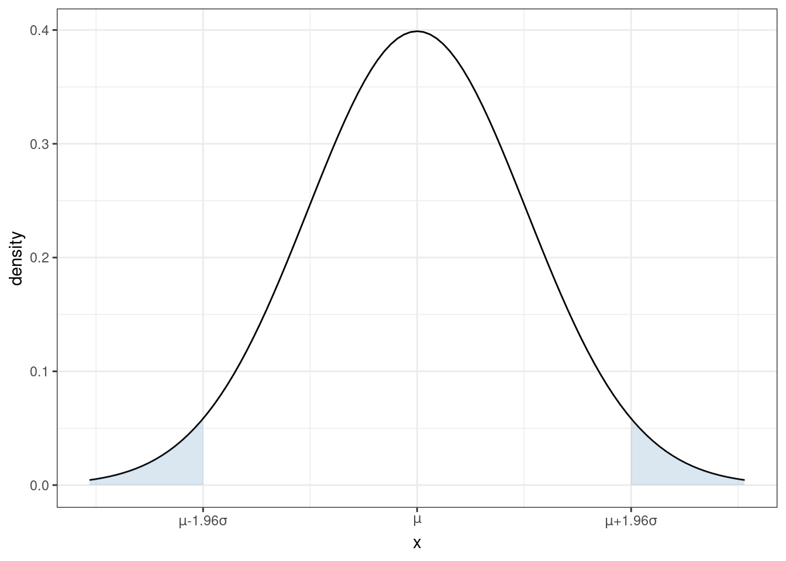
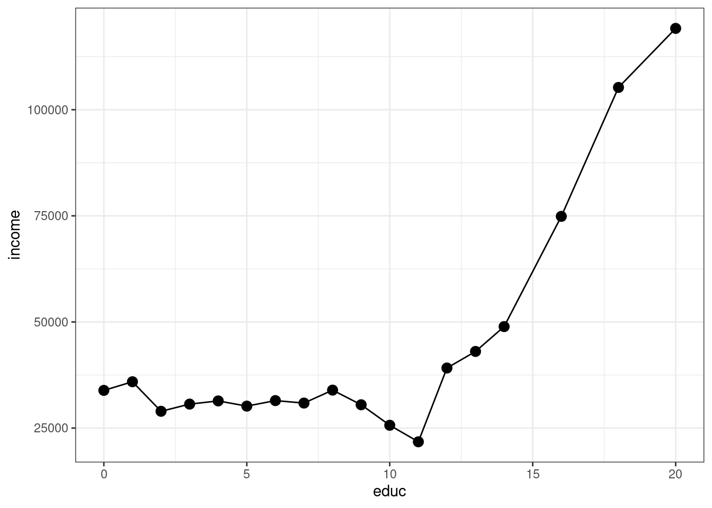
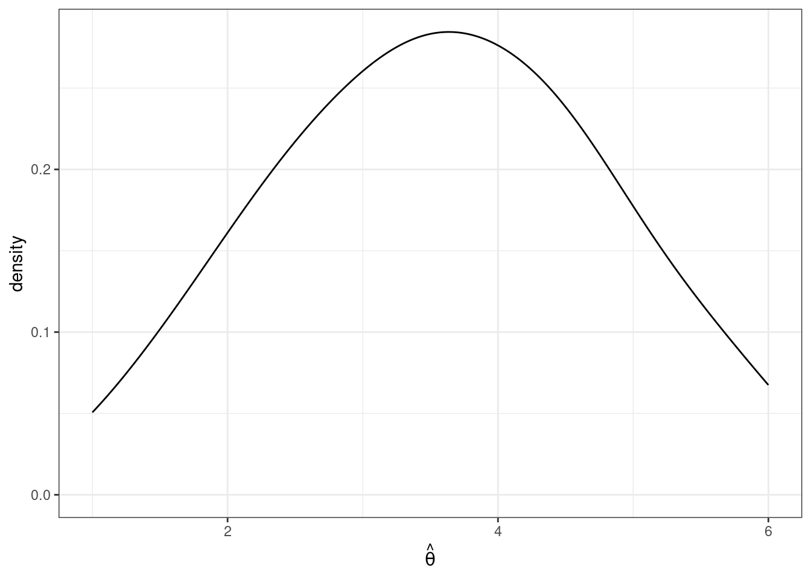
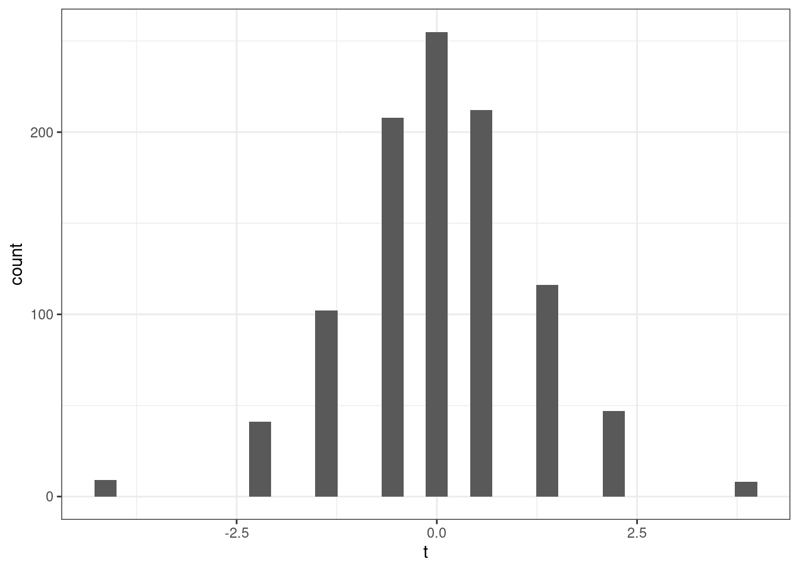
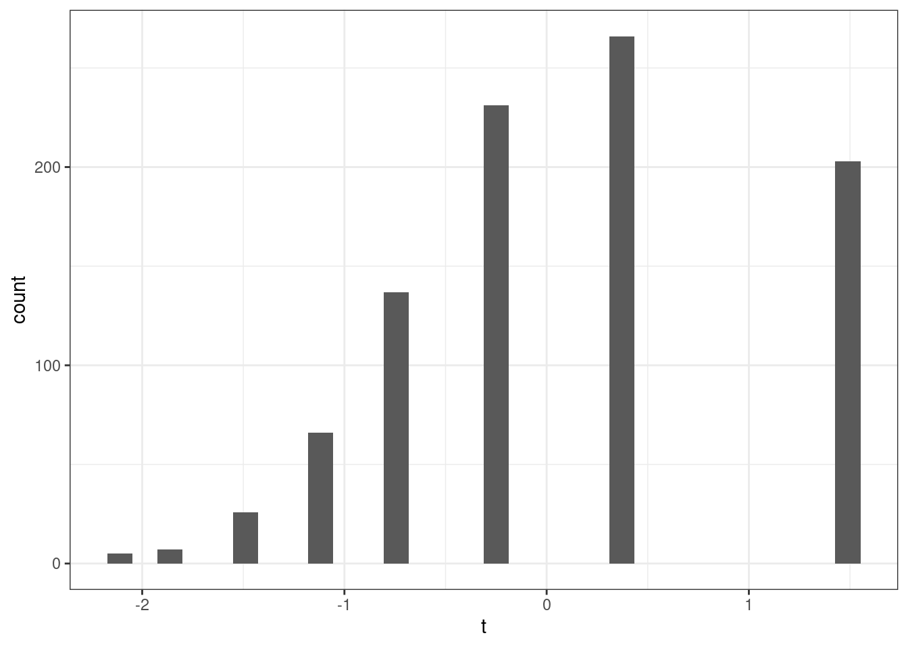
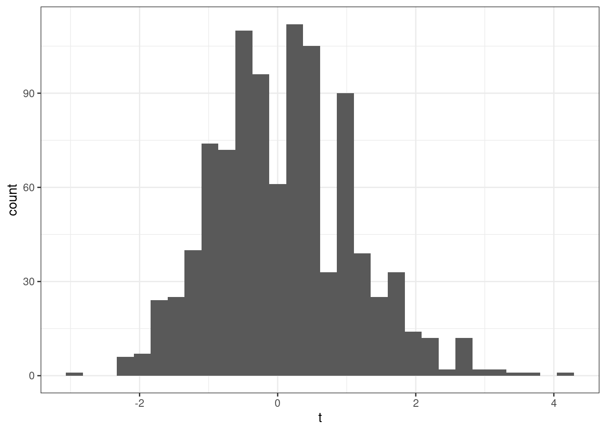
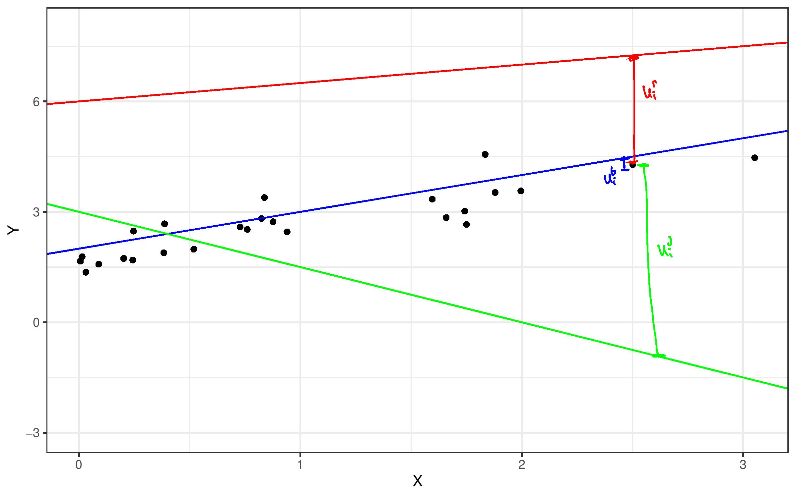

Supplementary Notes and References for ECON 4750
2023-09-06
Topic 1 Introduction
These are a set of detailed course notes for ECON 4750 at UGA. They largely come from my personal notes that I have used to teach this course in previous years, which, in turn, are largely based on the Stock and Watson textbook serves as the other main reference for the course.
These notes have improved drastically over the course of several years. However, they are a work in progress and have not been professionally edited or anything like that…so it is possible that there are some mistakes (if you find any, please let me know). That said, I hope you will find this to be a useful resource this semester.
1.1 What is this?
In previous years, I used to provide these notes as supplementary material for the textbook. Now, I think that there is enough detail here that it can be used as a main reference for the course. And, for example, there are several topics that we will cover in class in substantially more detail than in the textbook.
The material provided here can also be useful as a quasi-study guide. In particular, the notes cover pretty much exactly what we will be able to cover in a one semester course. In some ways, covering less material relative to the textbook can (in my view) make things easier for students. The notes also provide cross-references to the corresponding section in the textbook. For some topics here, I provide substantially less detail than the book; this may help you when it comes to studying as it may give you a sense of the material I see as being most important. In addition, there are additional practice questions (some with answers) provided at the end of each section.
1.2 What is this not?
There are a couple of things that I want to explicitly say that this material is not. These include:
A substitute for coming to class — I will take attendance anyway, but not attending class and relying on this material is not a good plan. Please do not do this.
A full substitute for the textbook — In a number of places, the textbook contains substantially more details than I am able to provide here. In my experience, it is also useful to have different “voices” that you can refer to (e.g., you may find my explanation unclear but may find the textbook much clearer). The textbook also contains substantially more material than what I provide in these notes. If there are additional topics in the textbook that we do not cover that you would like to learn about, these should all be understandable for you by the end of this semester.
Sufficient for making good grades on exams — I don’t suspect that it will be a good strategy to rely exclusively on the material provided here in order to do well on the exams. I think this material should be helpful and perhaps even a good starting point when it comes to studying, but it is not sufficient for making a good grade in the class.
1.3 Why did I write this?
I have a strong opinion about the best order to teach the material in ECON 4750. And, although, there are a number of advanced undergraduate textbooks in Econometrics that I like and reference as I teach the course, none of them go in the same order that I would like to teach. Therefore, I think one way that I can both go in the order that I want to during the semester without confusing you (the student) too much is to provide a detailed set of references to material that we are covering throughout the semester.
The book that I strongly suggest for the course is Stock and Watson. By the end of the semester, we will have covered in much detail the first 14 chapters of the textbook (and some topics we will have covered in substantially more detail than in the textbook). If I had more time, the next topic that I would cover in this course would be Time Series Econometrics. I used to cover this material in the current course, but I have found that I am happier with the tradeoff of understanding slightly fewer topics better relative to covering more topics but at a faster pace. Time series is especially important for students who are interested in macroeconomics or finance. Fortunately, we offer a time series econometrics course, and, if you take it, you should be well prepared for it coming out of this course.
1.4 Additional References
These are all free to download; they are not main textbooks but I sometimes consult them for the class and could potentially be useful for you to consult in the future:
For R programming: Introduction to Econometrics with R, by Cristoph Hanck, Martin Arnold, Alexander Gerber, and Martin Schmelzer
For prediction/machine learning: An Introduction to Statistical Learning, by Gareth James, Daniela Witten, Trevor Hastie, and Robert Tibshirani
For causal inference: Causal Inference: The Mixtape, by Scott Cunningham
Additional R References:
There are tons of free R resources available online. Here are some that seem particularly useful to me.
Manageable Introduction: Introduction to R and RStudio, by Stephanie Spielman
Full length book: Introduction to Data Science: Data Analysis and Prediction Algorithms with R, by Rafael Irizarry (this is way more than you will need for this course, but I suggest checking out Chapters 1, 2, 3, and 5, and there’s plenty more that you might find interesting).
Full length book: STAT 545: Data Wrangling, exploration, and analysis with R, by Jenny Bryan
1.5 Goals for the Course
I have three high level goals — that by the end of the semester, students should be able to
Run regressions and be able to interpret them (this includes even complex regressions) and also be able to think through which regression you ought to run
Use data in order to be able to predict outcomes of interest
Be able to think clearly about when statistical results can be interpreted as causal effects.
In order to make progress towards these three goals, we also will need to learn about two additional topics:
Statistical Programming
Probability and Statistics
We’ll start the course off talking about these two topics. Perhaps this will be review material for some of you, but I have found that it is worth it to spend several weeks getting everyone on the same page with respect to these topics.
1.6 Studying for the Class
Students ask me all the time “How should I study for your class?” My advice (and I think this applies to most classes, not just my class) is for you to start by studying the notes from class. The things that I have discussed in class are the things that I think are most important for you learn in this sort of class and are the material that will be covered on the exam. That said, it may sometimes be the case that you do not fully understand a lecture or the notes that you took from a lecture when you are studying (this certainly applied to me when I was a student). If there are places that you do not understand what the notes mean, then I think that is the time when you should find the relevant portion of the textbook (or supplementary notes provided here) in order to “supplement” what the notes say.
1.7 Data Used in the Course
The following provides the full list of data that we will use this semester. Some of the links below are to data posted on my website; others point to data hosted externally (if you notice any broken links, please let me know).
acsData from the 2019 American Community Survey about Education and Earnings
Access: Course Website
Description: Course Website
AirqData about air quality in California counties in 1972.
Access: `data(Airq, package=“Ecdat”)
Description:
?Ecdat::Airq
AJRData about GDP, institutions, and settler mortality
Access: `data(AJR, package=“hdm”)
Description:
?hdm::AJR
banksData about bank closures in Mississippi during the Great Depression
Access: Course Website
Description: Course Website
Birthweight_SmokingData about infant birthweights and mother’s smoking from PA 1989
Access: Course Website
Description: Mark Watson’s website
CaschoolSchool-level test score data from California in 1998-1999
Access:
data(Caschool, package="Ecdat")Description:
?Ecdat::Caschool
diamond_trainData about diamond prices. The full version of this data I got from Kaggle, and then I split it into training and testing data.
Access: Course Website
Description: A description of each column in the data is available under the
Descriptiontab on Kaggle
diamond_testOut of sample version of
diamond_traindataAccess: Course Website
Description: A description of each column in the data is available under the
Descriptiontab on Kaggle
FairIndividual-level data about affairs in the United States
Access:
data(Fair, package="Ecdat")Description:
?Ecdat::Fair
FatalitiesState-level panel data about drunk driving laws and traffic fatalities
Access: `data(Fatality, package=“AER”)
Description:
?AER::Fatality
fertilizer_2000Country-level data about fertilizer and crop yields from the year 2000. See description of
fertilizer_panelbelow for more detailsAccess: Course Website
Description: Course Website
fertilizer_panelCountry-level panel data from 1965-2000 (every 5 years) about fertilizer and crop yields for 68 developing countries. This data is a smaller version of the data used in McArthur, John W., and Gordon C. McCord. “Fertilizing growth: Agricultural inputs and their effects in economic development.” Journal of Development Economics 127 (2017): 133-152. url: https://doi.org/10.1016/j.jdeveco.2017.02.007.
Access: Course Website
Description: Course Website
houseU.S. House of Representatives elections data from 1946-1998
Access: Course Website
Description: Course Website
intergenerational_mobilityIntergenerational mobility data from PSID
Access: Course Website
Description: Course Website
Lead_MortalityInfant mortality and lead pipes in 1900
Access: Access: Course Website
Description: Mark Watson’s website
mldaCar accident deaths by age group
Access: Course Website
Description: Course Website
mrozLabor force particpation of married women
Access:
data(mroz, package="wooldridge")Description:
?wooldridge::mroz
mutual_fundsMutual fund performance data
Access: Course Website
Description: Course Website
rand_hieRAND health insurance experiment
Access: Course Website
Description: Course Website
StarData from Project STAR that randomly assigned some students to smaller class sizes
Access: `data(Star, package=“Ecdat”)
Description:
?Ecdat::Star
titanic_trainingPassenger level data on surviving Titanic. This data is a slightly adapted version of the
titanicdata on KaggleAccess: Course Website
Description: Kaggle
titanic_testingOut of sample version of
titanic_trainingdataAccess: Course Website
Description: Kaggle
us_dataData from the 2019 American Community Survey via IPUMS
Access: Course Website
Description: Course Website
Topic 2 Statistical Programming
We will learn a lot more about statistical programming this semester, but we’ll start with a crash course on R with the idea of getting you up-and-running.
I listed a few references in the Introduction, but this section will mostly follow the discussion in Introduction to Data Science: Data Analysis and Prediction Algorithms with R, by Rafael Irizarry. I’ll abbreviate this reference as IDS throughout this section.
IDS is not specifically geared towards Econometrics, but I think it is a really fantastic book and resource. In this section, I cover what I think are the most important basics of R programming and additionally point you to the references for the material that I cover in class. But I would strongly recommend reading all of the first 5 chapters of IDS over the next couple of weeks. We will basically only cover the first 5 chapters in our class, but the course should set you up so that the remaining 35 chapters of the book can serve as helpful reference material throughout the rest of the semester.
2.1 Setting up R
This section covers how to set up R and RStudio and then what RStudio will look like when you open it up.
2.1.1 What is R?
Related Reading: IDS 1.1
R is a statistical programming language. This is important for two reasons
It looks like a “real” programming language. In my view, this is a big advantage. And many of the programming skills that we will learn in this class will be transferable. What I mean is that, if you one day want to switch to writing code in Stata or Python, I think the switch should be not-too-painful because learning new “syntax” (things like where to put the semi-colons) is usually relatively easy compared to the “way of thinking” about how to write code. Some other statistical programming languages are more “canned” than R. In some sense, this makes them easier to learn, but this also comes with the drawback that whatever skills that you learn are quite specific to that one language.
Even though R is a real programming language, it is geared towards statistics. Compared to say, Matlab, a lot of common statistical procedures (e.g., running a regression) will be quite easy for you.
R is very popular among statisticians, computer scientists, economists.
It is easy to share code across platforms: Linux, Windows, Mac. Besides that, it is easy to write and contribute extensions. I have 10+ R packages that you can easily download and immediately use.
There is a large community, and lots of available, helpful resources.
First place to look if you don’t know how to do something: DuckDuckGo (or…err…Google)!
StackOverflow
2.1.2 Downloading R
We will use R (https://www.r-project.org/) to analyze data. R is freely available and available across platforms. You should go ahead and download R for your personal computer as soon as possible — this should be relatively straightforward. It is also available at most computer labs on campus.
2.1.3 RStudio
Base R comes with a lightweight development environment (i.e., a place to write and execute code), but most folks prefer RStudio as it has more features. You can download it here: https://www.rstudio.com/products/rstudio/download/#download; choose the free version based on your operating system (Linux, Windows, Mac, etc.).
2.1.4 RStudio Development Environment
Related Reading: IDS 1.4
When you first open Rstudio, it will look something like this

Typically, we will write scripts, basically just as a way to save the code that we have written. Go to File -> New File -> R Script. This will open up a new pane, and your screen should look something like this

Let’s look around here. The top left pane is called the “Source Pane”. It is where you can write an R script. Try typing
in that pane. This is a very simple R program. Now, type Ctrl+s to save the script. This will likely prompt you to provide a name for the script. You can call it first_script.R or something like that. The only thing that really matters is that the file name ends in “.R” (although you should at least give the file a reasonably descriptive name).
Now let’s move to the bottom left pane. This is called the “Console Pane”. It is where the actual computations happen in R (Notice that, although we have already saved our first script, we haven’t actually run any code). Beside the blue arrow in that pane, try typing
and then press ENTER. This time you should actually see the answer.
Now, let’s go back to the Source pane. Often, it is convenient to run R programs line by line (mainly in order for it to be easy for you to digest the results). You can do this by pressing Ctrl+ENTER on any line in your script for it to run next. Try this on the first line of your script file where we previously typed 1+1. This code should now run, and you should be able to see the result down in the bottom left Console pane.
We will ignore the two panes on the right for now and come back to them once we get a little more experience programming in R.
2.2 Installing R Packages
Related Reading: IDS 1.5
When you download R, you get “base” R. Base R contains “basic” functions that are commonly used by most R users. To give some examples, base R gives you the ability add, subtract, divide, or multiply numbers. Base R gives you the ability to calculate the mean (the function is called mean) or standard deviation (the function is called sd) of a vector of numbers.
Base R is quite powerful and probably the majority of code you will write in R will only involve Base R.
That being said, there are many cases where it is useful to expand the base functionality of R. This is done through packages. Packages expand the functionality of R. R is open source so these packages are contributed by users.
It also typically wouldn’t make sense for someone to install all available R packages. For example, a geographer might want to install a much different set of packages relative to an economist. Therefore, we will typically install only the additional functionality that we specifically want.
Example 2.1 In this example, we’ll install the dslabs package (which is from the IDS book) and the lubridate package (which is a package for working with dates in R).
Installing a package is only the first step to using a package. You can think of installing a package like downloading a package. To actually use a package, you need to load it into memory (i.e., “attach” it) or at least be clear about the package where a function that you are trying to call comes from.
Example 2.2 Dates can be tricky to work with in R (and in programming languages generally). For example, they are not exactly numbers, but they also have more structure than just a character string. The lubridate package contains functions for converting numbers/strings into dates.
bday <- "07-15-1985"
class(bday) # R doesn't know this is actually a date yet
#> [1] "character"
# load the package
library(lubridate)
# mdy stands for "month, day, year"
# if date were in different format, could use ymd, etc.
date_bday <- mdy(bday)
date_bday
#> [1] "1985-07-15"
# now R knows this is a date
class(date_bday)
#> [1] "Date"Another (and perhaps better) way to call a function from a package is to use the :: syntax. In this case, you do not need the call to library from above. Instead, you can try
This does exactly the same thing as the code before. What is somewhat better about this code is that it is easier to tell that the mdy function came from the lubridate package.
2.2.1 A list of useful R packages
AER— package containing data from Applied Econometrics with Rwooldridge— package containing data from Wooldridge’s text bookggplot2— package to produce sophisticated looking plotsdplyr— package containing tools to manipulate datahaven— package for loading different types of data filesplm— package for working with panel datafixest— another package for working with panel dataivreg— package for IV regressions, diagnostics, etc.estimatr— package that runs regressions but with standard errors that economists often like more than the default options inRmodelsummary— package for producing nice output of more than one regression and summary statistics
As of this writing, there are currently 18,004 R packages available on CRAN (R’s main repository for contributed packages).
2.3 R Basics
Related Reading: IDS 2.1
In this section, we’ll start to work towards writing useful R code.
2.3.1 Objects
Related Reading: IDS 2.2
The very first step to writing code that can actually do something is to able to store things. In R, we store things in objects (perhaps sometimes I will also use the word variables).
Earlier, we used R to calculate \(1+1\). Let’s go back to the Source pane (top left pane in RStudio) and type
Press Ctrl+ENTER on this line to run it. You should see the same line down in the Console now.
Let’s think carefully about what is happening here
answeris the name of the variable (or object) that we are creating here.the
<-is the assignment operator. It means that we should assign whatever is on the right hand side of it to the variable that is on the left hand side of it1+1just computes \(1+1\) as we did earlier. Soon we will put more complicated expressions here.
You can think about the above code as computing \(1+1\) and then saving it in the variable answer.
Practice: Try creating variable called five_squared that is equal to \(5 \times 5\) (multiplication in R is done using the * symbol).
There are a number of reasons why you might like to create an object in R. Perhaps the main one is so that you can reuse it. Let’s try multiplying answer by \(3\).
If you wanted, you could also save this as its own variable too.
2.3.2 Workspace
Related Reading: IDS 2.2
Before we move on, I just want to show you what my workspace looks like now.

As we talked about above, you can see the code in my script in the Source pane in the top left. You can also see the code that I actually ran in the Console pane on the bottom left.
Now, take a look at the top right pane. You will see under the Environment tab that answer shows up there with a value of 2. The Environment tab keeps track of all the variables that you have created in your current session. A couple of other things that might be useful to point out there.
Later on in the class, we will often import data to work with. The “Import Dataset” button that is located in this top right pane is often useful for this.
Occasionally, you might get into the case where you have saved a bunch of variables and it would be helpful to “start over”. The broom in this pane will “clean” your workspace (this just means delete everything).
2.3.3 Importing Data
To work with actual data in R, we will need to import it. I mentioned the “Import Data” button above, but let me mention a few other possibilities here, including how to import data by writing code.
On the course website, I posted three files firm.data.csv, firm_data.RData, and firm_data.dta. All three of these contain exactly the same small, fictitious dataset, but are saved in different formats.
Probably the easiest way to import data in R is through the Files pane on the bottom right. In particular, suppose that you saved firm_data.csv in your “Downloads” folder. Try clicking the “…” (which, in the screenshot of my workspace above, is right beside the folder that I am in which is called “Detailed Course Notes”), then select your Downloads folder. This will switch the content of the Files pane to show the files in your Downloads folder. Now click firm_data.csv. This will open a menu to import the data. R is quite good at recognizing different types of data files and importing them, so this same procedure will work for firm_data.RData and firm_data.dta even though they are different types of files.
Next, let’s discuss how to import data by writing computer code (by the way, this is actually what is happening behind the scenes when you import data through the user interface as described above). “csv” stands for “Comma Separated Values”. This is basically a plain text file (e.g., try opening it in Notepad or Text Editor) where the columns are separated by commas and the rows are separated by being on different lines. Most any computer program can read this type of file; that is, you could easily import this file into, say, R, Excel, or Stata. You can import a .csv file using R code by
An RData file is the native format for saving data in R. You can import an RData file using the following command:
Similarly, a dta file the native format for saving data in Stata. You can import a dta file using the following command:
In all three cases above, what we have done is to create a new data.frame (a data.frame is a type of object that we’ll talk about in detail later on in this chapter) called firm_data that contains the data that we were trying to load.
2.4 Functions in R
Related Reading: IDS 2.2
R has a large number of helpful, built-in functions. Let’s start with a pretty representative example: computing logarithms. This can be done using the R function log.
You can tell this is a function because of the parentheses. The 5 inside of the parentheses is called the argument of the function. As practice, try computing the \(\log\) of 7.
Side Comment: As a reminder, the logarithm of some number, let’s call it \(b\), is is the value of \(a\) that solves \(\textrm{base}^a = b\).
The default base in R is \(e \approx 2.718\), so that log(5) actually computes what you might be more used to calling the “natural logarithm”. You can change the default value of the base by adding an extra argument to the function.
In order to learn about what arguments are available (and what they mean), you can access the help files for a particular function by running either
and, of course, substituting the name of whatever function you want to learn about in place of log.
In RStudio, it can also be helpful to press Tab and RStudio will provide possible completions to the function you are typing as well as what arguments can be provided to that function.
Practice: R has a function for computing absolute value (you’ll have to find the name of it on your own). Try computing the absolute value of \(5\) and \(-5\). Try creating a variable called negative_three that is equal to \(-3\); then, try to compute the absolute value of negative_three.
2.5 Data types
Related Reading: IDS 2.4
2.5.1 Numeric Vectors
The most basic data type in R is the vector. In fact, above when we created variables that were just a single number, they are actually stored as a numeric vector.
To more explicitly create a vector, you can use the c function in R. For example, let’s create a vector called five that contains the numbers 1 through 5.
We can print the contents of the vector five just by typing its name
Another common operation on vectors is to get a particular element of a vector. Let me give an example
This code takes the vector five and returns the third element in the vector. Notice that the above line contains braces, [ and ] rather than parentheses.
If you want several different elements from a vector, you can do the following
This code takes the vector five and returns the first and fourth element in the vector.
One more useful function for vectors is the function length. This tells you the number of elements in vector. For example,
which means that there are five total elements in the vector five.
2.5.2 Vector arithmetic
Related Reading: IDS 2.11
The main operations on numeric vectors are +, -, *, / which correspond to addition, subtraction, multiplication, and division. Often, we would like to carry out these operations on vectors.
There are two main cases. The first case is when you try to add a single number (i.e., a scalar) to all the elements in a vector. In this setup, the operation will happen element-wise which means the same number will be added to all numbers in the vector. This will be clear with some examples.
five <- c(1,2,3,4,5)
# adds one to each element in vector
five + 1
#> [1] 2 3 4 5 6
# also adds one to each element in vector
1 + five
#> [1] 2 3 4 5 6Similar things will happen with the other mathematical operations above. Here are some more examples:
five * 3
#> [1] 3 6 9 12 15
five - 3
#> [1] -2 -1 0 1 2
five / 3
#> [1] 0.3333333 0.6666667 1.0000000 1.3333333 1.6666667The other interesting case is what happens when you try to apply any of the same mathematical operators to two different vectors.
# just some random numbers
vec2 <- c(8,-3,4,1,7)
five + vec2
#> [1] 9 -1 7 5 12
five - vec2
#> [1] -7 5 -1 3 -2
five * vec2
#> [1] 8 -6 12 4 35
five / vec2
#> [1] 0.1250000 -0.6666667 0.7500000 4.0000000 0.7142857You can immediately see what happens here. For example, for five + vec2, the first element of five is added to the first element of vec2, the second element of five is added to the second element of vec2 and so on. Similar things happen for each of the other mathematical operations too.
There’s one other case that might be interesting to consider too. What happens if you try to apply these mathematical operations to two vectors of different lengths? Let’s find out
vec3 <- c(2,6)
five + vec3
#> Warning in five + vec3: longer object length is not a multiple of shorter object length
#> [1] 3 8 5 10 7You’ll notice that this computes something but it also issues a warning. What happens here is that the result is equal to the first element of five plus the first element of vec3, the second of five plus the second element of vec3, the third element of five plus the first element of vec3, the fourth element of five plus the second element of vec3, and the fifth element of five plus the first element of vec3. What’s happening here is that, since vec3 contains fewere elements that five, the elements of vec3 are getting recycled. In my experience, this warning often indicates a coding mistake. There are many cases where I want to add the same number to all elements in a vector, and many other cases where I want to add two vectors that have the same length, but I cannot think of any cases where I would want to add two vectors the way that is being carried out here.
The same sort of things will happen with subtraction, multiplication, and division (feel free to try it out).
2.5.3 More helpful functions in R
This is definitely an incomplete list, but I’ll point you here to some more functions in R that are often helpful along with quick examples of them.
seqfunction — creates a “sequence” of numberssumfunction — computes the sum of a vector of numberssort,order, andrevfunctions — functions for understanding the order or changing the order of a vector%%— modulo function (i.e., returns the remainder from dividing one number by another)
2.5.4 Other types of vectors
There are other types of vectors in R too. Probably the main two other types of vectors are character vectors and logical vectors. We’ll talk about character vectors here and defer logical vectors until later. Character vectors are often referred to as strings.
We can create a character vector as follows
The above code creates two character vectors and then prints the first one.
Side Comment c stands for “concatenate”. Concatenate is a computer science word that means to combine two vectors. Probably the most well known version of this is “string concatenation” that combines two vectors of characters. Here is an example of string concatenation.
Sometimes string concatenation means to put two (or more strings) into the same string. This can be done using the paste command in R.
Notice that paste puts in a space between string1 and string2. For practice, see if you can find an argument to the paste function that allows you to remove the space between the two strings.
2.5.5 Data Frames
Another very important type of object in R is the data frame. I think it is helpful to think of a data frame as being very similar to an Excel spreadsheet — sort of like a matrix or a two-dimensional array. Each row typically corresponds to a particular observation, and each column typically provides the value of a particular variable for that observation.
Just to give a simple example, suppose that we had firm-level data about the name of the firm, what industry a firm was in, what county they were located in, and their number of employees. I created a data frame like this (it is totally made up, BTW) and show it to you next
| name | industry | county | employees |
|---|---|---|---|
| ABC Manufacturing | Manufacturing | Clarke | 531 |
| Martin’s Muffins | Food Services | Oconee | 6 |
| Down Home Appliances | Manufacturing | Clarke | 15 |
| Classic City Widgets | Manufacturing | Clarke | 211 |
| Watkinsville Diner | Food Services | Oconee | 25 |
Side Comment: If you are following along on R, I created this data frame using the following code
firm_data <- data.frame(name=c("ABC Manufacturing", "Martin\'s Muffins", "Down Home Appliances", "Classic City Widgets", "Watkinsville Diner"),
industry=c("Manufacturing", "Food Services", "Manufacturing", "Manufacturing", "Food Services"),
county=c("Clarke", "Oconee", "Clarke", "Clarke", "Oconee"),
employees=c(531, 6, 15, 211, 25))This is also the same data that we loaded earlier in Section 2.3.
Often, we’ll like to access a particular column in a data frame. For example, you might want to calculate the average number of employees across all the firms in our data.
Typically, the easiest way to do this, is to use the accessor symbol, which is $ in R. This will make more sense with an example:
firm_data$employees just provides the column called “employees” in the data frame called “firm_data”. You can also notice that firm_data$employees is just a numeric vector. This means that you can apply any of the functions that we have been covering on it
mean(firm_data$employees)
#> [1] 157.6
log(firm_data$employees)
#> [1] 6.274762 1.791759 2.708050 5.351858 3.218876Side Comment: Notice that the function mean and log behave differently. mean calculates the average over all the elements in the vector firm_data$employees and therefore returns a single number. log calculates the logarithm of each element in the vector firm_data$employees and therefore returns a numeric vector with five elements.
Side Comment:
The $ is not the only way to access the elements in a data frame. You can also access them by their position. For example, if you want whatever is in the third row and second column of the data frame, you can get it by
Sometimes it is also convenient to recover a particular row or column by its position in the data frame. Here is an example of recovering the entire fourth row
Notice that you just leave the “column index” (which is the second one) blank
Side Comment: One other thing that sometimes takes some getting used to is that, for programming in general, you have to be very precise. Suppose you were to make a very small typo. R is not going to understand what you mean. See if you can spot the typo in the next line of code.
A few more useful functions for working with data frames are:
nrowandncol— returns the number of rows or columns in the data framecolnamesandrownames— returns the names of the columns or rows
2.5.6 Lists
Vectors and data frames are the main two types of objects that we’ll use this semester, but let me give you a quick overview of a few other types of objects. Let’s start with lists. Lists are very generic in the sense that they can carry around complicated data. If you are familiar with any object oriented programming language like Java or C++, they have the flavor of an “object”, in the object-oriented sense.
I’m not sure if we will see any examples this semester where you have to use a list. But here is an example. Suppose that we wanted to put the vector that we created earlier five and the data frame that we created earlier firm_data into the same object. We could do it as follows
You can access the elements of a list in a few different ways. Sometimes it is convenient to access them via the $
Other times, it is convenient to access them via their position in the list
unusual_list[[2]] # notice the double brackets
#> name industry county employees
#> 1 ABC Manufacturing Manufacturing Clarke 531
#> 2 Martin's Muffins Food Services Oconee 6
#> 3 Down Home Appliances Manufacturing Clarke 15
#> 4 Classic City Widgets Manufacturing Clarke 211
#> 5 Watkinsville Diner Food Services Oconee 252.5.7 Matrices
Matrices are very similar to data frames, but the data should all be of the same type. Matrices are very useful in some numerical calculations that are beyond the scope of this class. Here is an example of a matrix.
You can access elements of a matrix by their position in the matrix, just like for the data frame above.
2.5.8 Factors
Sometimes variables in economics are categorical. This sort of variable is somewhat between a numeric variable and a string. In R, categorical variables are called factors.
A good example of a categorical variable is firm_data$industry. It tells you the “category” of the industry that a firm is in.
Oftentimes, we may have to tell R that a variable is a “factor” rather than just a string. Let’s create a variable called industry that contains the industry from firm_data but as a factor.
industry <- as.factor(firm_data$industry)
industry
#> [1] Manufacturing Food Services Manufacturing Manufacturing Food Services
#> Levels: Food Services ManufacturingA useful package for working with factor variables is the forcats package.
2.5.9 Understanding an object in R
Sometimes you may be in the case where there is a variable where you don’t know what exactly it contains. Some functions that are helpful in this case are
class— tells you, err, the class of an object (i.e., its “type”)head— shows you the “beginning” of an object; this is especially helpful for large objects (like some data frames)str— stands for “structure” of an object
Let’s try these out
class(firm_data)
#> [1] "data.frame"
# typically would show the first five rows of a data frame,
# but that is the whole data frame here
head(firm_data)
#> name industry county employees
#> 1 ABC Manufacturing Manufacturing Clarke 531
#> 2 Martin's Muffins Food Services Oconee 6
#> 3 Down Home Appliances Manufacturing Clarke 15
#> 4 Classic City Widgets Manufacturing Clarke 211
#> 5 Watkinsville Diner Food Services Oconee 25
str(firm_data)
#> 'data.frame': 5 obs. of 4 variables:
#> $ name : chr "ABC Manufacturing" "Martin's Muffins" "Down Home Appliances" "Classic City Widgets" ...
#> $ industry : chr "Manufacturing" "Food Services" "Manufacturing" "Manufacturing" ...
#> $ county : chr "Clarke" "Oconee" "Clarke" "Clarke" ...
#> $ employees: num 531 6 15 211 25Practice: Try running class, head, and str on the vector five that we created earlier.
2.6 Logicals
Related Reading: IDS 2.13
All programming languages have ways of tracking whether variables meet certain criteria. These are often called Booleans or Logicals. For us, this will particularly come up in the context of subsetting data (i.e., selecting data based on some condition) and in running particular portions of code based on some condition.
Some main logical operators are ==, <=, >=, <, > corresponding to whether or not two things are equal, less than or equal to, greater than or equal, strictly less than, and strictly greater than. These can be applied to vectors. And the comparisons result in either TRUE or FALSE. Here are some examples
five <- c(1,2,3,4,5)
# only 3 is equal to 3
five == 3
#> [1] FALSE FALSE TRUE FALSE FALSE
# 1,2,3 are all less than or equal to 3
five <= 3
#> [1] TRUE TRUE TRUE FALSE FALSE
# 3,4,5, are all greater than or equal to 3
five >= 3
#> [1] FALSE FALSE TRUE TRUE TRUE
# 1,2 are strictly less than 3
five < 3
#> [1] TRUE TRUE FALSE FALSE FALSE
# 4,5 are strictly greater than 3
five > 3
#> [1] FALSE FALSE FALSE TRUE TRUEExample 2.3 Often, we might be interested in learning about a subset of our data. As a simple example, using our firm_data from earlier, you could imagine being interested in average employment for manufacturing firms.
We can do this using the subset function along with the logical operations we’ve learned in this section.
manufacturing_firms <- subset(firm_data, industry=="Manufacturing")
mean(manufacturing_firms$employees)
#> [1] 252.3333As practice, try creating a subset of firm_data based on firms having more than 100 employees.
2.6.1 Additional Logical Operators
Related Reading: IDS 2.13
There are a number of additional logical operators that can be useful in practice. Here, we quickly cover several more.
!=— not equalWe can link together multiple logical comparisons. If we want to check whether multiple conditions hold, we can use “logical AND”
&; if we want to check whether any of multiple conditions hold, we can use “logical OR”|.%in%— checks whether the elements of one vector show up in another vectorOften it is useful to check whether any logical conditions are true or all logical conditions are true. This can be done as follows
2.7 Programming basics
2.7.1 Writing functions
Related Reading: IDS 3.2
It is often helpful to write your own functions in R. If you ever find yourself repeating the same code over and over, this suggests that you should write this code as a function and repeatedly call the function.
Suppose we are interesting in solving the quadratic equation \[ ax^2 + bx + c = 0 \] If you remember the quadratic formula, the solution to this equation is \[ x = \frac{-b \pm \sqrt{b^2-4ac}}{2a} \] It would be tedious to calculate this by hand (especially if we wanted to calculate it for many different values of \(a\), \(b\), and \(c\)), so let’s write a function to do it.
Before we try this out, let’s notice a few things. First, while this particular function is for solving the quadratic equation, this is quite representative of what a function looks like in R.
quadratic_solver— This is the name of the function. It’s good to give your function a descriptive name related to what it does. But you could call it anything you want. If you wanted to call this functionuga, it would still work.the part
<- functionfinishes off assigning the function the namequadratic_solverand implies that we are writing down a function rather than avectorordata.frameor something else. This part will show up in all function definitions.the part
(a, b, c),a,b, andcare the names of the arguments to the function. In a minute when we call the function, we need to tell the function the particular values ofa,b, andcfor which to solve the quadratic equation. We could name these whatever we want, but, again, it is good to have descriptive names. When you write a different function, it can have as many arguments as you want it to have.the part
{ ... }everything that the function does should go between the curly bracketsthe line
root1 <- ( -b + sqrt(b^2 - 4*a*c) ) / 2*acontains the main thing that is calculated by our function. Notice that we only calculate one of the “roots” (i.e., solutions to the quadratic equation) because of the \(+\) in this expression.the line
root1R returns whatever variable is on the last line of the function. It might be somewhat more clear to writereturn(root1). The behavior of the code would be exactly the same, but it is just the more common “style” in R programming to not include the explicitreturn.
Now let’s try out our function
# solves quadratic equation for a=1, b=4, c=3
quadratic_solver(1,4,3)
#> [1] -1
# solves quadratic equation for a=-1, b=5, c=10
quadratic_solver(-1,5,10)
#> [1] -1.531129Two last things that are worth pointing out about functions:
Functions in R can be set up to take default values for some of their arguments
Because the arguments have names, if you are explicit about the name of the argument, then the order of the argument does not matter.
To give examples, let’s write a slightly modified version of our function to solve quadratic equations.
The only thing different here is that a takes the default value of 1. Now let’s try some different calls to quadratic_solver and quadratic_solver2
# solve again for a=1,b=4,c=3
quadratic_solver2(b=4,c=3)
#> [1] -1
# replace default and change order
quadratic_solver2(c=10,b=5,a=-1)
#> [1] -1.531129
# no default set for quadratic_solver so it will crash if a not provided
quadratic_solver(b=4,c=3)
#> Error in quadratic_solver(b = 4, c = 3): argument "a" is missing, with no default2.7.2 if/else
Related Reading: IDS 3.1
Often when writing code, you will want to do different things depending on some condition. Let’s write a function that takes in the number of employees that are in a firm and prints “large” if the firm has more than 100 employees and “small” otherwise.
large_or_small <- function(employees) {
if (employees > 100) {
print("large")
} else {
print("small")
}
}I think, at this point, this code should make sense to you. The only new thing is the if/else. The following is not code that will actually run but is just to help understand the logic of if/else.
All that happens with if/else is that we check whether condition evaluate to TRUE or FALSE. If it is TRUE, the code will do whatever is inside the first set of brackets; if it is FALSE, the code will do whatever is in the set of brackets following else.
2.7.3 for loops
Related Reading: IDS 3.4
Often, we need to run the same code over and over again. A for loop is a main programming tool for this case (for loops show up in pretty much all programming languages).
We’ll have more realistic examples later on in the semester, but we’ll do something trivial for now.
The above code, starts with \(i=1\), calculates \(i*3\) (which is 3), and then stores that result in the first element of the vector out, then \(i\) increases to 2, the code calculates \(i*3\) (which is now 6), and stores this result in the second element of out, and so on through \(i=10\).
2.7.4 Vectorization
Related Reading: IDS 3.5
Vectorizing functions is a relatively advanced topic in R programming, but it is an important one, so I am including it here.
Because we will often be working with data, we will often be performing the same operation on all of the observations in the data. For example, suppose that you wanted to take the logarithm of the number of employees for all the firms in firm_data. One way to do this is to use a for loop, but this code would be a bit of a mess. Instead, the function log is vectorized — this means that if we apply it to a vector, it will calculate the logarithm of each element in the vector. Besides this, vectorized functions are often faster than for loops.
Not all functions are vectorized though. Let’s go back to our function earlier called large_or_small. This took in the number of employees at a firm and then printed “large” if the firm had more than 100 employees and “small” otherwise. Let’s see what happens if we call this function on a vector of employees (Ideally, we’d like the function to be applied to each element in the vector).
employees <- firm_data$employees
employees
#> [1] 531 6 15 211 25
large_or_small(employees)
#> Error in if (employees > 100) {: the condition has length > 1This is not what we wanted to have happen. Instead of determining whether each firm was large or small, we get an error basically said that something may be going wrong here. What’s going on here is that the function large_or_small is not vectorized.
In order to vectorize a function, we can use one of a number of “apply” functions in R. I’ll list them here
sapply— this stands for “simplify” apply; it “applies” the function to all the elements in the vector or list that you pass in and then tries to “simplify” the resultlapply— stands for “list” apply; applies a function to all elements in a vector or list and then returns a listvapply— stands for “vector” apply; applies a function to all elements in a vector or list and then returns a vectorapply— applies a function to either the rows or columns of a matrix-like object (i.e., a matrix or a data frame) depending on the value of the argumentMARGIN
Let’s use sapply to vectorize large_or_small.
large_or_small_vectorized <- function(employees_vec) {
sapply(employees_vec, FUN = large_or_small)
}All that this will do is call the function large_or_small for each element in the vector employees. Let’s see it in action
large_or_small_vectorized(employees)
#> [1] "large"
#> [1] "small"
#> [1] "small"
#> [1] "large"
#> [1] "small"
#> [1] "large" "small" "small" "large" "small"This is what we were hoping for.
Side Comment: I also typically replace most all for loops with an apply function. In most cases, I don’t think there is much of a performance gain, but the code seems easier to read (or at least more concise).
Earlier we wrote a function to take a vector of numbers from 1 to 10 and multiply all of them by 3. Here’s how you could do this using sapply
which is considerably shorter.
One last thing worth pointing out though is that multiplication is already vectorized, so you don’t actually need to do sapply or the for loop; a better way is just
Side Comment: A relatively popular alternative to apply functions are map functions provided in the purrr package.
Side Comment: It’s often helpful to have a vectorized version of if/else. In R, this is available in the function ifelse. Here is an alternative way to vectorize the function large_or_small:
large_or_small_vectorized2 <- function(employees_vec) {
ifelse(employees_vec > 100, "large", "small")
}
large_or_small_vectorized2(firm_data$employees)
#> [1] "large" "small" "small" "large" "small"Here you can see that ifelse makes every comparison in its first argument, and then returns the second element for every TRUE coming from the first argument, and returns the third element for every FALSE coming from the first argument.
ifelse also works with vectors in the second and third element. For example:
which picks up 1 and 2 from the second (yes) argument and 6 from the third (no) argument.
2.8 Advanced Topics
To conclude this section, I want to briefly point you towards some advanced material. We will probably brush up against some of this material this semester. That being said, R has some very advanced capabilities related to data science, data manipulation, and data visualization. If you have time/interest you might push further in all of these directions. By the end of the semester, we may not have mastered these topics, but they should at least be accessible to you.
2.8.1 Tidyverse
Related Reading: IDS Chapter 4 — strongly recommend that you read this
R has very good data cleaning / manipulating tools
Many of them are in the “tidyverse”
Mostly this semester, I’ll just give you a data set that is ready to be worked with. But as you move to your own research projects or do work for a company one day, you will realize that a major step in analyzing data is organizing (“cleaning”) the data in a way that you can analyze it
Main packages
ggplot2– see belowdplyr— package to manipulate datatidyr— more ways to manipulate datareadr— read in datapurrr— alternative versions ofapplyfunctions andforloopstibble— alternative versions ofdata.framestringr— tools for working with stringsforcats— tools for working with factors
I won’t emphasize these too much as they are somewhat advanced topics, but if you are interested, these are good (and marketable) skills to have
2.8.2 Data Visualization
Related Reading: IDS Ch. 6-11 — R has very good data visualization tools; strongly recommend that you read this
Another very strong point of
RBase
Rcomes with theplotcommand, but theggplot2package provides cutting edge plotting tools. These tools will be somewhat harder to learn, but we’ll useggplot2this semester as I think it is worth it.538’s graphs produced with ggplot
2.8.3 Reproducible Research
Related Reading: IDS Ch. 40
Rmarkdown is a very useful way to mix code and content
These notes are written in Rmarkdown, and I usually write homework solutions in Rmarkdown
If you are interested, you can view the source for this book at http://github.com/bcallaway11/econ_4750_notes. The source code for this chapter is in the file
01-statistical-programming.Rmd.If you are interested, Github is a very useful version control tool (i.e., keeps track of the version of your project, useful for merging projects, and sharing or co-authoring code) and Dropbox (also useful for sharing code). I use both of these extensively — in general, I use Github relatively more for bigger projects and more public projects and Dropbox more for smaller projects and early versions of projects.
2.8.4 Technical Writing Tools
This is largely beyond the scope of the course, but, especially for students in ECON 6750, I recommend that you look up Latex. This is a markup language mainly for writing technical, academic writing. The big payoff is on writing mathematical equations. The equations in the Course notes are written in Latex.
An easy way to get started here is to use the website Overleaf. This is also closely related to markdown/R-markdown discussed above (Latex tends to be somewhat more complicate which comes with some associated advantages and disadvantages).
2.9 Lab 1: Introduction to R Programming
For this lab, we will do several practice problems related to programming in R.
Create two vectors as follows
Add
xandy, subtractyfromx, multiplyxandy, and dividexbyyand report your results.The geometric mean of a set of numbers is an alternative measure of central tendency to the more common “arithmetic mean” (this is the mean that we are used to). For a set of \(J\) numbers, \(x_1,x_2,\ldots,x_J\), the geometric mean is defined as
\[ (x_1 \cdot x_2 \cdot \cdots \cdot x_J)^{1/J} \]
Write a function called
geometric_meanthat takes in a vector of numbers and computes their geometric mean. Compute the geometric mean ofc(10,8,13)Use the
lubridatepackage to figure out how many days it has been since Jan. 1, 1981.mtcarsis one of the data frames that comes packaged with base R.How many observations does
mtcarshave?How many columns does
mtcarshave?What are the names of the columns of
mtcars?Print only the rows of
mtcarsfor cars that get at least 20 mpgPrint only the rows of
mtcarsthat get at least 20 mpg and have at least 100 horsepower (it is in the column calledhp)Print only the rows of
mtcarsthat have 6 or more cylinders (it is in the column labeldcyl) or at least 100 horsepowerRecover the 10th row of
mtcarsSort the rows of
mtcarsby mpg (from highest to lowest)
2.10 Lab 1: Solutions
x <- seq(2,10,by=2)
y <- c(3,5,7,11,13)
x+y
#> [1] 5 9 13 19 23
x-y
#> [1] -1 -1 -1 -3 -3
x*y
#> [1] 6 20 42 88 130
x/y
#> [1] 0.6666667 0.8000000 0.8571429 0.7272727 0.7692308geometric_mean <- function(x) {
J <- length(x)
res <- prod(x)^(1/J)
res
}
geometric_mean(c(10,8,13))
#> [1] 10.13159the_date <- lubridate::mdy("01-01-1981")
today <- lubridate::mdy("08-23-2021")
today - the_date
#> Time difference of 14844 dayssubset(mtcars, mpg >= 20) #> mpg cyl disp hp drat wt qsec vs am gear carb #> Mazda RX4 21.0 6 160.0 110 3.90 2.620 16.46 0 1 4 4 #> Mazda RX4 Wag 21.0 6 160.0 110 3.90 2.875 17.02 0 1 4 4 #> Datsun 710 22.8 4 108.0 93 3.85 2.320 18.61 1 1 4 1 #> Hornet 4 Drive 21.4 6 258.0 110 3.08 3.215 19.44 1 0 3 1 #> Merc 240D 24.4 4 146.7 62 3.69 3.190 20.00 1 0 4 2 #> Merc 230 22.8 4 140.8 95 3.92 3.150 22.90 1 0 4 2 #> Fiat 128 32.4 4 78.7 66 4.08 2.200 19.47 1 1 4 1 #> Honda Civic 30.4 4 75.7 52 4.93 1.615 18.52 1 1 4 2 #> Toyota Corolla 33.9 4 71.1 65 4.22 1.835 19.90 1 1 4 1 #> Toyota Corona 21.5 4 120.1 97 3.70 2.465 20.01 1 0 3 1 #> Fiat X1-9 27.3 4 79.0 66 4.08 1.935 18.90 1 1 4 1 #> Porsche 914-2 26.0 4 120.3 91 4.43 2.140 16.70 0 1 5 2 #> Lotus Europa 30.4 4 95.1 113 3.77 1.513 16.90 1 1 5 2 #> Volvo 142E 21.4 4 121.0 109 4.11 2.780 18.60 1 1 4 2subset(mtcars, (mpg >= 20) & (hp >= 100)) #> mpg cyl disp hp drat wt qsec vs am gear carb #> Mazda RX4 21.0 6 160.0 110 3.90 2.620 16.46 0 1 4 4 #> Mazda RX4 Wag 21.0 6 160.0 110 3.90 2.875 17.02 0 1 4 4 #> Hornet 4 Drive 21.4 6 258.0 110 3.08 3.215 19.44 1 0 3 1 #> Lotus Europa 30.4 4 95.1 113 3.77 1.513 16.90 1 1 5 2 #> Volvo 142E 21.4 4 121.0 109 4.11 2.780 18.60 1 1 4 2subset(mtcars, (cyl >= 6) | (hp >= 100)) #> mpg cyl disp hp drat wt qsec vs am gear carb #> Mazda RX4 21.0 6 160.0 110 3.90 2.620 16.46 0 1 4 4 #> Mazda RX4 Wag 21.0 6 160.0 110 3.90 2.875 17.02 0 1 4 4 #> Hornet 4 Drive 21.4 6 258.0 110 3.08 3.215 19.44 1 0 3 1 #> Hornet Sportabout 18.7 8 360.0 175 3.15 3.440 17.02 0 0 3 2 #> Valiant 18.1 6 225.0 105 2.76 3.460 20.22 1 0 3 1 #> Duster 360 14.3 8 360.0 245 3.21 3.570 15.84 0 0 3 4 #> Merc 280 19.2 6 167.6 123 3.92 3.440 18.30 1 0 4 4 #> Merc 280C 17.8 6 167.6 123 3.92 3.440 18.90 1 0 4 4 #> Merc 450SE 16.4 8 275.8 180 3.07 4.070 17.40 0 0 3 3 #> Merc 450SL 17.3 8 275.8 180 3.07 3.730 17.60 0 0 3 3 #> Merc 450SLC 15.2 8 275.8 180 3.07 3.780 18.00 0 0 3 3 #> Cadillac Fleetwood 10.4 8 472.0 205 2.93 5.250 17.98 0 0 3 4 #> Lincoln Continental 10.4 8 460.0 215 3.00 5.424 17.82 0 0 3 4 #> Chrysler Imperial 14.7 8 440.0 230 3.23 5.345 17.42 0 0 3 4 #> Dodge Challenger 15.5 8 318.0 150 2.76 3.520 16.87 0 0 3 2 #> AMC Javelin 15.2 8 304.0 150 3.15 3.435 17.30 0 0 3 2 #> Camaro Z28 13.3 8 350.0 245 3.73 3.840 15.41 0 0 3 4 #> Pontiac Firebird 19.2 8 400.0 175 3.08 3.845 17.05 0 0 3 2 #> Lotus Europa 30.4 4 95.1 113 3.77 1.513 16.90 1 1 5 2 #> Ford Pantera L 15.8 8 351.0 264 4.22 3.170 14.50 0 1 5 4 #> Ferrari Dino 19.7 6 145.0 175 3.62 2.770 15.50 0 1 5 6 #> Maserati Bora 15.0 8 301.0 335 3.54 3.570 14.60 0 1 5 8 #> Volvo 142E 21.4 4 121.0 109 4.11 2.780 18.60 1 1 4 2# without reversing the order, we would order from lowest to smallest mtcars[rev(order(mtcars$mpg)),] #> mpg cyl disp hp drat wt qsec vs am gear carb #> Toyota Corolla 33.9 4 71.1 65 4.22 1.835 19.90 1 1 4 1 #> Fiat 128 32.4 4 78.7 66 4.08 2.200 19.47 1 1 4 1 #> Lotus Europa 30.4 4 95.1 113 3.77 1.513 16.90 1 1 5 2 #> Honda Civic 30.4 4 75.7 52 4.93 1.615 18.52 1 1 4 2 #> Fiat X1-9 27.3 4 79.0 66 4.08 1.935 18.90 1 1 4 1 #> Porsche 914-2 26.0 4 120.3 91 4.43 2.140 16.70 0 1 5 2 #> Merc 240D 24.4 4 146.7 62 3.69 3.190 20.00 1 0 4 2 #> Merc 230 22.8 4 140.8 95 3.92 3.150 22.90 1 0 4 2 #> Datsun 710 22.8 4 108.0 93 3.85 2.320 18.61 1 1 4 1 #> Toyota Corona 21.5 4 120.1 97 3.70 2.465 20.01 1 0 3 1 #> Volvo 142E 21.4 4 121.0 109 4.11 2.780 18.60 1 1 4 2 #> Hornet 4 Drive 21.4 6 258.0 110 3.08 3.215 19.44 1 0 3 1 #> Mazda RX4 Wag 21.0 6 160.0 110 3.90 2.875 17.02 0 1 4 4 #> Mazda RX4 21.0 6 160.0 110 3.90 2.620 16.46 0 1 4 4 #> Ferrari Dino 19.7 6 145.0 175 3.62 2.770 15.50 0 1 5 6 #> Pontiac Firebird 19.2 8 400.0 175 3.08 3.845 17.05 0 0 3 2 #> Merc 280 19.2 6 167.6 123 3.92 3.440 18.30 1 0 4 4 #> Hornet Sportabout 18.7 8 360.0 175 3.15 3.440 17.02 0 0 3 2 #> Valiant 18.1 6 225.0 105 2.76 3.460 20.22 1 0 3 1 #> Merc 280C 17.8 6 167.6 123 3.92 3.440 18.90 1 0 4 4 #> Merc 450SL 17.3 8 275.8 180 3.07 3.730 17.60 0 0 3 3 #> Merc 450SE 16.4 8 275.8 180 3.07 4.070 17.40 0 0 3 3 #> Ford Pantera L 15.8 8 351.0 264 4.22 3.170 14.50 0 1 5 4 #> Dodge Challenger 15.5 8 318.0 150 2.76 3.520 16.87 0 0 3 2 #> AMC Javelin 15.2 8 304.0 150 3.15 3.435 17.30 0 0 3 2 #> Merc 450SLC 15.2 8 275.8 180 3.07 3.780 18.00 0 0 3 3 #> Maserati Bora 15.0 8 301.0 335 3.54 3.570 14.60 0 1 5 8 #> Chrysler Imperial 14.7 8 440.0 230 3.23 5.345 17.42 0 0 3 4 #> Duster 360 14.3 8 360.0 245 3.21 3.570 15.84 0 0 3 4 #> Camaro Z28 13.3 8 350.0 245 3.73 3.840 15.41 0 0 3 4 #> Lincoln Continental 10.4 8 460.0 215 3.00 5.424 17.82 0 0 3 4 #> Cadillac Fleetwood 10.4 8 472.0 205 2.93 5.250 17.98 0 0 3 4
2.11 Coding Exercises
The
stringrpackage contains a number of functions for working with strings. For this problem create the following character vector in RInstall the
stringrpackage and use thestr_lengthfunction in the package in order to calculate the length (number of characters) in each element ofx.For this problem, we are going to write a function to calculate the sum of the numbers from 1 to \(n\) where \(n\) is some positive integer. There are actually a lot of different ways to do this.
Approach 1: write a function called
sum_one_to_n_1that uses the R functionsseqto create a list of numbers from 1 to \(n\) and then the functionsumto sum over that list.Approach 2: The sum of numbers from 1 to \(n\) is equal to \(n(n+1)/2\). Use this expression to write a function called
sum_one_to_n_2to calculate the sum from 1 to \(n\).
Approach 3: A more brute force approach is to create a list of numbers from 1 to \(n\) (you can use
seqhere) and add them up using aforloop — basically, just keep track of what the current total is and add the next number to the total in each iteration of the for loop. Write a function calledsum_one_to_n_3that does this.
Hint: All of the functions should look like
Try out all three approaches that you came up with above for \(n=100\). What is the answer? Do you get the same answer using all three approaches?
The Fibonacci sequence is the sequence of numbers \(0,1,1,2,3,5,8,13,21,34,55,\ldots\) that comes from starting with \(0\) and \(1\) and where each subsequent number is the sum of the previous two. For example, the 5 in the sequence comes from adding 2 and 3; the 55 in the sequence comes from adding 21 and 34.
Write a function called
fibonaccithat takes in a numbernand computes the nth element in the Fibonacci sequence. For examplefibonacci(5)should return3andfibonacci(8)should return13.Consider an alternative sequence where, starting with the third element, each element is computed as the sum of the previous two elements (the same as with the Fibonacci sequence) but where the first two elements can be arbitrary. Write a function
alt_seq(a,b,n)whereais the first element in the sequence,bis the second element in the sequence, andnis which element in the sequence to return. For example, if \(a=3\) and \(b=7\), then the sequence would be \(3,7,10,17,27,44,71,\ldots\) andalt_seq(a=3,b=7,n=4) = 17.
Write a function
primethat takesnas an argument and returns a vector of all the prime numbers from \(1\) to \(n\).Base
Rincludes a data frame callediris. This is data about iris flowers (you can read the details by running?iris).How many observations are there in the entire data frame?
Calculate the average
Sepal.Lengthacross all observations iniris.Calculate the average
Sepal.Widthamong thesetosairis species.Sort
irisbyPetal.Lengthand print the first 10 rows.
Topic 3 Probability
This section contains our crash course review of topics in probability. The discussion mostly follows Chapter 2 in the Stock and Watson textbook, and I have cross-listed the relevant sections in the textbook here.
At a very high level, probability is the set of mathematical tools that allow us to think about random events.
Just to be clear, random means uncertain, not 50:50.
A simple example of a random event is the outcome from rolling a die.
Eventually, we will treat data as being random draws from some population. Examples of things that we will treat as random draws are things like a person’s hair color, height, income, etc. We will think of all of these as being random draws because ex ante we don’t know what they will be.
3.1 Data for this chapter
For this chapter, we’ll use data from the U.S. Census Bureau from 2019. It is not quite a full census, but we’ll treat it as the population throughout this chapter.
3.2 Random Variables
SW 2.1
A random variable is a numerical summary of some random event.
Some examples:
Outcome of roll of a die
A person’s height in inches
A firm’s profits in a particular year
Creating a random variable sometime involves “coding” non-numeric outcomes, e.g., setting
hair=1if a person’s hair color is black,hair=2if a person’s hair is blonde, etc.
We’ll generally classify random variables into one of two categories
Discrete — A random variable that takes on discrete values such as 0, 1, 2
Continuous — Takes on a continuum of values
These are broad categories because a lot of random variables in economics sit in between these two.
3.3 pdfs, pmfs, and cdfs
SW 2.1
The distribution of a random variable describes how likely it is take on certain values.
A random variable’s distribution is fully summarized by its:
probability mass function (pmf) if the random variable is discrete
probability density function (pdf) if the random variable is continuous
The pmf is somewhat easier to explain, so let’s start there. For some discrete random variable \(X\), its pmf is given by
\[ f_X(x) = \mathrm{P}(X=x) \] That is, the probability that \(X\) takes on some particular value \(x\).
Example 3.1 Suppose that \(X\) denotes the outcome of a roll of a die. Then, \(f_X(1)\) is the probability of rolling a one. And, in particular,
\[ f_X(1) = \mathrm{P}(X=1) = \frac{1}{6} \]
Example 3.2 Let’s do a bit more realistic example where we look at the pmf of education in the U.S. Suppose that \(X\) denotes the years of education that a person has. Then, \(f_X(x)\) is the probability that a person has exactly \(x\) years of education. We can set \(x\) to different values and calculate the probabilities of a person having different amounts of education. That’s what we do in the following figure:

Figure 3.1: pmf of U.S. education
There are some things that are perhaps worth pointing out here. The most common amount of education in the U.S. appears to be exactly 12 years — corresponding to graduating from high school; about 32% of the population has that level of education. The next most common number of years of education is 16 — corresponding to graduating from college; about 24% of individuals have this level of education. Other relatively common values of education are 13 years (14% of individuals) and 18 (13% of individuals). About 1% of individuals report 0 years of education. It’s not clear to me whether or not that is actually true or reflects some individuals mis-reporting their education.
Before going back to the pdf, let me describe another way to fully summarize the distribution of a random variable.
- Cumulative distribution function (cdf) - The cdf of some random variable \(X\) is defined as
\[ F_X(x) = \mathrm{P}(X \leq x) \] In words, this cdf is the probability that the random \(X\) takes a value less than or equal to \(x\).
Example 3.3 Suppose \(X\) is the outcome of a roll of a die. Then, \(F_X(3) = \mathrm{P}(X \leq 3)\) is the probability of rolling 3 or lower. Thus,
\[ F_X(3) = \mathrm{P}(X \leq 3) = \frac{1}{2} \]
Example 3.4 Let’s go back to our example of years of education in the U.S. In this case, \(F_X(x)\) is the fraction of the population that has less than \(x\) years of education. We can calculate this for different values of \(x\). That’s what we do in the following figure:

Figure 3.2: cdf of U.S. educ
You can see that the cdf is increasing in the years of education. And there are big “jumps” in the cdf at values of years of education that are common such as 12 and 16.
We’ll go over some properties of pmfs and cdfs momentarily (perhaps you can already deduce some of them from the above figures), but before we do that, we need to go over some (perhaps new) tools.
3.4 Summation operator
It will be convenient for us to have a notation that allows us to add up many numbers/variables at the same time. To do this, we’ll introduce the \(\sum\) operation.
As a simple example, suppose that we have three variables (it doesn’t matter if they are random or not): \(x_1,x_2,x_3\) and we want to add them up. Then, we can write \[ \sum_{i=1}^3 x_i := x_1 + x_2 + x_3 \] Many times, once we have data, there will be n “observations” and we can add them up by: \[ \sum_{i=1}^n x_i = x_1 + x_2 + \cdots + x_n \] Properties:
For any constant \(c\),
\[ \sum_{i=1}^n c = n \cdot c \]
[This is just the definition of multiplication]
For any constant c,
\[ \sum_{i=1}^n c x_i = c \sum_{i=1}^n x_i \]
In words: constants can be moved out of the summation.
We will use the property often throughout the semester.
As an example,
\[ \begin{aligned} \sum_{i=1}^3 7 x_i &= 7x_1 + 7x_2 + 7x_3 \\ &= 7(x_1 + x_2 + x_3) \\ &= 7 \sum_{i=1}^3 x_i \end{aligned} \]
where the first line is just the definition of the summation, the second equality factors out the 7, and the last equality writes the part about adding up the \(x\)’s using summation notation.
3.5 Properties of pmfs and cdfs
Let’s define the support of a random variable \(X\) — this is the set of all possible values that \(X\) can possibly take. We’ll use the notation \(\mathcal{X}\) to denote the support of \(X\).
Example 3.5 Suppose \(X\) is the outcome from a roll of a die. Then, the support of \(X\) is given by \(\mathcal{X} = \{1,2,3,4,5,6\}\). In other words, the only possible values for \(X\) are from \(1,\ldots,6\).
Example 3.6 Suppose \(X\) is the number of years of education that a person has. The support of \(X\) is given by \(\mathcal{X} = \{0, 1, 2, \ldots, 20\}\). Perhaps I should have chosen a larger number than 20 to be the maximum possible value that \(X\) could take, but you will get the idea — a person’s years of education can be 0 or 1 or 2 or up to some maximum value.
Properties of pmfs
For any \(x\), \(0 \leq f_X(x) \leq 1\)
In words: the probability of \(X\) taking some particular value can’t be less than 0 or greater than 1 (neither of those would make any sense)
\(\sum_{x \in \mathcal{X}} f_X(x) = 1\)
In words: if you add up \(\mathrm{P}(X=x)\) across all possible values that \(X\) could take, they sum to 1.
Properties of cdfs for discrete random variables
For any \(x\), \(0 \leq F_X(x) \leq 1\)
In words: the probability that \(X\) is less than or equal to some particular value \(x\) has to be between 0 and 1.
If \(x_1 < x_2\), then \(F_X(x_1) \leq F_X(x_2)\)
In words: the cdf is increasing in \(x\) (e.g., it will always be the case that \(\mathrm{P}(X \leq 3) \leq \mathrm{P}(X \leq 4)\)).
\(F_X(-\infty)=0\) and \(F_X(\infty)=1\)
In words: if you choose small enough values of \(x\), the probability that \(X\) will be less than that is 0; similar (but opposite) logic applies for big values of \(x\).
Connection between pmfs and cdfs
\(F_X(x) = \displaystyle \sum_{z \in \mathcal{X} \\ z \leq x} f_X(z)\)
In words: you can “recover” the cdf from the pmf by adding up the pmf across all possible values that the random variable could take that are less than or equal to \(x\). This will be clearer with an example:
Example 3.7 Suppose that \(X\) is the outcome of a roll of a die. Earlier we showed that \(F_X(3) = 1/2\). We can calculate this by
\[ \begin{aligned} F_X(3) &= \sum_{\substack{z \in \mathcal{X} \\ z \leq 3}} f_X(z) \\ &= \sum_{z=1}^3 f_X(z) \\ &= f_X(1) + f_X(2) + f_X(3) \\ &= \frac{1}{6} + \frac{1}{6} + \frac{1}{6} \\ &= \frac{1}{2} \end{aligned} \]
3.6 Continuous Random Variables
SW 2.1
For continuous random variables, you can define the cdf in exactly the same way as we did for discrete random variables. That is, if \(X\) is a continuous random variable,
\[ F_X(x) = \mathrm{P}(X \leq x) \]
Example 3.8 Suppose \(X\) denotes an individual’s yearly wage income. The cdf of \(X\) looks like
Figure 3.3: cdf of U.S. wage income
From the figure, we can see that about 24% of working individuals in the U.S. each $20,000 or less per year, 61% of working individuals earn $50,000 or less, and 88% earn $100,000 or less.
It’s trickier to define an analogue to the pmf for a continuous random variable (in fact, this is the main reason for our separate treatment of discrete and continuous random variables). For example, suppose \(X\) denotes the length of a phone conversation. As long as we can measure time finely enough, the probability that a phone conversation lasts exactly 1189.23975381 seconds (this is about 20 minutes) is 0. Instead, for a continuous random variable, we’ll define its probability density function (pdf) as the derivative of its cdf, that is,
\[ f_X(x) := \frac{d \, F_X(x)}{d \, x} \] Recall that the slope of the cdf will be larger in places where \(F_X(x)\) is “steeper”.
Regions where the pdf is larger correspond to more likely values of \(X\) — in this sense the pdf is very similar to the pmf.
We can also write the cdf as an integral over the pdf. That is,
\[ F_X(x) = \int_{-\infty}^x f_X(z) \, dz \] Integration is roughly the continuous version of a summation — thus, this expression is very similar to the expression above for the cdf in terms of the pmf when \(X\) is discrete.
More properties of cdfs
\(\mathrm{P}(X > x) = 1 - \mathrm{P}(X \leq x) = 1-F_X(x)\)
In words, if you want to calculate the probability that \(X\) is greater than some particular value \(x\), you can do that by calculating \(1-F_X(x)\).
\(\mathrm{P}(a \leq X \leq b) = F_X(b) - F_X(a)\)
In words: you can also calculate the probability that \(X\) falls in some range using the cdf.
Example 3.9 Suppose \(X\) denotes an individual’s yearly wage income. The pdf of \(X\) looks like
Figure 3.4: pdf of U.S. wage income
From the figure, we can see that the most common values of yearly income are around $25-30,000 per year. Notice that this corresponds to the steepest part of the cdf from the previous figure. The right tail of the distribution is also long. This means that, while incomes of $150,000+ are not common, there are some individuals who have incomes that high.
Moreover, we can use the properties of pdfs/cdfs above to calculate some specific probabilities. In particular, we can calculating probabilities by calculating integrals (i.e., regions under the curve) / relating the pdf to the cdf. First, the red region above corresponds to the probability of a person’s income being between $50,000 and $100,000. This is given by \(F(100,000) - F(50000)\). We can compute this in R using the ecdf function. In particular,
The green region in the figure is the probability of a person’s income being above $150,000. Using the above properties of cdfs, we can calculate it as \(1-F(150000)\) which is
3.7 Expected Values
SW 2.2
The expected value of some random variable \(X\) is its (population) mean and is written as \(\mathbb{E}[X]\). [I tend to write \(\mathbb{E}[X]\) for the expected value, but you might also see notation like \(\mu\) or \(\mu_X\) for the expected value.]
The expected value of a random variable is a feature of its distribution. In other words, if you know the distribution of a random variable, then you also know its mean.
The expected value is a measure of central tendency (alternative measures of central tendency are the median and mode).
Expected values are a main concept in the course (and in statistics/econometrics more generally). I think there are two main reasons for this:
Unlike a cdf, pdf, or pmf, the expected value is a single number. This means that it is easy to report. And, if you only knew one feature (at least a feature that that only involves a single number) of the distribution of some random variable, probably the feature that would be most useful to know would be the mean of the random variable.
Besides that, there are some computational reasons (we will see these later) that the mean can be easier to estimate than, say, the median of a random variable
If \(X\) is a discrete random variable, then the expected value is defined as
\[ \mathbb{E}[X] = \sum_{x \in \mathcal{X}} x f_X(x) \]
If \(X\) is a continuous random variable, then the expected value is defined as
\[ \mathbb{E}[X] = \int_{\mathcal{X}} x f_X(x) \, dx \] Either way, you can think of these as a weighted average of all possible realizations of the random variable \(X\) where the weights are given by the probability of \(X\) taking that particular value. This may be more clear with an example…
Example 3.10 Suppose that \(X\) is the outcome from a roll of a die. Then, its expected value is given by
\[ \begin{aligned} \mathbb{E}[X] &= \sum_{x=1}^6 x f_X(x) \\ &= 1\left(\frac{1}{6}\right) + 2\left(\frac{1}{6}\right) + \cdots + 6\left(\frac{1}{6}\right) \\ &= 3.5 \end{aligned} \]
Side-Comment: When we start to consider more realistic/interesting applications, we typically won’t know (or be able to easily figure out) \(\mathbb{E}[X]\). Instead, we’ll try to estimate it using available data. We’ll carefully distinguish between population quantities like \(\mathbb{E}[X]\) and sample quantities like an estimate of \(\mathbb{E}[X]\) soon.
3.8 Variance
SW 2.2
The next most important feature of the distribution of a random variable is its variance. The variance of a random variable \(X\) is a measure of its “spread”, and we will denote it \(\mathrm{var}(X)\) [You might also sometimes see the notation \(\sigma^2\) or \(\sigma_X^2\) for the variance.] The variance is defined as
\[ \mathrm{var}(X) := \mathbb{E}\left[ (X - \mathbb{E}[X])^2 \right] \] Before we move forward, let’s think about why this is a measure of the spread of a random variable.
\((X-\mathbb{E}[X])^2\) is a common way to measure the “distance” between \(X\) and \(\mathbb{E}[X]\). It is always positive (whether \((X - \mathbb{E}[X])\) is positive or negative) which is a good feature for a measure of distance to have. It is also increasing in \(|X-\mathbb{E}[X]|\) which also seems a requirement for a reasonable measure of distance.
Then, the outer expectation averages the above distance across the distribution of \(X\).
An alternative expression for \(\mathrm{var}(X)\) that is often useful in calculations is
\[ \mathrm{var}(X) = \mathbb{E}[X^2] - \mathbb{E}[X]^2 \]
Sometimes, we will also consider the standard deviation of a random variable. The standard deviation is defined as
\[ \textrm{sd}(X) := \sqrt{\mathrm{var}(X)} \] You might also see the notation \(\sigma\) or \(\sigma_X\) for the standard deviation.
The standard deviation is often easier to interpret than the variance because it has the same “units” as \(X\). Variance “units” are squared units of \(X\).
That said, variances more often show up in formulas/derivations this semester.
3.9 Mean and Variance of Linear Functions
SW 2.2
For this part, suppose that \(Y=a + bX\) where \(Y\) and \(X\) are random variables while \(a\) and \(b\) are fixed constants.
Properties of Expectations
\(\mathbb{E}[a] = a\) [In words: the expected value of a constant is just the constant. This holds because there is nothing random about \(a\) — we just know what it is.]
\(\mathbb{E}[bX] = b\mathbb{E}[X]\) [In words: the expected value of a constant times a random variable is equal to the constant times the expected value of the random variable. We will use this property often this semester.]
\(\mathbb{E}[a + bX] = a + b\mathbb{E}[X]\) [In words: expected values “pass through” sums. We will use this property often this semester.]
You’ll also notice the similarity between the properties of summations and expectations. This is not a coincidence — it holds because expectations are defined as summations (or very closely related, as integrals).
Properties of Variance
\(\mathrm{var}(a) = 0\) [In words: the variance of a constant is equal to 0.]
\(\mathrm{var}(bX) = b^2 \mathrm{var}(X)\) [In words: A constant can come out of the variance, but it needs to be squared first.]
\(\mathrm{var}(a + bX) = \mathrm{var}(bX) = b^2 \mathrm{var}(X)\)
Example 3.11 Later on in the semester, it will sometimes be convenient for us to “standardize” some random variables. We’ll talk more about the reason to do this later, but for now, I’ll just give the typical formula for standardizing a random variable and we’ll see if we can figure out what the mean and variance of the standardized random variable are.
\[ Y = \frac{ X - \mathbb{E}[X]}{\sqrt{\mathrm{var}(X)}} \] Just to be clear here, we are standardizing the random variable \(X\) and calling its standardized version \(Y\). Let’s calculate its mean
\[ \begin{aligned} \mathbb{E}[Y] &= \mathbb{E}\left[ \frac{X - \mathbb{E}[X]}{\sqrt{\mathrm{var}(X)}} \right] \\ &= \frac{1}{\sqrt{\mathrm{var}(X)}} \mathbb{E}\big[ X - \mathbb{E}[X] \big] \\ &= \frac{1}{\sqrt{\mathrm{var}(X)}} \left( \mathbb{E}[X] - \mathbb{E}\big[\mathbb{E}[X]\big] \right) \\ &= \frac{1}{\sqrt{\mathrm{var}(X)}} \left( \mathbb{E}[X] - \mathbb{E}[X] \right) \\ &= 0 \end{aligned} \] where the first equality just comes from the definition of \(Y\), the second equality holds because \(1/\sqrt{\mathrm{var}(X)}\) is a constant and can therefore come out of the expectation, the third equality holds because the expectation can pass through the difference, the fourth equality holds because \(\mathbb{E}[X]\) is a constant and therefore \(\mathbb{E}\big[\mathbb{E}[X]\big] = \mathbb{E}[X]\), and the last equality holds because the term in parentheses is equal to 0. Thus, the mean of \(Y\) is equal to 0. Now let’s calculate the variance.
\[ \begin{aligned} \mathrm{var}(Y) &= \mathrm{var}\left( \frac{X}{\sqrt{\mathrm{var}(X)}} - \frac{\mathbb{E}[X]}{\sqrt{\mathrm{var}(X)}} \right) \\ &= \mathrm{var}\left( \frac{X}{\sqrt{\mathrm{var}(X)}}\right) \\ &= \left( \frac{1}{\sqrt{\mathrm{var}(X)}} \right)^2 \mathrm{var}(X) \\ &= \frac{\mathrm{var}(X)}{\mathrm{var}(X)} \\ &= 1 \end{aligned} \] where the first equality holds by the definition of \(Y\), the second equality holds because the second term is a constant and by Variance Property 3 above, the third equality holds because \((1/\sqrt{\mathrm{var}(X)})\) is a constant and can come out of the variance but needs to be squared, the fourth equality holds by squaring the term on the left, and the last equality holds by cancelling the numerator and denominator.
Therefore, we have showed that the mean of the standardized random variable is 0 and its variance is 1. This is, in fact, the goal of standardizing a random variable — to transform it so that it has mean 0 and variance 1 and the particular transformation given in this example is one that delivers a new random variable with these properties.
3.10 Multiple Random Variables
SW 2.3
Most often in economics, we want to consider two (or more) random variables jointly rather than just a single random variable. For example, mean income is interesting, but mean income as a function of education is more interesting.
When there is more than one random variable, you can define joint pmfs, joint pdfs, and joint cdfs.
Let’s quickly go over these for the case where \(X\) and \(Y\) are two discrete random variables.
Joint pmf: \(f_{X,Y}(x,y) := \mathrm{P}(X=x, Y=y)\)
Joint cdf: \(F_{X,Y}(x,y) := \mathrm{P}(X \leq x, Y \leq y)\)
Conditional pmf: \(f_{Y|X}(y|x) := \mathrm{P}(Y=y | X=x)\)
Properties
We use the notation that \(\mathcal{X}\) denotes the support of \(X\) and \(\mathcal{Y}\) denotes the support of \(Y\).
\(0 \leq f_{X,Y}(x,y) \geq 1\) for all \(x,y\)
In words: the probability of \(X\) and \(Y\) taking any particular values can’t be less than 0 or greater than 1 (because these are probabilities)
\(\sum_{x \in \mathcal{X}} \sum_{y \in \mathcal{Y}} f_{X,Y}(x,y) = 1\)
In words: If you add up \(\mathrm{P}(X=x, Y=y)\) across all possible values of \(x\) and \(y\), they sum up to 1 (again, this is just a property of probabilities)
If you know the joint pmf, then you can recover the “marginal” pmf, that is,
\[ f_Y(y) = \sum_{x \in \mathcal{X}} f_{X,Y}(x,y) \]
This amounts to just adding up the joint pmf across all values of \(x\) while holding \(y\) fixed.
\(X\) and \(Y\) are said to be independent if \(f_{Y|X}(y|x) = f_Y(y)\). In other words, if knowing the value of \(X\) doesn’t provide any information about the distribution \(Y\).
3.11 Conditional Expectations
SW 2.3
It is useful to know about joint pmfs/pdfs/cdfs, but they are often hard to work with in practice. For example, if you have two random variables, visualizing their joint distribution would involve interpreting a 3D plot which is often challenging in practice. If you had more than two random variables, then fully visualizing their joint distribution would not be possible. Therefore, we will typically look at summaries of the joint distribution. Probably the most useful one is the conditional expectation that we study in this section; in fact, we will spend much of the semester trying to estimate conditional expectations.
For two random variables, \(Y\) and \(X\), the conditional expectation of \(Y\) given \(X=x\) is the mean value of \(Y\) conditional on \(X\) taking the particular value \(x\). In math, this is written
\[ \mathbb{E}[Y|X=x] \]
One useful way to think of a conditional expectation is as a function of \(x\). For example, suppose that \(Y\) is a person’s yearly income and \(X\) is a person’s years of education. Clearly, mean income can change for different values of education.
Conditional expectations will be a main focus of ours throughout the semester
An extremely useful property of conditional expectations is that they generalize from the case with two variables to the case with multiple variables. For example, suppose that we have four random variables \(Y\), \(X_1\), \(X_2\), and \(X_3\).
3.12 Law of Iterated Expectations
SW 2.3
Another important property of conditional expectations is called the law of iterated expectations. It says that
\[ \mathbb{E}[Y] = \mathbb{E}\big[ \mathbb{E}[Y|X] \big] \] In words: The expected value of \(Y\) is equal to the expected value (this expectation is with respect to \(X\)) of the conditional expectation of \(Y\) given \(X\).
This may seem like a technical property, but I think the right way to think about the law of iterated expectations is that there is an inherent relationship between unconditional expectations and conditional expectations. In other words, although conditional expectations can vary arbitrarily for different values of \(X\), if you know what the conditional expectations are, the overall expected value of \(Y\) is fully determined.
A simple example is one where \(X\) takes only two values. Suppose we are interested in mean birthweight (\(Y\)) for children of mother’s who either drank alcohol during their pregnancy (\(X=1\)) or who didn’t drink alcohol during their pregnancy (\(X=0\)). Suppose the following (just to be clear, these are completely made up numbers), \(\mathbb{E}[Y|X=1] = 7\), \(\mathbb{E}[Y|X=0]=8\) \(\mathrm{P}(X=1) = 0.1\) and \(\mathrm{P}(X=0)=0.9\). The law of iterated expectation says that \[ \begin{aligned} \mathbb{E}[Y] &= \mathbb{E}\big[ \mathbb{E}[Y|X] \big] \\ &= \sum_{x \in \mathcal{X}} \mathbb{E}[Y|X=x] \mathrm{P}(X=x) \\ &= \mathbb{E}[Y|X=0]\mathrm{P}(X=0) + \mathbb{E}[Y|X=1]\mathrm{P}(X=1) \\ &= (8)(0.9) + (7)(0.1) \\ &= 7.9 \end{aligned} \]
The law of iterated expectations still applies in more complicated cases (e.g., \(X\) takes more than two values, \(X\) is continuous, or \(X_1\),\(X_2\),\(X_3\)) but the intuition is still the same.
3.13 Covariance
SW 2.3
The covariance between two random variables \(X\) and \(Y\) is a masure of the extent to which they “move together”. It is defined as
\[ \mathrm{cov}(X,Y) := \mathbb{E}[(X-\mathbb{E}[X])(Y-\mathbb{E}[Y])] \] A natural first question to ask is: why does this measure how \(X\) and \(Y\) move together. Notice that covariance can be positive or negative. It will tend to be negative if big values of \(X\) (so that \(X\) is above its mean) tend to happen at the same time as big values of \(Y\) (so that \(Y\) is above its mean) while small values of \(X\) (so that \(X\) is below its mean) tend to happen at the same time as small values of \(Y\) (so that \(Y\) is below its mean).
An alternative and useful expression for covariance is \[ \mathrm{cov}(X,Y) = \mathbb{E}[XY] - \mathbb{E}[X]\mathbb{E}[Y] \] Relative to the first expression, this one is probably less of a natural definition but often more useful in mathematical problems.
One more thing to notice, if \(X\) and \(Y\) are independent, then \(\mathrm{cov}(X,Y) = 0\).
3.14 Correlation
SW 2.3
It’s often hard to interpret covariances directly (the “units” are whatever the units of \(X\) are times the units of \(Y\)), so it is common to scale the covariance to get the correlation between two random variables:
\[ \mathrm{corr}(X,Y) := \frac{\mathrm{cov}(X,Y)}{\sqrt{\mathrm{var}(X)} \sqrt{\mathrm{var}(Y)}} \] The correlation has the property that it is always between \(-1\) and \(1\).
If \(\mathrm{corr}(X,Y) = 0\), then \(X\) and \(Y\) are said to be uncorrelated.
3.15 Properties of Expectations/Variances of Sums of RVs
SW 2.3
Here are some more properties of expectations and variances when there are multiple random variables. For two random variables \(X\) and \(Y\)
\(\mathbb{E}[X+Y] = \mathbb{E}[X] + \mathbb{E}[Y]\)
\(\mathrm{var}(X+Y) = \mathrm{var}(X) + \mathrm{var}(Y) + 2\mathrm{cov}(X,Y)\)
The first property is probably not surprising — expectations continue to pass through sums. The second property, particularly the covariance term, needs more explanation. To start with, you can just plug \(X+Y\) into the definition of variance and (with a few lines of algebra) show that the second property is true. But, for the intuition, let me explain with an example. Suppose that \(X\) and \(Y\) are rolls of two dice, but somehow these dice are positively correlated with each other — i.e., both rolls coming up with high numbers (and low numbers) are more likely than with regular dice. Now, think about what the sum of two dice rolls can be: the smallest possible sum is 2 and other values are possible up to 12. Moreover, the smallest and largest possible sum of the rolls (2 and 12), which are farthest away from the mean value of 7, are relatively uncommon. You have to roll either \((1,1)\) or \((6,6)\) to get either of these and the probability of each of those rolls is just \(1/36\). However, when the dice are positively correlated, the probability of both rolls being very high or very low becomes more likely — thus, since outcomes far away from the mean become more likely, the variance increases.
One last comment here is that, when \(X\) and \(Y\) are independent (or even just uncorrelated), the formula for the variance does not involve the extra covariance term because it is equal to 0.
These properties for sums of random variables generalize to the case with more than two random variables. For example, suppose that \(Y_1, \ldots, Y_n\) are random variables, then
\(\mathbb{E}\left[ \displaystyle \sum_{i=1}^n Y_i \right] = \displaystyle \sum_{i=1}^n \mathbb{E}[Y_i]\)
If \(Y_i\) are mutually independent, then \(\mathrm{var}\left( \displaystyle \sum_{i=1}^n Y_i \right) = \displaystyle \sum_{i=1}^n \mathrm{var}(Y_i)\)
Notice that the last line does not involve any covariance terms, but this is only because of the caveat that the \(Y_i\) are mutually independent. Otherwise, there would actually be tons of covariance terms that would need to be accounted for.
3.16 Normal Distribution
SW 2.4
You probably learned about a lot of particular distributions of random variables in your Stats class. There are a number of important distributions:
Normal
Binomial
t-distribution
F-distribution
Chi-squared distribution
others
SW discusses a number of these distributions, and I recommend that you read/review those distributions. For us, the most important distribution is the Normal distribution [we’ll see why a few classes from now].
If a random variable \(X\) follows a normal distribution with mean \(\mu\) and variance \(\sigma^2\), we write
\[ X \sim N(\mu, \sigma^2) \] where \(\mu = \mathbb{E}[X]\) and \(\sigma^2 = \mathrm{var}(X)\).
Importantly, if we know that \(X\) follows a normal distribution, its entire distribution is fully characterized by its mean and variance. In other words, if \(X\) is normally distributed, and we also know its mean and variance, then we know everything about its distribution. [Notice that this is not generally true — if we did not know the distribution of \(X\) but knew its mean and variance, we would know two important features of the distribution of \(X\), but we would not know everything about its distribution.]
You are probably familiar with the pdf of a normal distribution — it is “bell-shaped”.

From the figure, you can see that a normal distribution is unimodal (there is just one “peak”) and symmetric (the pdf is the same if you move the same distance above \(\mu\) as when you move the same distance below \(\mu\)). This means that, for a random variable that follows a normal distribution, its median and mode are also equal to \(\mu\).
From the plot of the pdf, we can also tell that, if you make a draw from \(X \sim N(\mu,\sigma^2)\), the most likely values are near the mean. As you move further away from \(\mu\), it becomes less likely (though not impossible) for a draw of \(X\) to take that value.
Recall that we can calculate the probability that \(X\) takes on a value in a range by calculating the area under the curve of the pdf. For each shaded region in the figure, there is a 2.5% chance that \(X\) falls into that region (so the probability of \(X\) falling into either region is 5%). Another way to think about this is that there is a 95% probability that a draw of \(X\) will be in the region \([\mu-1.96\sigma, \mu+1.96\sigma]\). Later, we we talk about hypothesis testing, this will be an important property.
Earlier, we talked about standardizing random variables. If you know that a random variable follows a normal distribution, it is very common to standardize it. In particular notice that, if you create the standardized random variable
\[ Z := \frac{X - \mu}{\sigma} \quad \textrm{then} \quad Z \sim N(0,1) \] If you think back to your probability and statistics class, you may have done things like calculating a p-value by looking at a “Z-table” in the back of a textbook (I’m actually not sure if this is still commonly done because it is often easier to just do this on a computer, but, back in “my day” this was a very common exercise in statistics classes). Standardizing allows you to look at just one table for any normally distributed random variable that you could encounter rather than requiring you to have different Z table for each value of \(\mu\) and \(\sigma^2\).
3.17 Coding
To conclude this section, we’ll use R to compute the features of the joint distribution of income and education that we have discussed above.
# create vectors of income and educ
income <- us_data$incwage
educ <- us_data$educ
# mean of income
mean(income)
#> [1] 58605.75
# mean of education
mean(educ)
#> [1] 13.96299
# variance
var(income)
#> [1] 4776264026
var(educ)
#> [1] 8.345015
# standard deviation
sd(income)
#> [1] 69110.52
sd(educ)
#> [1] 2.888774
# covariance
cov(income,educ)
#> [1] 63766.72
# correlation
cor(income, educ)
#> [1] 0.31940113.18 Lab 2: Basic Plots
Related Reading: IDS 9.4 (if you are interested, you can read IDS Chapters 6-10 for much more information about plotting in R)
In this lab, I’ll introduce you to some basic plotting. Probably the most common type of plot that I use is a line plot. We’ll go for trying to make a line plot of average income as a function of education.
To start with, I’ll introduce you to R’s ggplot2 package. This is one of the most famous plot-producing packages (not just in R, but for any programming language). The syntax may be somewhat challenging to learn, but I think it is worth it to exert some effort here.
Side Comment: Base R has several plotting functions (e.g., plot). Check IDS 2.15 for an introduction to these functions. These are generally easier to learn but less beautiful than plots coming from ggplot2.
# load ggplot2 package
# (if you haven't installed it, you would need to do that first)
library(ggplot2)
# load dplyr package for "wrangling" data
library(dplyr)# arrange data
plot_data <- us_data %>%
group_by(educ) %>%
summarize(income=mean(incwage))
# make the plot
ggplot(data=plot_data,
mapping=aes(x=educ,y=income)) +
geom_line() +
geom_point(size=3) +
theme_bw()
Let me explain what’s going on here piece-by-piece. Let’s start with this code
At a high-level, making plots often involves two steps — first arranging the data in the “appropriate” way (that’s this step) and then actually making the plot.
This is “tidyverse-style” code too — in my view, it is a little awkward, but it is also common so I think it is worth explaining here a bit.
First, the pipe operator, %>% takes the thing on the left of it and applies the function to the right of it. So, the line us_data %>% group_by(educ) takes us_data and applies the function group_by to it, and what we group by is educ. That creates a new data frame (you could just run that code and see what you get). The next line takes that new data frame and applies the function summarize to it. In this case, summarize creates a new variable called income that is the mean of the column incwage and it is the mean by educ (since we grouped by education in the previous step).
Take a second and look through what has actually been created here. plot_data is a new data frame, but it only has 18 observations — corresponding to each distinct value of education in the data. It also has two columns, the first one is educ which is the years of education, and the second one is income which is the average income among individuals that have that amount of education.
An alternative way of writing the exact same code (that seems more natural to me) is
# arrange data
grouped_data <- group_by(us_data, educ)
plot_data <- summarize(grouped_data, income=mean(incwage))If you’re familiar with other programming languages, the second version of the code probably seems more familiar. Either way is fine with me — tidyverse-style seems to be trendy in R programming these days, but (for me) I think the second version is a little easier to understand. You can find long “debates” about these two styles of writing code if you happen to be interested…
Before moving on, let me mention a few other dplyr functions that you might find useful
filter— this is tidy version ofsubsetselect— selects particular columns of interest from your datamutate— creates a new variable from existing columns in your dataarrange— useful for sorting your data
Next, let’s consider the second part of the code.
# make the plot
ggplot(data=plot_data,
mapping=aes(x=educ,y=income)) +
geom_line() +
geom_point(size=3) +
theme_bw()The main function here is ggplot. It takes in two main arguments: data and mapping. Notice that we set data to be equal to plot_data which is the data frame that we just created. The mapping is set equal to aes(x=educ,y=income). aes stands for “aesthetic”, and here you are just telling ggplot the names of the columns in the data frame that should be on the x-axis (here: educ) and on the y-axis (here: income) in the plot. Also, notice the + at the end of the line; you can interpret this as saying “keep going” to the next line before executing.
If we just stopped there, we actually wouldn’t plot anything. We still need to tell ggplot what kind of plot we want to make. That’s where the line geom_line comes in. It tells ggplot that we want to plot a line. Try running the code with just those two lines — you will see that you will get a similar (but not exactly the same) plot.
geom_point adds the dots in the figure. size=3 controls the size of the points. I didn’t add this argument originally, but the dots were hard to see so I made them bigger.
theme_bw changes the color scheme of the plot. It stands for “theme black white”.
There is a ton of flexibility with ggplot — way more than I could list here. But let me give you some extras that I tend to use quite frequently.
In
geom_lineandgeom_point, you can add the extra argumentcolor; for example, you could trygeom_line(color="blue")and it would change the color of the line to blue.In
geom_line, you can change the “type” of the line by using the argumentlinetype; for example,geom_line(linetype="dashed")would change the line from being solid to being dashed.In
geom_line, the argumentsizecontrols the thickness of the line.The functions
ylabandxlabcontrol the labels on the y-axis and x-axisThe functions
ylimandxlimcontrol the “limits” of the y-axis and x-axis. Here’s how you can use these:# make the plot ggplot(data=plot_data, mapping=aes(x=educ,y=income)) + geom_line() + geom_point(size=3) + theme_bw() + ylim=c(0,150000) + ylab("Income") + xlab("Education")which will adjust the y-axis and change the labels on each axis.
Besides the line plot (using geom_line) and the scatter plot (using geom_point), probably two other types of plots that I make the most are
Histogram (using
geom_histogram) — this is how I made the plot of the pmf of education earlier in this chapterAdding a straight line to a plot (using
geom_ablinewhich takes inslopeandinterceptarguments) — we haven’t used this yet, but we will win once we start talking about regressionsIf you’re interested, here is a to a large number of different types of plots that are available using
ggplot: http://r-statistics.co/Top50-Ggplot2-Visualizations-MasterList-R-Code.html
3.19 Coding Questions
Run the following code to create the data that we will use in the problem
set.seed(1234) # setting the seed means that we will get the same results x <- rexp(100) # make 100 draws from an exponential distributionUse the
ggplot2package to plot a histogram ofx.For this question, we’ll use the data
fertilizer_2000. A scatter plot is a useful way to visualize 2-dimensional data. Use theggplot2package to make a scatter plot with crop yield (avyield) on the y-axis and fertilizer (avfert) on the x-axis. Label the y-axis “Crop Yield” and the x-axis “Fertilizer”. Do you notice any pattern from the scatter plot?
3.20 Extra Questions
Suppose that \(\mathbb{E}[X] = 10\) and \(\mathrm{var}(X) = 2\). Also, suppose that \(Y=5 + 9 X\).
What is \(\mathbb{E}[Y]\)?
What is \(\mathrm{var}(Y)\)?
Use the definition of variance to show that \(\mathrm{var}(bX) = b^2 \mathrm{var}(X)\) (where \(b\) is a constant and \(X\) is some random variable).
Suppose you are interested in average height of students at UGA. Let \(Y\) denote a student’s height; also let \(X\) denote a binary variable that is equal to 1 if a student is female. Suppose that you know that \(\mathbb{E}[Y|X=1] = 5' \,4''\) and that \(\mathbb{E}[Y|X=0] = 5' \,9''\) (and that \(\mathrm{P}(X=1) = 0.5\)).
What is \(\mathbb{E}[Y]\)?
Explain how the answer to part (a) is related to the Law of Iterated Expectations.
Consider a random variable \(X\) with support \(\mathcal{X} = \{2,7,13,21\}\). Suppose that it has the following pmf:
\[ \begin{aligned} f_X(2) &= 0.5 \\ f_X(7) &= 0.25 \\ f_X(13) &= 0.15 \\ f_X(21) &= ?? \end{aligned} \]
What is \(f_X(21)\)? How do you know?
What is the expected value of \(X\)? [Show your calculation.]
What is the variance of \(X\)? [Show your calculation.]
Calculate \(F_X(x)\) for \(x=1\), \(x=7\), \(x=8\), and \(x=25\).
Topic 4 Properties of Estimators
So far, we have been talking about population quantities such as \(f_{Y|X}\) (conditional pdf/pmf), \(\mathbb{E}[Y]\) (expected value of \(Y\)), or \(\mathbb{E}[Y|X]\) (expected value of \(Y\) given \(X\)).
In practice, most often we do not know what these population quantities are equal to (with the exception of some trivial cases like flipping a coin or rolling a die).
A fundamental challenge is that it is uncommon that we observe the entire population.
Instead, we will take the approach that we have access to a sample of data from the original population. We’ll use the sample to try to estimate whatever population quantities we are interested in as well as develop the tools to conduct inference, paying particular interest to questions like: how precisely can we estimate particular population quantities of interest?
The topics considered in this section fall broadly under the topic of statistics (a reasonable definition of statistics is that it is the set of tools to learn about population quantities using data). Some of this material may be familiar from courses that you have taken before, but this section provides a fairly advanced discussion of these issues with a particular eye towards (i) inference issues that are important econometrics and (ii) prediction problems. Many of the tools that we cover in this section will be used throughout the rest of the course.
4.1 Simple Random Sample
SW 2.5
Let’s start by talking about how the data that we have access to is collected. There are several possibilities here, but let us start with the most straightforward case (which is also a very common case) called a simple random sample.
In math: \(\{Y_i\}_{i=1}^n\) is called a simple random sample if \(Y_1, Y_2, \ldots, Y_n\) are independent random variables with a common probability distribution \(f_Y\). The two key conditions here are (i) independence and (ii) from a common distribution. For this reason, you may sometimes see a random sample called an iid sample which stands for independent and identically distributed.
In words: We have access to \(n\) observations that are drawn at random from some underlying population and each observation is equally likely to be drawn.
4.2 Estimating \(\mathbb{E}[Y]\)
SW 2.5, 3.1
Let’s start with trying to estimate \(\mathbb{E}[Y]\) as this is probably the simplest, non-trivial thing that we can estimate.
A natural way to estimate population quantities is with their sample analogue. This is called the analogy principle. This is perhaps technical jargon, but it is the way you would immediately think to estimate \(\mathbb{E}[Y]\):
\[ \hat{\mathbb{E}}[Y] = \frac{1}{n} \sum_{i=1}^n Y_i = \bar{Y} \] In this course, we will typically put a “hat” on estimated quantities. The expression \(\displaystyle \frac{1}{n}\sum_{i=1}^n Y_i\) is just the average value of \(Y\) in our sample. Since we will calculate a ton of averages like this one over the course of the rest of the semester, it’s also convenient to give it a shorthand notation, which is what \(\bar{Y}\) means — it is just the sample average of \(Y\).
One thing that is important to be clear about at this point is that, in general, \(\mathbb{E}[Y] \neq \bar{Y}\). \(\mathbb{E}[Y]\) is a population quantity while \(\bar{Y}\) is a sample quantity. We will hope (and provide some related conditions/discussions below) that \(\bar{Y}\) would be close to \(\mathbb{E}[Y]\), but, in general, they will not be exactly the same.
4.3 Mean of \(\bar{Y}\)
SW 2.5, 3.1
Another important thing to notice about \(\bar{Y}\) is that it is a random variable (as it is the average of random variables). This is in sharp contrast to \(\mathbb{E}[Y]\) which is non-random.
One related thought experiment is the following: if we could repeatedly collect new samples of size \(n\) from the same population and each time were able to estimate \(\bar{Y}\), these estimates would be different from each other.
In fact, this means that \(\bar{Y}\) has a distribution. The distribution of a statistic, like \(\bar{Y}\), is called its sampling distribution. We’d like to know about the features of the sampling distribution. Let’s start with its mean. That is, let’s calculate
\[ \begin{aligned} \mathbb{E}[\bar{Y}] &= \mathbb{E}\left[ \frac{1}{n} \sum_{i=1}^n Y_i \right] \\ &= \frac{1}{n} \mathbb{E}\left[ \sum_{i=1}^n Y_i \right] \\ &= \frac{1}{n} \sum_{i=1}^n \mathbb{E}[Y_i] \\ &= \frac{1}{n} \sum_{i=1}^n \mathbb{E}[Y] \\ &= \frac{1}{n} n \mathbb{E}[Y] \\ &= \mathbb{E}[Y] \end{aligned} \] Let’s think carefully about each step here — the arguments rely heavily on the properties of expectations and summations that we have learned earlier. The first equality holds from the definition of \(\bar{Y}\). The second equality holds because \(1/n\) is a constant and can therefore come out of the expectation. The third equality holds because the expectation can pass through the sum. The fourth equality holds because \(Y_i\) are all from the same distribution which implies that they all of the same mean and that it is equal to \(\mathbb{E}[Y]\). The fifth equality holds because \(\mathbb{E}[Y]\) is a constant and we add it up \(n\) times. And the last equality just cancels the \(n\) in the numerator with the \(n\) in the denominator.
Before moving on, let me make an additional comment:
- The fourth equality might be a little confusing. Certainly it is not saying that all the \(Y_i\)’s are equal to each other. Rather, they come from the same distribution. For example, if you roll a die \(n\) times, you get different outcomes on different rolls, but they are all from the same distribution so that the population expectation of each roll is always 3.5, but you get different realizations on different particular rolls. Another example is if \(Y\) is a person’s income. Again, we are not saying that everyone has the same income, but just that we are thinking of income as being a draw from some distribution — sometimes you get a draw of a person with a very high income; other times you get a draw of a person with a low income, but \(\mathbb{E}[Y]\) is a feature of the underlying distribution itself where these draws come from.
How should interpret the above result? It says that, \(\mathbb{E}[\bar{Y}] = \mathbb{E}[Y]\). This doesn’t mean that \(\bar{Y}\) itself is equal to \(\mathbb{E}[Y]\). Rather, it means that, if we could repeatedly obtain (a huge number of times) new samples of size \(n\) and compute \(\bar{Y}\) each time, the average of \(\bar{Y}\) across repeated samples would be equal to \(\mathbb{E}[Y]\).
4.4 Variance of \(\bar{Y}\)
SW 2.5, 3.1
Next, let’s calculate the variance of \(\bar{Y}\). As before, we are continuing with the thought experiment of being able to repeatedly draw new samples of size \(n\), and, therefore, we call this variance the sampling variance.
\[ \begin{aligned} \mathrm{var}(\bar{Y}) &= \mathrm{var}\left(\frac{1}{n} \sum_{i=1}^n Y_i\right) \\ &= \frac{1}{n^2} \mathrm{var}\left(\sum_{i=1}^n Y_i\right) \\ &= \frac{1}{n^2} \left( \sum_{i=1}^n \mathrm{var}(Y_i) + \textrm{lots of covariance terms} \right) \\ &= \frac{1}{n^2} \left( \sum_{i=1}^n \mathrm{var}(Y_i) \right) \\ &= \frac{1}{n^2} \sum_{i=1}^n \mathrm{var}(Y) \\ &= \frac{1}{n^2} n \mathrm{var}(Y) \\ &= \frac{\mathrm{var}(Y)}{n} \end{aligned} \] Let’s go carefully through each step — these arguments rely heavily on the properties of variance that we talked about earlier. The first equality holds by the definition of \(\bar{Y}\). The second equality holds because \(1/n\) is a constant and can come out of the variance after squaring it. The third equality holds because the variance of the sum of random variables is equal to the sum of the variances plus all the covariances between the random variables. In the fourth equality, all of the covariance terms go away — this holds because of random sampling which implies that the \(Y_i\) are all independent which implies that their covariances are equal to 0. The fifth equality holds because all \(Y_i\) are identically distributed so their variances are all the same and equal to \(\mathrm{var}(Y)\). The sixth equality holds by adding up \(\mathrm{var}(Y)\) \(n\) times. The last equality holds by canceling the \(n\) in the numerator with one of the \(n\)’s in the denominator.
Interestingly, the variance of \(\bar{Y}\) depends not just on \(\mathrm{var}(Y)\) but also on \(n\) — the number of observations in the sample. Notice that \(n\) is in the denominator, so the variance of \(\bar{Y}\) will be lower for large values of \(n\). Here is an example that may be helpful for understanding this. Suppose that you are rolling a die. If \(n=1\), then clearly, the variance of \(\bar{Y}\) is just equal to the variance of \(Y\) — sometimes you roll extreme values like \(1\) or \(6\). Now, when you increase \(n\), say, to 10, then these extreme values of \(\bar{Y}\) are substantially less common. For \(\bar{Y}\) to be equal to \(6\) in this case, you’d need to roll 10 \(6\)’s in a row. This illustrates that the sampling variance of \(\bar{Y}\) is decreasing in \(n\). If this is not perfectly clear, we will look at some data soon, and I think that should confirm to you that the variance of \(\bar{Y}\) is decreasing in the sample size.
4.5 Properties of Estimators
SW 2.5, 3.1
Suppose we are interested in some population parameter \(\theta\) — we’ll write this pretty generically now, but it could be \(\mathbb{E}[Y]\) or \(\mathbb{E}[Y|X]\) or really any other population quantity that you’d like to estimate.
Also, suppose that we have access to a random sample of size \(n\) and we have some estimate of \(\theta\) that we’ll call \(\hat{\theta}\).
As before, we are going to consider the repeated sampling thought experiment where we imagine that we could repeatedly obtain new samples of size \(n\) and with each new sample calculate a new \(\hat{\theta}\). Under this thought experiment, \(\hat{\theta}\) would have a sampling distribution. One possibility for what it could look like is the following

In this case, values of \(\hat{\theta}\) are more common around 3 and 4, but it is not highly unusual to get a value of \(\hat{\theta}\) that is around 1 or 2 or 5 or 6 either.
The first property of an estimator that we will take about is called unbiasedness. An estimator \(\hat{\theta}\) is said to be unbiased if \(\mathbb{E}[\hat{\theta}] = \theta\). Alternatively, we can define the bias of an estimator as
\[ \textrm{Bias}(\hat{\theta}) = \mathbb{E}[\hat{\theta}] - \theta \] For example, if \(\textrm{Bias}(\hat{\theta}) > 0\), it means that, on average (in the repeated sampling thought experiment), our estimates of \(\theta\) would be greater than the actual value of \(\theta\).
In general, unbiasedness is a good property for an estimator to have. That being said, we can come up with examples of not-very-good unbiased estimators and good biased estimators, but all-else-equal, it is better for an estimator to be unbiased.
The next property of estimators that we will talk about is their sampling variance. This is just \(\mathrm{var}(\hat{\theta})\). In general, we would like estimators with low (or 0) bias and low sampling variance. Let me give an example

This is a helpful figure for thinking about the properties of estimators. In this case, \(\hat{\theta}_1\) and \(\hat{\theta}_2\) are both unbiased (because their means are \(\theta\)) while \(\hat{\theta}_3\) is biased — it’s mean is greater than \(\theta\). On the other hand the sampling variance of \(\hat{\theta}_2\) and \(\hat{\theta}_3\) are about the same and both substantially smaller than for \(\hat{\theta}_1\). Clearly, \(\hat{\theta}_2\) is the best estimator of \(\theta\) out of the three. But which is the second best? It is not clear. \(\hat{\theta}_3\) systematically over-estimates \(\theta\), but since the variance is relatively small, the misses are systematic but tend to be relatively small. On the other hand, \(\hat{\theta}_1\) is, on average, equal to \(\theta\), but sometimes the estimate of \(\theta\) could be quite poor due to the large sampling variance.
4.6 Relative Efficiency
SW 3.1
If \(\hat{\theta}_1\) and \(\hat{\theta}_2\) are two unbiased estimators of \(\theta\), then \(\hat{\theta}_1\) is more efficient than \(\hat{\theta}_2\) if \(\mathrm{var}(\hat{\theta}_1) < \mathrm{var}(\hat{\theta}_2)\).
Relative efficiency gives us a way to rank unbiased estimators.
4.7 Mean Squared Error
More generally, two estimators can be compared by their mean squared error which is defined as
\[ \textrm{MSE}(\hat{\theta}) := \mathbb{E}\left[ (\hat{\theta} - \theta)^2\right] \]
The mean squared error of \(\hat{\theta}\) is the average “distance” between \(\hat{\theta}\) and \(\theta\) in the thought experiment of having repeated samples of size \(n\).
Another equivalent expression for the mean squared error is
\[ \textrm{MSE}(\hat{\theta}) = \textrm{Bias}(\hat{\theta})^2 + \mathrm{var}(\hat{\theta}) \] In other words, if we can figure out the bias and variance of \(\hat{\theta}\), then we can recover mean squared error.
Side-Comment: I think it is worth quickly explaining where the second expression for \(\textrm{MSE}(\hat{\theta})\) comes from. Starting from the definition of \(\textrm{MSE}(\hat{\theta})\),
\[ \begin{aligned} \textrm{MSE}(\hat{\theta}) &= \mathbb{E}\left[ (\hat{\theta} - \theta)^2\right] \\ &= \mathbb{E}\left[ \left( (\hat{\theta} - \mathbb{E}[\hat{\theta}]) + (\mathbb{E}[\hat{\theta}] - \theta)\right)^2 \right] \\ &= \mathbb{E}\left[ (\hat{\theta} - \mathbb{E}[\hat{\theta}])^2 \right] + \mathbb{E}\left[ (\mathbb{E}[\hat{\theta}] - \theta)^2\right] + 2 \mathbb{E}\left[ (\hat{\theta} - \mathbb{E}[\hat{\theta}])(\mathbb{E}[\hat{\theta}] - \theta) \right] \\ &= \mathrm{var}(\hat{\theta}) + \textrm{Bias}(\hat{\theta})^2 \end{aligned} \] where the first equality is just the definition of \(\textrm{MSE}(\hat{\theta})\), the second equality adds and subtracts \(\mathbb{E}[\hat{\theta}]\), the third equality squares everything in parentheses from the previous line and pushes the expectation through the sum. For the last equality, the first term in the previous line corresponds to the definition of \(\mathrm{var}(\hat{\theta})\); for the second term, recall that \(\textrm{Bias}(\hat{\theta}) = \mathbb{E}[\hat{\theta}-\theta]\) (and this is non-random so the outside expectation just goes away); the last term is equal to 0 which just holds by the properties of expectations after noticing that \((\mathbb{E}[\hat{\theta}] - \theta)\) is non-random and can therefore come out of the expectation.
Generally, we would like to choose estimators that have low mean squared error (this essentially means that they have low bias and variance). Moreover, mean squared error gives us a way to compare estimators that are potentially biased. [Also, notice that for unbiased estimators, comparing mean squared errors of different estimators just compares their variance (because the bias term is equal to 0), so this is a generalization of relative efficiency from the previous section.]
Example 4.1 Let’s compare three estimators of \(\mathbb{E}[Y]\) based on their mean squared error. Let’s consider the three following estimators
\[ \begin{aligned} \hat{\mu} &:= \frac{1}{n} \sum_{i=1}^n Y_i \\ \hat{\mu}_1 &:= Y_1 \\ \hat{\mu}_\lambda &:= \lambda \bar{Y} \quad \textrm{for some } \lambda > 0 \end{aligned} \] \(\hat{\mu}\) is just the sample average of \(Y\)’s that we have already discussed. \(\hat{\mu}_1\) is the (somewhat strange) estimator of \(\mathbb{E}[Y]\) that just uses the first observation in the data (regardless of the sample size). \(\hat{\mu}_\lambda\) is an estimator of \(\mathbb{E}[Y]\) that multiplies \(\bar{Y}\) by some positive constant \(\lambda\).
To calculate the mean squared error of each of these estimators, let’s calculate their means and their variances.
\[ \begin{aligned} \mathbb{E}[\hat{\mu}] &= \mathbb{E}[Y] \\ \mathbb{E}[\hat{\mu}_1] &= \mathbb{E}[Y_1] = \mathbb{E}[Y] \\ \mathbb{E}[\hat{\mu}_\lambda] &= \lambda \mathbb{E}[\bar{Y}] = \lambda \mathbb{E}[Y] \end{aligned} \] This means that \(\hat{\mu}\) and \(\hat{\mu}_1\) are both unbiased. \(\hat{\mu}_\lambda\) is biased (unless \(\lambda=1\) though this is a relatively uninteresting case as it would mean that \(\hat{\mu}_\lambda\) is exactly the same as \(\hat{\mu}\)) with \(\textrm{Bias}(\hat{\mu}_\lambda) = (\lambda - 1) \mathbb{E}[Y]\).
Next, let’s calculate the variance for each estimator
\[ \begin{aligned} \mathrm{var}(\hat{\mu}) &= \frac{\mathrm{var}(Y)}{n} \\ \mathrm{var}(\hat{\mu}_1) &= \mathrm{var}(Y_1) = \mathrm{var}(Y) \\ \mathrm{var}(\hat{\mu}_\lambda) &= \lambda^2 \mathrm{var}(\bar{Y}) = \lambda^2 \frac{\mathrm{var}(Y)}{n} \end{aligned} \] This means that we can now calculate mean squared error for each estimator.
\[ \begin{aligned} \textrm{MSE}(\hat{\mu}) &= \frac{\mathrm{var}{Y}}{n} \\ \textrm{MSE}(\hat{\mu}_1) &= \mathrm{var}(Y) \\ \textrm{MSE}(\hat{\mu}_\lambda) &= (\lambda-1)^2\mathbb{E}[Y]^2 + \lambda^2 \frac{\mathrm{var}(Y)}{n} \end{aligned} \] The first thing to notice is that \(\hat{\mu}\) dominates \(\hat{\mu}_1\) (where dominates means that there isn’t any scenario where you could make a reasonable case that \(\hat{\mu}_1\) is a better estimator) because its MSE is strictly lower (they tie only if \(n=1\) when they become the same estimator). This is probably not surprising — \(\hat{\mu}_1\) just throws away a lot of potentially useful information.
The more interesting case is \(\hat{\mu}_\lambda\). The first term is the bias term — it is greater than the bias from \(\hat{\mu}\) or \(\hat{\mu}_1\) because the bias of both of these is equal to 0. However, relative to \(\hat{\mu}\), the variance of \(\hat{\mu}_\lambda\) can be smaller when \(\lambda\) is less than 1. In fact, you can show that there are estimators that have smaller mean squared error than \(\hat{\mu}\) by choosing a \(\lambda\) that is smaller than (usually just slightly smaller than) 1. This sort of estimator would be biased, but are able to compensate introducing some bias by having smaller variance. For now, we won’t talk much about this sort of estimator (and stick to \(\bar{Y}\)), but this sort of estimator has the “flavor” of modern machine learning estimators that typically introduce some bias while reducing variance. One last comment: if you were to make a “bad” choice of \(\lambda\), \(\hat{\mu}_\lambda\) could have higher mean squared error than even \(\hat{\mu}_1\), so if you wanted to proceed this way, you’d have to choose \(\lambda\) with some care.
4.8 Large Sample Properties of Estimators
SW 2.6
Statistics/Econometrics often relies on “large sample” (meaning: the number of observations, \(n\), is large) properties of estimators.
Intuition: We generally expect that estimators that use a large number of observations will perform better than in the case with only a few observations.
The second goal of this section will be to introduce an approach to conduct hypothesis testing. In particular, we may have some theory and want a way to test whether or not the data that we have “is consistent with” the theory or not. These arguments typically involve either making strong assumptions or having a large sample — we’ll mainly study the large sample case as I think this is more useful.
4.9 Consistency
An estimator \(\hat{\theta}\) of \(\theta\) is said to be consistent if \(\hat{\theta}\) gets close to \(\theta\) for large values of \(n\).
The main tool for studying consistency is the law of large numbers. The law of large numbers says that sample averages converge to population averages as the sample size gets large. In math, this is
\[ \frac{1}{n} \sum_{i=1}^n Y_i \rightarrow \mathbb{E}[Y] \quad \textrm{as } n \rightarrow \infty \] In my view, the law of large numbers is very intuitive. If you have a large sample and calculate a sample average, it should be close to the population average.
Example 4.2 Let’s consider the same three estimators as before and whether or not they are consistent. First, the LLN implies that
\[ \hat{\mu} = \frac{1}{n} \sum_{i=1}^n Y_i \rightarrow \mathbb{E}[Y] \] This implies that \(\hat{\mu}\) is consistent. Next,
\[ \hat{\mu}_1 = Y_1 \] doesn’t change depending on the size of the sample (you just use the first observation), so this is not consistent. This is an example of an unbiased estimator that is not consistent. Next,
\[ \hat{\mu}_\lambda = \lambda \bar{Y} \rightarrow \lambda \mathbb{E}[Y] \neq \mathbb{E}[Y] \] which implies that (as long as \(\lambda\) doesn’t change with \(n\)), \(\hat{\mu}_{\lambda}\) is not consistent. Let’s give one more example. Consider the estimator
\[ \hat{\mu}_c := \bar{Y} + \frac{c}{n} \] where \(c\) is some constant (this is a strange estimate of \(\mathbb{E}[Y]\) where we take \(\bar{Y}\) and add a constant divided by the sample size). In this case,
\[ \hat{\mu}_c \rightarrow \mathbb{E}[Y] + 0 = \mathbb{E}[Y] \]
which implies that it is consistent. It is interesting to note that
\[ \mathbb{E}[\hat{\mu}_c] = \mathbb{E}[Y] + \frac{c}{n} \] which implies that it is biased. This is an example of a biased estimator that is consistent.
4.10 Asymptotic Normality
The next large sample property that we’ll talk about is asymptotic normality. This is a hard one to wrap your mind around, but I’ll try to explain as clearly as possible. We’ll start by talking about what it is, and then we’ll move to why it’s useful.
Most of the estimators that we will talk about this semester have the following property
\[ \sqrt{n}\left( \hat{\theta} - \theta \right) \rightarrow N(0,V) \quad \textrm{as } n \rightarrow \infty \] In words, what this says is that we can learn something about the sampling distribution of \(\hat{\theta}\) as long as we have a large enough sample. More specifically, if \(\hat{\theta}\) is asymptotically normal, it means that if we take \(\hat{\theta}\) subtract the true value of the parameter \(\theta\) (this is often referred to as “centering”) and multiply by \(\sqrt{n}\), then that object (as long as the sample size is large enough) will seem like a draw from a normal distribution with mean 0 and variance \(V\). Since we know lots about normal distributions, we’ll be able to exploit this in very useful ways in the next section.
An equivalent, alternative expression that is sometimes useful is
\[ \frac{\sqrt{n}\left( \hat{\theta} - \theta\right)}{\sqrt{V}} \rightarrow N(0,1) \quad \textrm{as } n \rightarrow \infty \]
To establish asymptotic normality of a particular estimator, the main tool is the central limit theorem. The central limit theorem (sometimes abbreviated CLT) says that
\[ \sqrt{n}\left( \frac{1}{n} \sum_{i=1}^n Y_i - \mathbb{E}[Y]\right) \rightarrow N(0,V) \quad \textrm{as } n \rightarrow \infty \] where \(V = \mathrm{var}(Y)\).
In words, the CLT says that if you take the difference between \(\bar{Y}\) and \(\mathbb{E}[Y]\) (which, by the LLN converges to 0 as \(n \rightarrow \infty\)) and “scale it up” by \(\sqrt{n}\) (which goes to \(\infty\) as \(n \rightarrow \infty\)), then \(\sqrt{n}(\bar{Y} - \mathbb{E}[Y])\) will act like a draw from a normal distribution with variance \(\mathrm{var}(Y)\).
There are a few things to point out:
Just to start with, this is not nearly as “natural” a result as the LLN. The LLN basically makes perfect sense. For me, I know how to prove the CLT (though we are not going to do it in class), but I don’t think that I would have ever been able to come up with this on my own.
Notice that the CLT does not rely on any distributional assumptions. We do not need to assume that \(Y\) follows a normal distribution and it will apply when \(Y\) follows any distribution (up to some relatively minor technical conditions that we will not worry about).
It is also quite remarkable. We usually have the sense that as the sample size gets large that things will converge to something (e.g., LLN saying that sample averages converge to population averages) or that they will diverge (i.e., go off to positive or negative infinity themselves). The CLT provides an intermediate case — \(\sqrt{n}(\bar{Y} - \mathbb{E}[Y])\) is neither converging to a particular value or diverging to infinity. Instead, it is converging in distribution — meaning: it is settling down to something that looks like a draw from some distribution rather than converging to a particular number. In some sense, you can think of this as a “tie” between the part \((\bar{Y}-\mathbb{E}[Y])\) which, by itself, is converging to 0, and \(\sqrt{n}\) which, by itself, is diverging to infinity. In fact, if you multiplied instead by something somewhat smaller, say, \(n^{1/3}\), then the term \((\bar{Y}-\mathbb{E}[Y])\) would “win” and the whole expression would converge to 0. On the other hand, if you multiplied by something somewhat larger, say, \(n\), then the \(n\) part would “win” and the whole thing would diverge. \(\sqrt{n}\) turns out to be “just right” so that there is essentially a “tie” and this term neither converges to a particular number nor diverges.
A very common question for students is: “how large does \(n\) need to be for the central limit theorem to apply?” Unfortunately, there is a not a great answer to this (though some textbooks have sometimes given explicit numbers here). Here is a basic explanation for why it is hard to give a definite number. Suppose \(Y\) follows a normal distribution, then it will not take many observations for the normal approximation to hold. On the other hand, if \(Y\) were to come from a discrete distribution or just a generally complicated distribution, then it might take many more observations for the normal approximation to hold.
All that to say, I know that the CLT is hard to understand, but the flip-side of that is that it really is a fascinating result. We’ll see how its useful next.
4.11 Inference / Hypothesis Testing
SW 3.2, 3.3
Often in statistics/econometrics, we have some theory that we would like to test. Pretty soon, we will be interested in testing a theory like: some economic policy had no effect on some outcome of interest.
In this section, we’ll focus on the relatively simple case of conducting inference on \(\mathbb{E}[Y]\), but very similar arguments will apply when we try to start estimating more complicated things soon. Because we’re just focusing on \(\mathbb{E}[Y]\), the examples in this section may be a somewhat trivial/uninteresting, but I want us to learn some mechanics, and then we’ll be able to apply these in more complicated situations.
Let’s start with defining some terms.
Null Hypothesis This is the hypothesis (or theory) that we want to test. We’ll often write it in the following way
\[ H_0 : \mathbb{E}[Y] = \mu_0 \] where \(\mu_0\) is some actual number (e.g., 0 or 10 or just whatever coincides with the theory you want to test).
Alternative Hypothesis This is what is true if \(H_0\) is not. There are other possibilities, but I think the only alternative hypothesis that we will consider this semester is
\[ H_1 : \mathbb{E}[Y] \neq \mu_0 \] i.e., that \(\mathbb{E}[Y]\) is not equal to the particular value \(\mu_0\).
The key conceptual issue is that, even if the null hypothesis is true, because we estimate \(\mathbb{E}[Y]\) with a sample, it will generally be the case that \(\bar{Y} \neq \mu_0\). This is just the nature of trying to estimate things with a sample.
What we are going to go for is essentially trying to tell the difference (or at least be able to weigh the evidence) regarding whether the difference between \(\bar{Y}\) and \(\mu_0\) can be fully explained by sampling variation or that the difference is “too big” to be explained by sampling variation. Things will start to get “mathy” in this section, but I think it is helpful to just hold this high-level idea in your head as we go along.
Next, let’s define the standard error of an estimator. Suppose that we know that our estimator is asymptotically normal so that
\[ \sqrt{n}(\hat{\theta} - \theta) \rightarrow N(0,V) \quad \textrm{as } n \rightarrow \infty \] Then, we define the standard error of \(\hat{\theta}\) as
\[ \textrm{s.e.}(\hat{\theta}) := \frac{\sqrt{\hat{V}}}{\sqrt{n}} \] which is just the square root of the estimate of the asymptotic variance \(V\) divided by the square root of the sample size. For example, in the case where we are trying to estimate \(\mathbb{E}[Y]\), recall that, by the CLT, \(\sqrt{n}(\bar{Y} - \mathbb{E}[Y]) \rightarrow N(0,V)\) where \(V=\mathrm{var}(Y)\), so that
\[
\textrm{s.e.}(\bar{Y}) = \frac{\sqrt{\widehat{\mathrm{var}}(Y)}}{\sqrt{n}}
\]
where \(\widehat{\mathrm{var}}(Y)\) is just an estimate of the variance of \(Y\), i.e., just run var(Y) in R.
Over the next few sections, we are going to consider several different way to conduct inference (i.e., weigh the evidence) about some theory (i.e., the null hypothesis) using the data that we have. For all of the approaches that we consider below, the key ingredients are going to an estimate of the parameter of interest (e.g., \(\bar{Y}\)), the value of \(\mu_0\) coming from the null hypothesis, and the standard error of the estimator.
4.12 t-statistics
A t-statistic is given by
\[ t = \frac{\sqrt{n} (\bar{Y} - \mu_0)}{\sqrt{\hat{V}}} \] Alternatively (from the definition of standard error), we can write
\[ t = \frac{(\bar{Y} - \mu_0)}{\textrm{s.e.}(\bar{Y})} \] though I’ll tend to use the first expression, just because I think it makes the arguments below slightly more clear.
Notice that \(t\) is something that we can calculate with our available data. \(\sqrt{n}\) is the square root of the sample size, \(\bar{Y}\) is the sample average of \(Y\), \(\mu_0\) is a number (that we have picked) coming from the null hypothesis, and \(\hat{V}\) is the sample variance of \(Y\) (e.g., computed with var(Y) in R).
Now, here is the interesting thing about t-statistics. If the null hypothesis is true, then
\[ t = \frac{\sqrt{n} (\bar{Y} - \mathbb{E}[Y])}{\sqrt{\hat{V}}} \approx \frac{\sqrt{n} (\bar{Y} - \mathbb{E}[Y])}{\sqrt{V}} \]
where we have substituted in \(\mathbb{E}[Y]\) for \(\mu_0\) (due to \(H_0\) being true) and then replaced \(\hat{V}\) with \(V\) (which holds under the law of large numbers). This is something that we can apply the CLT to, and, in particular, if \(H_0\) holds, then \[ t \rightarrow N(0,1) \] That is, if \(H_0\) is true, then \(t\) should look like a draw from a normal distribution.
Now, let’s think about what happens when the null hypothesis isn’t true. Then, we can write
\[ t = \frac{\sqrt{n} (\bar{Y} - \mu_0)}{\sqrt{\hat{V}}} \] which is just the definition of \(t\), but something different will happen here. In order for \(t\) to follow a normal distribution, we need \((\bar{Y} - \mu_0)\) to converge to 0. But \(\bar{Y}\) converges to \(\mathbb{E}[Y]\), and if the null hypothesis does not hold, then \(\mathbb{E}[Y] \neq \mu_0\) which implies that \((\bar{Y} - \mu_0) \rightarrow (\mathbb{E}[Y] - \mu_0) \neq 0\) as \(n \rightarrow \infty\). It’s still the case that \(\sqrt{n} \rightarrow \infty\). Thus, if \(H_0\) is not true, then \(t\) will diverge (recall: this means that it will either go to positive infinity or negative infinity depending on the sign of \((\mathbb{E}[Y] - \mu_0)\)).
This gives us a very good way to start to think about whether or not the data is compatible with our theory. For example, suppose that you calculate \(t\) (using your data and under your null hypothesis) and that it is equal to 1. 1 is not an “unusual” looking draw from a standard normal distribution — this suggests that you at least do not have strong evidence from data against your theory. Alternatively, suppose that you calculate that \(t=-24\). While its technically possible that you could draw \(-24\) from a standard normal distribution — it is exceedingly unlikely. We would interpret this as strong evidence against the null hypothesis, and it should probably lead you to “reject” the null hypothesis.
We have talked about some clear cases, but what about the “close calls”? Suppose you calculate that \(t=2\). Under the null hypothesis, there is about a 4.6% chance of getting a t-statistic at least this large (in absolute value). So…if \(H_0\) is true, this is a fairly unusual t-statistic, but it is not extremely unusual. What should you do?
Before we decide what to do, let’s introduce a little more terminology regarding what could go wrong with hypothesis testing. There are two ways that we could go wrong:
Type I Error — This would be to reject \(H_0\) when \(H_0\) is true
Type II Error — This would be to fail to reject \(H_0\) when \(H_0\) is false
Clearly, there is a tradeoff here. If you are really concerned with type I errors, you can be very cautious about rejecting \(H_0\). If you are very concerned about type II errors, you could aggressively reject \(H_0\). The traditional approach to trading these off in statistics is to pre-specify a significance level indicating what percentage of the time you are willing to commit a type I error. Usually the significance level is denoted by \(\alpha\) and the most common choice of \(\alpha\) is 0.05 and other common choices are \(\alpha=0.1\) or \(\alpha=0.01\). Then, good statistical tests try to make as few type II errors as possible subject to the constraint on the rate of type I errors.
Often, once you have specified a significance level, it comes with a critical value. The critical value is the value of a test statistic for which the test just rejects \(H_0\).
In practice, this leads to the following decision rule:
Reject \(H_0\) if \(|t| > c_{1-\alpha}\) where \(c_{1-\alpha}\) is the critical value corresponding to the significance level \(\alpha\).
Fail to reject \(H_0\) if \(|t| < c_{1-\alpha}\)
In our case, since \(t\) follows a normal distribution under \(H_0\), the corresponding critical value (when \(\alpha=0.05\)) is 1.96. In particular, recall what the pdf of a standard normal random variable looks like

The sum of the two blue, shaded areas is 0.05. In other words, under \(H_0\), there is a 5% chance that, by chance, \(t\) would fall in the shaded areas. If you want to change the significance level, it would result in a corresponding change in the critical value so that the area in the new shaded region would adjust too. For example, if you set the significance level to be \(\alpha=0.1\), then you would need to adjust the critical value to be 1.64, and if you set \(\alpha=0.01\), then you would need to adjust the critical value to be 2.58.
4.13 P-values
Choosing a significance level is somewhat arbitrary. What did we choose 5%?
Perhaps more importantly, we are essentially throwing away a lot of information if we are to reduce the information from standard errors/t-statistics to a binary “reject” or “fail to reject”.
One alternative is to report a p-value. A p-value is the probability of observing a t-statistic as “extreme” as we did if \(H_0\) were true.
Here is an example of how to calculate a p-value. Suppose we calculate \(t=1.85\). Then,

Then, under \(H_0\), the probability of getting a t-statistic “as extreme” as 1.85 corresponds to the area of the two shaded regions above. In other words, we need to to compute
\[ \textrm{p-value} = \mathrm{P}(Z \leq -1.85) + \mathrm{P}(Z \geq 1.85) \] where \(Z \sim N(0,1)\). One thing that is helpful to notice here is that, a standard normal random variable is symmetric. This means that \(\mathrm{P}(Z \leq -1.85) = \mathrm{P}(Z \geq 1.85)\). We also typically denote the cdf of a standard normal random variable with the symbol \(\Phi\). Thus,
\[
\textrm{p-value} = 2 \Phi(-1.85)
\]
I don’t know what this is off the top of my head, but it is easy to compute from a table or using R. In R, you can use the function pnorm — here, the p-value is given by 2*pnorm(-1.85) which is equal to 0.064.
More generally, if you calculate a t-statistic, \(t\), using your data and under \(H_0\), then,
\[ \textrm{p-value} = 2 \Phi(-|t|) \]
4.14 Confidence Interval
Another idea is to report a \((1-\alpha)\%\) (e.g., 95%) confidence interval.
The interpretation of a confidence interval is a bit subtle. It is this: if we collected a large number of samples, and computed a confidence interval each time, 95% of these would contain the true value. This is subtly different than: there is a 95% probability that \(\theta\) (the population parameter of interest) falls within the confidence interval — this second interpretation doesn’t make sense because \(\theta\) is non-random.
A 95% confidence interval is given by
\[ CI_{95\%} = \left[\hat{\theta} - 1.96 \ \textrm{s.e.}(\hat{\theta}), \hat{\theta} + 1.96 \ \textrm{s.e.}(\hat{\theta})\right] \]
For the particular case where we are interested in \(\mathbb{E}[Y]\), this becomes
\[ CI_{95\%} = \left[ \bar{Y} - 1.96 \ \textrm{s.e.}(\bar{Y}), \bar{Y} + 1.96 \ \textrm{s.e.}(\bar{Y}) \right] \]
4.15 Inference in Practice
I have covered the main approaches to inference in this section. I’d like to make a couple of concluding comments. First, all of the approaches discussed here (standard errors, t-statistics, p-values, and confidence intervals) are very closely related (in some sense, they are just alternative ways to report the same information). They all rely heavily on establishing asymptotic normality of the estimate of the parameter of interest — in fact, this is why we were interested in asymptotic normality in the first place. My sense is that the most common thing to report (at least in economics) is an estimate of the parameter of interest (e.g., \(\hat{\theta}\) or \(\bar{Y}\)) along with its standard error. If you know this information, you (or your reader) can easily compute any of the other expressions that we’ve considered in this section.
Another important thing to mention is that there is often a distinction between statistical significance and economic significance.
In the next chapter, we’ll start to think about the effect of one variable on another (e.g., the effect of some economic policy on some outcome of interest). By far the most common null hypothesis in this case is that “the effect” is equal to 0. However, in economics/social sciences/business applications, there probably aren’t too many cases where (i) it would be interesting enough to consider the effect of one variable on another (ii) while simultaneously the effect is literally equal to 0. Since, all else equal, standard errors get smaller with more observations, as datasets in economics tend to get larger over time, we tend to find more statistically significant effects. This doesn’t mean that effects are getting bigger or more important — just that we are able to detect smaller and smaller effects if we have enough data. And most questions in economics involve more than just answering the binary question: does variable \(X\) have any effect at all on variable \(Y\)? For example, if you are trying to evaluate the effect of some economic policy, it is usually more helpful to think in terms of a cost-benefit analysis — what are the benefits or the policy relative to the costs and these sorts of comparisons inherently involve thinking about magnitudes of effects.
A more succinct way to say all this is: the effect of one variable on another can be both “statistically significant” and “economically” small at the same time. Alternatively, if you do not have much data or the data is very “noisy”, it may be possible that there are relatively large effects, but that the estimates are not statistically significant (i.e., you are not able to detect them very well with the data that you have). Therefore, it is important to not become too fixated on statistical significance and to additionally think carefully about the magnitudes of estimates.
4.16 Coding
In this section, we’ll use the acs data to calculate an estimate of average wage/salary income among employed individuals in the United States. We’ll test the null hypothesis that the mean income in the United States is $50,000 as well as report the standard error of our estimate of mean income, as well as corresponding p-values, t-statistics, and 95% confidence interval. Finally, we’ll report a table of summary statistics using the modelsummary package separately by college graduates relative to non-college graduates.
load("data/acs.RData")
# estimate of mean income
ybar <- mean(acs$incwage)
ybar
#> [1] 59263.46
# calculate standard error
V <- var(acs$incwage)
n <- nrow(acs)
se <- sqrt(V) / sqrt(n)
se
#> [1] 713.8138
# calculate t-statistic
t_stat <- (ybar - 50000) / se
t_stat
#> [1] 12.97742This clearly exceeds 1.96 (or any common critical value) which implies that we would reject the null hypothesis that mean income is equal to $50,000.
The p-value is essentially equal to 0. This is expected given the value of the t-statistic that we calculated earlier.
# 95% confidence interval
ci_L <- ybar - 1.96*se
ci_U <- ybar + 1.96*se
paste0("[",round(ci_L,1),",",round(ci_U,1),"]")
#> [1] "[57864.4,60662.5]"library(modelsummary)
library(dplyr)
# create a factor variable for going to college
acs$col <- ifelse(acs$educ >= 16, "college", "non-college")
acs$col <- as.factor(acs$col)
acs$female <- 1*(acs$sex==2)
acs$incwage <- acs$incwage/1000
datasummary_balance(~ col, data=dplyr::select(acs, incwage, female, age, col),
fmt=2)| Mean | Std. Dev. | Mean | Std. Dev. | Diff. in Means | Std. Error | |
|---|---|---|---|---|---|---|
| incwage | 89.69 | 96.15 | 40.05 | 39.01 | -49.65 | 1.62 |
| female | 0.51 | 0.50 | 0.46 | 0.50 | -0.04 | 0.01 |
| age | 44.38 | 13.43 | 42.80 | 15.71 | -1.58 | 0.29 |
4.17 Lab 3: Monte Carlo Simulations
In this lab, we will study the theoretical properties of the estimators that we have been discussing in this chapter.
Monte Carlo simulations are a useful way to study/understand the properties of an estimation procedure. The basic idea is that, instead of using real data, we are going to use simulated data where we control the data generating process. This will be useful for two reasons. First, we will know what the truth is and compare results coming from our estimation procedure to the truth. Second, because we are simulating data, we can actually carry out our thought experiment of repeatedly drawing a sample of some particular size.
For this lab, we are going to make simulated coin flips.
Write a function called
flipthat takes in an argumentpwherepstands for the probability of flipping a heads (you can code this as a1and0for tails) and outputs either1or0. Run the codeflip(0.5)Hint: It may be helpful to use the
Rfunctionsample.Write a function called
generate_samplethat takes in the argumentsnandpand generates a sample ofncoin flips where the probability of flipping heads isp. Run the codegenerate_sample(10,0.5)Next, over 1000 Monte Carlo simulations (i.e., do the following 1000 times),
generate a new sample with 10 observations
calculate an estimate of \(p\)
(Hint: you can estimate \(p\) by just calculating the average number of heads flipped in a particular simulation)
a t-statistic for the null hypothesis that \(p=0.5\)
and record whether or not you reject the null hypothesis that \(p=0.5\) in that simulation
Then, using all 1000 Monte Carlo simulations, report (i) an estimate of the bias of your estimator, (ii) an estimate of the variance of your estimator, (iii) an estimate of the mean squared error of your estimator, (iv) plot a histogram of the t-statistics across iterations, and (v) report the fraction of times that you reject \(H_0\).
Same as #3, but with 50 observations in each simulation. What differences do you notice?
Same as #3, but with 50 observations and test \(H_0:p=0.6\). What differences do you notice?
Same as #3, but with 50 observations and test \(H_0:p=0.9\). What differences do you notice?
Same as #3, but with 1000 observations and test \(H_0:p=0.6\). What differences do you notice?
Same as #3, but now set \(p=0.95\) (so that this is an unfair coin that flips heads 95% of the time) and with 10 observations and test \(H_0:p=0.95\). What differences do you notice?
Same as #8, but with 50 observations. What differences do you notice?
Same as #8, but with 1000 observations. What differences do you notice?
Hint: Since problems 3-10 ask you to do roughly the same thing over and over, it is probably useful to try to write a function to do all of these but with arguments that allow you to change the number of observations per simulation, the true value of \(p\), and the null hypothesis that you are testing.
4.18 Lab 3 Solutions
# function to flip a coin with probability p
flip <- function(p) {
sample(c(0,1), size=1, prob=(c(1-p,p)))
}
# test out flip function
flip(0.5)
#> [1] 0# function to generate a sample of size n
generate_sample <- function(n,p) {
Y <- c()
for (i in 1:n) {
Y[i] <- flip(p)
}
Y
}
# test out generate_sample function
generate_sample(10,0.5)
#> [1] 1 0 0 1 1 1 1 1 0 0# carry out monte carlo simulations
n <- 10
p <- 0.5
nsims <- 1000 # need to pick large number of monte carlo simulations
mc_est <- c() # vector to hold estimation results
mc_var <- c() # vector to hold estimated variance
for (i in 1:nsims) {
Y <- generate_sample(n,p)
mc_est[i] <- mean(Y)
mc_var[i] <- var(Y)
}
# compute bias
bias <- mean(mc_est) - p
bias
#> [1] 0.0046
# compute sampling variance
var <- var(mc_est)
var
#> [1] 0.0240629
# compute mean squared error
mse <- bias^2 + var
mse
#> [1] 0.02408406
H0 <- p
t <- sqrt(n)*(mc_est - H0) / sqrt(mc_var)
ggplot(data.frame(t=t), aes(x=t)) +
geom_histogram(bins=30) +
theme_bw()
#> Warning: Removed 2 rows containing non-finite values (`stat_bin()`).
# since we are going to do this over and over, let's write a function to do it
mc_sim <- function(n, p, H0) {
mc_est <- c() # vector to hold estimation results
mc_var <- c() # vector to hold estimated variance
for (i in 1:nsims) {
Y <- generate_sample(n,p)
mc_est[i] <- mean(Y)
mc_var[i] <- var(Y)
}
# compute bias
bias <- mean(mc_est) - p
# compute sampling variance
var <- var(mc_est)
# compute mean squared error
mse <- bias^2 + var
t <- sqrt(n)*(mc_est - H0) / sqrt(mc_var)
hist_plot <- ggplot(data.frame(t=t), aes(x=t)) +
geom_histogram(bins=30) +
theme_bw()
rej <- mean(1*(abs(t) >= 1.96))
# print results
print(paste0("bias: ", round(bias,4)))
print(paste0("var : ", round(var,4)))
print(paste0("mse : ", round(mse,4)))
print(hist_plot)
print(paste0("rej : ", round(rej,4)))
}
mc_sim(50, 0.5, 0.5)
#> [1] "bias: 0.0014"
#> [1] "var : 0.0056"
#> [1] "mse : 0.0056"
#> [1] "rej : 0.085"
#> [1] "rej : 0.339"
#> [1] "rej : 1"#> [1] "rej : 1"mc_sim(10, 0.95, 0.95)
#> [1] "bias: -0.0058"
#> [1] "var : 0.005"
#> [1] "mse : 0.005"
#> Warning: Removed 555 rows containing non-finite values (`stat_bin()`).#> [1] "rej : 0.556"mc_sim(50, 0.95, 0.95)
#> [1] "bias: -0.001"
#> [1] "var : 9e-04"
#> [1] "mse : 9e-04"
#> Warning: Removed 59 rows containing non-finite values (`stat_bin()`).
#> [1] "rej : 0.064"
#> [1] "rej : 0.057"4.19 Coding Questions
For this question, we’ll use the data
Airq. The variableraincontains the amount of rainfall in the county in a year (in inches). For this question, we’ll be interested in testing whether or not the mean rainfall across counties in California is 25 inches.Estimate the mean rainfall across counties.
Calculate the standard error of your estimate of rainfall.
Calculate a t-statistic for \(H_0 : \mathbb{E}[Y] = 25\) where \(Y\) denotes rainfall. Do you reject \(H_0\) at a 5% significance level? Explain.
Calculate a p-value for \(H_0: \mathbb{E}[Y] = 25\). How should you interpret this?
Calculate a 95% confidence interval for average rainfall.
Use the
datasummary_balancefunction from themodelsummarypackage to report average air quality, value added, rain, population density, and average income, separately by whether or not the county is located in a coastal area.
4.20 Extra Questions
What is the difference between consistency and unbiasedness?
Suppose you have an estimator that is unbiased. Will it necessarily be consistent? If not, provide an example of an unbiased estimator that is not consistent.
Suppose you have an estimator that is consistent. Will it necessarily be unbiased? If not, provide an example of a consistent estimator that is not unbiased.
The Central Limit Theorem says that, \(\sqrt{n}\left(\frac{1}{n} \sum_{i=1}^n (Y_i - \mathbb{E}[Y])\right) \rightarrow N(0,V)\) as \(n \rightarrow \infty\) where \(V = \mathrm{var}(Y)\).
What happens to \(n \left(\frac{1}{n} \sum_{i=1}^n (Y_i - \mathbb{E}[Y])\right)\) as \(n \rightarrow \infty\)? Explain.
What happens to \(n^{1/3} \left(\frac{1}{n} \sum_{i=1}^n (Y_i - \mathbb{E}[Y])\right)\) as \(n \rightarrow \infty\)? Explain.
Topic 5 Linear Regression
In this chapter, our interest will shift to conditional expectations, such as \(\mathbb{E}[Y|X_1,X_2,X_3]\) (I’ll write \(X_1\), \(X_2\), and \(X_3\) in a lot of examples in this chapter, but you can think of there being an arbitrary number of \(X\)’s).
I’ll refer to \(Y\) as the outcome. You might also sometimes heae it called the dependent variable.
I’ll refer to the \(X\)’s as either covariates or regressors or characteristics. You might also hear them called independent variables sometimes.
Before we start to get into the details, let us first discuss why we’re interested in conditional expectations. First, if we are interested in making predictions, it will often be the case that the “best” prediction that one can make is the conditional expectation. This should make sense to you — if you want to make a reasonable prediction about what the outcome will be for a new observation that has characteristics \(x_1\), \(x_2\), and \(x_3\), a good way to do it would be to predict that their outcome would be the same as the mean outcome in the population among those that have the same characteristics; that is, \(\mathbb{E}[Y|X_1=x_1, X_2=x_2, X_3=x_3]\).
Next, in economics, we are often interested in how much some outcome of interest changes when a particular covariate changes, holding other covariates constants. To give some examples, we might be interested in the average return of actively managed mutual funds relative to passively managed mutual funds conditional on investing in assets in the same class (e.g., large cap stocks or international bonds). As another example, we might be interested in the effect of an increase in the amount of fertilizer on average crop yield but while holding constant the temperature and precipitation.
How much the outcome, \(Y\), changes on average when one of the covariates, \(X_1\), changes by 1 unit and holding other covariates constant is what we’ll call the partial effect of \(X_1\) on \(Y\). Suppose \(X_1\) is binary, then it is given by
\[ PE(x_2,x_3) = \mathbb{E}[Y | X_1=1, X_2=x_2, X_3=x_3] - \mathbb{E}[Y | X_1=0,X_2=x_2,X_3=x_3] \] Notice that the partial effect can depend on \(x_2\) and \(x_3\). For example, it could be that the effect of active management relative to passive management could be different across different asset classes.
Slightly more generally, if \(X_1\) is discrete, so that it can take on several different discrete values, then we define the partial effect as
\[ PE(x_1,x_2,x_3) = \mathbb{E}[Y | X_1=x_1+1, X_2=x_2, X_3=x_3] - \mathbb{E}[Y | X_1=x_1,X_2=x_2,X_3=x_3] \] which now can depend on \(x_1\), \(x_2\), and \(x_3\). This is the average effect of going from \(X_1=x_1\) to \(X_1=x_1+1\) holding \(x_2\) and \(x_3\) constant.
Finally, consider the case where we are interested in the partial effect of \(X_1\) which is continuous (for example, the partial effect of fertilizer input on crop yield). In this case the partial effect is given by the partial derivative of \(\mathbb{E}[Y|X_1,X_2,X_3]\) with respect to \(X_1\).
\[ PE(x_1,x_2,x_3) = \frac{\partial \, \mathbb{E}[Y|X_1=x_1, X_2=x_2, X_3=x_3]}{\partial \, x_1} \] This partial derivative is analogous to what we have been doing before — we are making a small change of \(X_1\) while holding \(X_2\) and \(X_3\) constant at \(x_2\) and \(x_3\).
Side-Comment: This is probably the part of the class where we will jump around in the book the most this semester.
The pedagogical approach of the textbook is to introduce the notion of causality very early and to emphasize the requirements on linear regression models in order to deliver causality, while increasing the complexity of the models over several chapters.
This is totally reasonable, but I prefer to start by teaching the mechanics of regressions: how to compute them, how to interpret them (even if you are not able to meet the requirements of causality), and how to use them to make predictions. Then, we’ll have a serious discussion about causality over the last few weeks of the semester.
In practice, this means we’ll cover parts Chapters 4-8 in the textbook now, and then we’ll circle back to some of the issues covered in these chapters again towards the end of the semester.
5.1 Nonparametric Regression / Curse of Dimensionality
If you knew nothing about regressions, it would seem natural to try to estimate \(\mathbb{E}[Y|X_1=x_1,X_2=x_2,X_3=x_3]\) by just calculating the average of \(Y\) among observations that have values of the regressors equal to \(x_1\), \(x_2\), and \(x_3\) (if these are discrete) or that are, in some sense, close to \(x_1\), \(x_2\), and \(x_3\) (if these are continuous).
This is actually a pretty attractive idea.
However, you run into the issue that it is practically challenging to do this when the number of regressors starts to get large (i.e., if you have 10 regressors, generally, you would need tons of data to be able to find a suitable number of observations that are “close” to any particular value of the regressors).
Let me give a more concrete example. Suppose that you were trying to estimate mean house price as a function of a house’s characteristics. If the only characteristic of the house that you knew was the number of bedrooms, then it would be pretty easy to just calculate the average house price among houses with 2, 3, 4, etc. bedrooms. Now suppose that you knew both the number of bedrooms and the number of square feet. In this case, if we wanted to estimate mean house prices as a function of these characteristics, we would need to find houses that have the same number of bedrooms and (at least) a similar number of square feet. This starts to “slice” the data that you have more thinly. If you continue with this idea (suppose that you want to estimate mean house price as a function of number of bedrooms, number of bathrooms, number of square feet, what year the house was built in, whether or not it has a basement, what zip code it is located in, etc.) then you will start to stretch your data extremely thin to the point that you may have very few relevant observations (or perhaps no relevant observations) for particular values of the characteristics.
This issue is called the “curse of dimensionality”.
We will focus on linear models for \(\mathbb{E}[Y|X_1,X_2,X_3]\) largely to get around the curse of dimensionality.
This idea of using observations that are very close in terms of characteristics in order to estimate a conditional expectation is called nonparametric econometrics/statistics. You can take entire courses (typically graduate-level) on this topic if you were interested. The reason that it is is called nonparametric is that it doesn’t involve making any functional form assumptions (like linearity) but the cost is that it would typically require many more observations (due to the curse of dimensionality).
5.2 Linear Regression Models
SW 4.1
In order to get around the curse of dimensionality that we discussed in the previous section, we will often an impose a linear model for the conditional expectation. For example,
\[ \mathbb{E}[Y|X] = \beta_0 + \beta_1 X \] or
\[ \mathbb{E}[Y|X_1,X_2,X_3] = \beta_0 + \beta_1 X_1 + \beta_2 X_2 + \beta_3 X_3 \] If we know the values of \(\beta_0\), \(\beta_1\), \(\beta_2\), and \(\beta_3\), then it is straighforward for us to make predictions. In particular, suppose that we want to predict the outcome for a new observation with characteristics \(x_1\), \(x_2\), and \(x_3\). Our prediction would be
\[ \beta_0 + \beta_1 x_1 + \beta_2 x_2 + \beta_3 x_3 \]
Example 5.1 Suppose that you are studying intergenerational income mobility and that you are interested in predicting a child’s income whose parents’ income was $50,000 and whose mother had 12 years of education. Let \(Y\) denote child’s income, \(X_1\) denote parents’ income, and \(X_2\) denote mother’s education. Further, suppose that \(\mathbb{E}[Y|X_1,X_2] = 20,000 + 0.5 X_1 + 1000 X_2\).
In this case, you would predict child’s income to be
\[ 20,000 + 0.5 (50,000) + 1000(12) = 57,000 \]
Side-Comment:
The above model can be equivalently written as \[\begin{align*} Y = \beta_0 + \beta_1 X_1 + \beta_2 X_2 + \beta_3 X_3 + U \end{align*}\] where \(U\) is called the error term and satisfies \(\mathbb{E}[U|X_1,X_2,X_3] = 0\). There will be a few times where this formulation will be useful for us.
5.3 Computation
Even if we know that \(\mathbb{E}[Y|X_1,X_2,X_3] = \beta_0 + \beta_1 X_1 + \beta_2 X_2 + \beta_3 X_3\), in general, we do not know the values of the population parameters (the \(\beta\)’s). This is analogous to the framework in the previous chapter where we were interested in the population parameter \(\mathbb{E}[Y]\) and estimated it by \(\bar{Y}\).
In this section, we’ll discuss how to estimate \((\beta_0,\beta_1,\beta_2,\beta_3)\) using R. We’ll refer to the estimated values of the parameters as \((\hat{\beta}_0, \hat{\beta}_1, \hat{\beta}_2, \hat{\beta}_3)\). As in the previous section, it will not be the case that the estimated \(\hat{\beta}\)’s are exactly equal to the population \(\beta\)’s. Later on in this chapter, we will establish properties like consistency (so that, as long as we have a large sample, the estimated \(\hat{\beta}\)’s should be “close” to the population \(\beta\)’s) and asymptotic normality (so that we can conduct inference).
Also later on in this chapter, we’ll talk about how R itself actually makes these computations.
The main function in R for estimating linear regressions is the lm function (lm stands for linear model). The key things to specify for running a regression in R are a formula argument which tells lm which variables are the outcome and which variables are the regressors and a data argument which tells the lm command what data we are using to estimate the regression. Let’s give an example using the mtcars data.
What this line of code does is to run a regression. The formula is mpg ~ hp + wt. In other words mpg (standing for miles per gallon) is the outcome, and we are running a regression on hp (horse power) and wt (weight). The ~ symbol is a “tilde”. In order to add regressors, we separate them with a +. The second argument data=mtcars says to use the mtcars data. All of the variables in the formula need to correspond to column names in the data. We saved the results of the regression in a variable called reg. It’s most common to report the results of the regression using the summary command.
summary(reg)
#>
#> Call:
#> lm(formula = mpg ~ hp + wt, data = mtcars)
#>
#> Residuals:
#> Min 1Q Median 3Q Max
#> -3.941 -1.600 -0.182 1.050 5.854
#>
#> Coefficients:
#> Estimate Std. Error t value Pr(>|t|)
#> (Intercept) 37.22727 1.59879 23.285 < 2e-16 ***
#> hp -0.03177 0.00903 -3.519 0.00145 **
#> wt -3.87783 0.63273 -6.129 1.12e-06 ***
#> ---
#> Signif. codes: 0 '***' 0.001 '**' 0.01 '*' 0.05 '.' 0.1 ' ' 1
#>
#> Residual standard error: 2.593 on 29 degrees of freedom
#> Multiple R-squared: 0.8268, Adjusted R-squared: 0.8148
#> F-statistic: 69.21 on 2 and 29 DF, p-value: 9.109e-12The main thing that this reports is the estimated parameters. Our estimate of the “Intercept” (i.e., this is \(\hat{\beta}_0\)) is in the first row of the table; our estimate is 37.227. The estimated coefficient on hp is -0.0318, and the estimated coefficient on wt is -3.878.
You can also see standard errors for each estimated parameter, a t-statistic, and a p-value in the other columns. We will talk about these in more detail in the next section.
For now, we’ll also ignore the information provided at the bottom of the summary.
Now that we have estimated the parameters, we can use these to predict \(mpg\) given a value of \(hp\) and \(wt\). For example, suppose that you wanted to predict the \(mpg\) of a 2500 pound car (note: weight in \(mtcars\) is in 1000s of pounds) and 120 horsepower car, you could compute
\[
37.227 - 0.0318(120) - 3.878(2.5) = 23.716
\]
Alternatively, there is a built-in function in R called predict that can be used to generate predicted values. We just need to specify the values that we would like to get predicted values for by passing in a data frame with the relevant columns though the newdata argument. For example,
A popular alternative to R’s lm function is the lm_robust function from the estimatr package. This provides different standard errors from the default standard errors provided by lm that are, at least in most applications in economics, typically a better choice — we’ll have a further discussion on this topic when we talk about inference later on in this chapter.
5.4 Partial Effects
As we discussed in the beginning of this chapter, besides predicting outcomes, a second main goal for us is to think about partial effects of a regressor on the outcome. We’ll consider partial effects over the next few sections.
In the model, \[\begin{align*} \mathbb{E}[Y | X_1, X_2, X_3] &= \beta_0 + \beta_1 X_1 + \beta_2 X_2 + \beta_3 X_3 \end{align*}\]
If \(X_1\) is continuous, then \[\begin{align*} \beta_1 = \frac{\partial \mathbb{E}[Y|X_1,X_2,X_3]}{\partial X_1} \end{align*}\]
Thus, \(\beta_1\) is the partial effect of \(X_1\) on \(Y\). In other words, \(\beta_1\) should be interpreted as how much \(Y\) increases, on average, when \(X_1\) increases by one unit holding \(X_2\) and \(X_3\) constant. Make sure to get this interpretation right!
Example 5.2 Continuing the same example as above about intergenerational income mobility and where \(Y\) denotes child’s income, \(X_1\) denotes parents’ income, \(X_2\) denotes mother’s education, and
\[ \mathbb{E}[Y|X_1,X_2] = 20,000 + 0.5 X_1 + 1000 X_2 \] The partial effect of parents’ income on child’s income is 0.5. This means that, for every one dollar increase in parents’ income, child’s income is 0.5 dollars higher on average holding mother’s education constant.
5.4.1 Computation
Let’s run the same regression as in the previous section, but think about partial effects in this case.
reg1 <- lm(mpg ~ hp + wt, data=mtcars)
summary(reg1)
#>
#> Call:
#> lm(formula = mpg ~ hp + wt, data = mtcars)
#>
#> Residuals:
#> Min 1Q Median 3Q Max
#> -3.941 -1.600 -0.182 1.050 5.854
#>
#> Coefficients:
#> Estimate Std. Error t value Pr(>|t|)
#> (Intercept) 37.22727 1.59879 23.285 < 2e-16 ***
#> hp -0.03177 0.00903 -3.519 0.00145 **
#> wt -3.87783 0.63273 -6.129 1.12e-06 ***
#> ---
#> Signif. codes: 0 '***' 0.001 '**' 0.01 '*' 0.05 '.' 0.1 ' ' 1
#>
#> Residual standard error: 2.593 on 29 degrees of freedom
#> Multiple R-squared: 0.8268, Adjusted R-squared: 0.8148
#> F-statistic: 69.21 on 2 and 29 DF, p-value: 9.109e-12The partial effect of horsepower on miles per gallon is -0.032. In other words, we estimate that if horsepower increases by one then, on average, miles per gallon decreases by 0.032 holding weight constant.
The t-statistic and p-value are computed for the null hypothesis that the corresponding coefficient is equal to 0. For example, for hp the t-statistic is equal to -3.519 which is greater than 1.96 and indicates that the partial effect of hp is statistically significant at a 5% significance level. The corresponding p-value for hp is 0.0145 indicating that there is only about a 1.5% chance of getting a t-statistic this extreme if the partial effect of hp were actually 0 (i.e., under \(H_0 : \beta_1=0\)).
Practice: What is the partial effect of wt in the previous example? Provide a careful interpretation. Is the partial effect of wt statistically significant? Explain. What is the p-value for wt? How do you interpret the p-value?
Side-Comment: One horsepower is a very small increase in horsepower, so it might be a good idea to multiply the coefficient by some larger number, say 50. In this case, we could say that we estimate that if horsepower increases by 50 then, on average, miles per gallon decreases by 1.59 (\(=50 \times 0.03177\)) holding weight constant. From the above discussion, we know that this effect is statistically different from 0. That said, it is not clear to me if we should interpret this as a large partial effect; I do not know too much about cars, but a 50 horsepower increase seems rather large while a 1.59 decrease in miles per gallon seems relatively small (at least to me).
5.5 Binary Regressors
SW 5.3
Let’s continue with the same model as above
\[ \mathbb{E}[Y|X_1,X_2,X_3] = \beta_0 + \beta_1 X_1 + \beta_2 X_2 + \beta_3 X_3 \]
If \(X_1\) is discrete (let’s say binary): \[\begin{align*} \beta_1 = \mathbb{E}[Y|X_1=1,X_2,X_3] - \mathbb{E}[Y|X_1=0,X_2,X_3] \end{align*}\] \(\beta_1\) is still the partial effect of \(X_1\) on \(Y\) and should be interpreted as how much \(Y\) increases, on average, when \(X_1\) changes from 0 to 1, holding \(X_2\) and \(X_3\) constant.
If \(X_1\) can take more than just the values 0 and 1, but is still discrete (an example is a person’s years of education), then
\[ \beta_1 = \mathbb{E}[Y | X_1=x_1+1, X_2, X_3] - \mathbb{E}[Y|X_1=x_1, X_2, X_3] \] which holds for any possible value that \(X_1\) could take, so that \(\beta_1\) is the effect of a 1 unit increase in \(X_1\) on \(Y\), on average, holding constant \(X_2\) and \(X_3\).
Example 5.3 Suppose that you work for an airline and you are interested in predicting the number of passengers for a Saturday morning flight from Atlanta to Memphis. Let \(Y\) denote the number of passengers, \(X_1\) be equal to 1 for a morning flight and 0 otherwise, and let \(X_2\) be equal to 1 for a weekday flight and 0 otherwise. Further suppose that \(\mathbb{E}[Y|X_1,X_2] = 80 + 20 X_1 - 15 X_2\).
In this case, you would predict,
\[ 80 + 20 (1) - 15 (0) = 100 \] passengers on the flight.
In addition, the partial effect of being morning flight is equal to 20. This indicates that, on average, morning flights have 20 more passengers than non-morning flights holding whether or not the flight occurs on a weekday constant.
5.5.1 Computation
In order to include a binary or discrete covariate in a regression in R is straightforward. The following regression uses the mtcars data and adds a binary regressor, am, indicating whether or not a car has an automatic transmission.
reg2 <- lm(mpg ~ hp + wt + am, data=mtcars)
summary(reg2)
#>
#> Call:
#> lm(formula = mpg ~ hp + wt + am, data = mtcars)
#>
#> Residuals:
#> Min 1Q Median 3Q Max
#> -3.4221 -1.7924 -0.3788 1.2249 5.5317
#>
#> Coefficients:
#> Estimate Std. Error t value Pr(>|t|)
#> (Intercept) 34.002875 2.642659 12.867 2.82e-13 ***
#> hp -0.037479 0.009605 -3.902 0.000546 ***
#> wt -2.878575 0.904971 -3.181 0.003574 **
#> am 2.083710 1.376420 1.514 0.141268
#> ---
#> Signif. codes: 0 '***' 0.001 '**' 0.01 '*' 0.05 '.' 0.1 ' ' 1
#>
#> Residual standard error: 2.538 on 28 degrees of freedom
#> Multiple R-squared: 0.8399, Adjusted R-squared: 0.8227
#> F-statistic: 48.96 on 3 and 28 DF, p-value: 2.908e-11In this example, cars that had an automatic transmission got about 2 more miles per gallon than cars that had an automatic transmission on average, holding horsepower and weight constant (though the p-value is only 0.14).
5.6 Nonlinear Regression Functions
SW 8.1, 8.2
Also, please read all of SW Ch. 8
So far, the the partial effects that we have been interested in have corresponded to a particular parameter in the regression, usually \(\beta_1\). I think this can sometimes be a source of confusion as, at least in my view, we are not typically interested in the parameters for their own sake, but rather are interested in partial effects. It just so happens that in some leading cases, they coincide.
In addition, while the \(\beta\)’s in the sort of models we have considered so far are easy to interpret, in some cases, it might be restrictive to think that the partial effects are the same across different values of the covariates.
In this section, we’ll see the first of several cases where partial effects do not coincide with a particular parameter.
Suppose that
\[ \mathbb{E}[Y|X_1,X_2,X_3] = \beta_0 + \beta_1 X_1 + \beta_2 X_1^2 + \beta_3 X_2 + \beta_4 X_3 \]
Let’s start with making predictions using this model. If you know the values of \(\beta_0,\beta_1,\beta_2,\beta_3,\) and \(\beta_4\), then to get a prediction, you would still just plug in the values of the regressors that you’d like to get a prediction for (including \(x_1^2\)).
Next, in this model, the partial effect of \(X_1\) is given by
\[ \frac{\partial \, \mathbb{E}[Y|X_1,X_2,X_3]}{\partial \, X_1} = \beta_1 + 2\beta_2 X_1 \] In other words, the partial effect of \(X_1\) depends on the value that \(X_1\) takes.
In this case, it is sometimes useful to report the partial effect for some different values of \(X_1\). In other cases, it is useful to report the average partial effect (APE) which is the mean of the partial effects across the distribution of the covariates. In this case, the APE is given by
\[ APE = \beta_1 + 2 \beta_2 \mathbb{E}[X_1] \] and, once you have estimated the regression, you can compute an estimate of \(APE\) by
\[ \widehat{APE} = \hat{\beta}_1 + 2 \hat{\beta}_2 \bar{X}_1 \]
Example 5.4 Let’s continue our example on intergenerational income mobility where \(Y\) denotes child’s income, \(X_1\) denotes parents’ income, and \(X_2\) denotes mother’s education. Now, suppose that
\[ \mathbb{E}[Y|X_1,X_2] = 15,000 + 0.7 X_1 - 0.000002 X_1^2 + 800 X_2 \] Then, predicted child’s income when parents’ income is equal to $50,000 is given by
\[ 15,000 + 0.7 (50,000) - 0.000002 (50,000)^2 + 800 (12) = 54,600 \] In addition, the partial effect of parents’ income is given by
\[ 0.7 - 0.000004 X_1 \] Let’s compute a few different partial effects for different values of parents’ income
| \(X_1\) | PE |
|---|---|
| 20,000 | 0.62 |
| 50,000 | 0.50 |
| 100,000 | 0.30 |
which indicates that the partial effect of parents’ income is decreasing — i.e., the effect of additional parents’ income is largest for children whose parents have the lowest income and gets smaller for those whose parents have high incomes.
Finally, if you wanted to compute the \(APE\), you would just plug in \(\mathbb{E}[X_1]\) (or \(\bar{X}_1\)) into the expression for the partial effect.
5.6.1 Computation
Including a quadratic (or other higher order term) in R is relatively straightforward. Let’s just do an example.
reg3 <- lm(mpg ~ hp + I(hp^2), data=mtcars)
summary(reg3)
#>
#> Call:
#> lm(formula = mpg ~ hp + I(hp^2), data = mtcars)
#>
#> Residuals:
#> Min 1Q Median 3Q Max
#> -4.5512 -1.6027 -0.6977 1.5509 8.7213
#>
#> Coefficients:
#> Estimate Std. Error t value Pr(>|t|)
#> (Intercept) 4.041e+01 2.741e+00 14.744 5.23e-15 ***
#> hp -2.133e-01 3.488e-02 -6.115 1.16e-06 ***
#> I(hp^2) 4.208e-04 9.844e-05 4.275 0.000189 ***
#> ---
#> Signif. codes: 0 '***' 0.001 '**' 0.01 '*' 0.05 '.' 0.1 ' ' 1
#>
#> Residual standard error: 3.077 on 29 degrees of freedom
#> Multiple R-squared: 0.7561, Adjusted R-squared: 0.7393
#> F-statistic: 44.95 on 2 and 29 DF, p-value: 1.301e-09The only thing that is new here is I(hp^2). The I function stands for inhibit (you can read the documentation using ?I). For us, this is not too important. You can understand it like this: there is no variable names hp^2 in the data, but if we put the name of a variable that is in the data (here: hp) then we can apply a function to it (here: squaring it) before including it as a regressor.
Interestingly, here it seems there are nonlinear effects of horsepower on miles per gallon. Let’s just quickly report the estimated partial effects for a few different values of horsepower.
hp_vec <- c(100,200,300)
# there might be a native function in r
# to compute these partial effects; I just
# don't know it.
pe <- function(hp) {
# partial effect is b1 + 2b2*hp
pes <- coef(reg3)[2] + 2*coef(reg3)[3]*hp
# print using a data frame
data.frame(hp=hp, pe=round(pes,3))
}
pe(hp_vec)
#> hp pe
#> 1 100 -0.129
#> 2 200 -0.045
#> 3 300 0.039which suggests that the partial effect of horsepower on miles per gallon is large (though negative) at small values of horsepower and decreasing up to essentially no effect at larger values of horsepower.
5.7 Interpreting Interaction Terms
SW 8.3
Another way to allow for partial effects that vary across different values of the regressors is to include interaction terms.
Consider the following regression model
\[ \mathbb{E}[Y|X_1,X_2,X_3] = \beta_0 + \beta_1 X_1 + \beta_2 X_2 + \beta_3 X_1 X_2 + \beta_4 X_3 \]
The term \(X_1 X_2\) is called the interaction term. In this model, the partial effect of \(X_1\) is given by
\[ \frac{\partial \, \mathbb{E}[Y|X_1,X_2,X_3]}{\partial \, X_1} = \beta_1 + \beta_3 X_2 \]
In this model, the effect of \(X_1\) varies with \(X_2\). As in the previous section, you could report the partial effect for different values of \(X_2\) or consider \(APE = \beta_1 + \beta_3 \mathbb{E}[X_2]\).
There are a couple of other things worth pointing out for interaction terms
It is very common for one of the interaction terms, say, \(X_2\) to be a binary variable. This gives a way to easily test if the effect of \(X_1\) is the same across the two “groups” defined by \(X_2\). For example, suppose you wanted to check if the partial effect of education was the same for men and women. You could run a regression like
\[ Wage = \beta_0 + \beta_1 Education + \beta_2 Female + \beta_3 Education \cdot Female + U \]
From the previous discussion, the partial effect of education is given by
\[ \beta_1 + \beta_3 Female \]
Thus, the partial effect education for men is given by \(\beta_1\), and the partial effect of education for women is given by \(\beta_1 + \beta_3\). Thus, if you want to test if the partial effect of education differs for men and women, you can just test if \(\beta_3=0\). If \(\beta_3>0\), it suggests a higher partial effect of education for women, and if \(\beta_3 < 0\), it suggests a lower partial effect of education for women.
Another interesting case is when \(X_1\) and \(X_2\) are both binary. In this case, a model that includes an interaction term is called a saturated model. It is called this because it is actually nonparametric. In particular, notice that in the model \(\mathbb{E}[Y|X_1,X_2] = \beta_0 + \beta_1 X_1 + \beta_2 X_2 + \beta_3 X_1 X_2\),
\[ \begin{aligned} \mathbb{E}[Y|X_1=0,X_2=0] &= \beta_0 \\ \mathbb{E}[Y|X_1=1,X_2=0] &= \beta_0 + \beta_1 \\ \mathbb{E}[Y|X_1=0,X_2=1] &= \beta_0 + \beta_2 \\ \mathbb{E}[Y|X_1=1,X_2=1] &= \beta_0 + \beta_1 + \beta_2 + \beta_3 \end{aligned} \]
This exhausts all possible combinations of the regressors and means that you can recover each possible value of the conditional expectation from the parameters of the model.
It would be possible to write down a saturated model in cases with more than two binary regressors (or even discrete regressors) — you would just need to include more interaction terms. The key thing is that there be no continuous regressors. That said, as you start to add more and more discrete regressors and their interactions, you will effectively start to run into the curse of dimensionality issues that we discussed earlier.
As an example, consider our earlier example of flights from Atlanta to Memphis where \(Y\) denoted the number of passengers, \(X_1\) was equal to 1 for a a morning flight and 0 otherwise, and \(X_2\) was equal to one for a weekday flight and 0 otherwise. Suppose that \(\mathbb{E}[Y|X_1,X_2] = 90 - 15 X_1 - 5 X_2 + 25 X_1 X_2\). Then,
\[ \begin{aligned} \mathbb{E}[Y|X_1=0,X_2=0] &= 90 \quad & \textrm{non-morning, weekend} \\ \mathbb{E}[Y|X_1=1,X_2=0] &= 90 - 15 = 75 \quad & \textrm{morning, weekend} \\ \mathbb{E}[Y|X_1=0,X_2=1] &= 90 - 5 = 85 \quad & \textrm{non-morning, weekday} \\ \mathbb{E}[Y|X_1=1,X_2=1] &= 90 - 15 - 5 + 25 = 100 \quad & \textrm{morning, weekend} \end{aligned} \]
5.7.1 Computation
Including interaction terms in regressions in R is straightforward. Using the mtcars data, we can do it as follows
reg4 <- lm(mpg ~ hp + wt + am + hp*am, data=mtcars)
summary(reg4)
#>
#> Call:
#> lm(formula = mpg ~ hp + wt + am + hp * am, data = mtcars)
#>
#> Residuals:
#> Min 1Q Median 3Q Max
#> -3.435 -1.510 -0.697 1.284 5.245
#>
#> Coefficients:
#> Estimate Std. Error t value Pr(>|t|)
#> (Intercept) 33.34196 2.79711 11.920 2.89e-12 ***
#> hp -0.02918 0.01449 -2.014 0.05407 .
#> wt -3.05617 0.94036 -3.250 0.00309 **
#> am 3.55141 2.35742 1.506 0.14355
#> hp:am -0.01129 0.01466 -0.770 0.44809
#> ---
#> Signif. codes: 0 '***' 0.001 '**' 0.01 '*' 0.05 '.' 0.1 ' ' 1
#>
#> Residual standard error: 2.556 on 27 degrees of freedom
#> Multiple R-squared: 0.8433, Adjusted R-squared: 0.8201
#> F-statistic: 36.33 on 4 and 27 DF, p-value: 1.68e-10The interaction term in the results is in the row that starts with hp:am. These estimates suggest that, while horsepower does seem to decrease miles per gallon controlling for weight and whether or not the car has an automatic transmission, the effect of horsepower does not seem to vary much by whether or not the car has an automatic transmission (at least not in a big enough way that we can detect it with the data that we have).
5.8 Elasticities
SW 8.2
Economists are often interested in elasticities, that is, the percentage change in \(Y\) when \(X\) changes by 1%.
Recall that the definition of percentage change of moving from, say, \(x_{old}\) to \(x_{new}\) is given by
\[ \textrm{\% change} = \frac{x_{new} - x_{old}}{x_{old}} \times 100 \]
Elasticities are closely connected to natural logarithms; following the most common notation in economics, we’ll refer to the natural logarithm using the notation: \(\log\). Further, recall that the derivative of the \(\log\) function is given by
\[ \frac{d \, \log(x)}{d \, x} = \frac{1}{x} \implies d\, \log(x) = \frac{d \, x}{x} \] which further implies that
\[ \Delta \log(x) := \log(x_{new}) - \log(x_{old}) \approx \frac{x_{new} - x_{old}}{x_{old}} \] and, thus, that
\[ 100 \cdot \Delta \log(x) \approx \textrm{\% change} \] where the approximation is better when \(x_{new}\) and \(x_{old}\) are close to each other.
Now, we’ll use these properties of logarithms in order to interpret several linear models
For simplicity, I am going to not include an error term or extra covariates, but you should continue to interpret parameter estimates as “on average” and “holding other regressors constant” (if there are other regressors in the model).
Log-Log Model
\[ \log(Y) = \beta_0 + \beta_1 \log(X) \]
In this case,
\[ \begin{aligned} \beta_1 &= \frac{ d \, \log(Y) }{d \, \log(X)} \\ &= \frac{ d \, \log(Y) \cdot 100 }{d \, \log(X) \cdot 100} \\ &\approx \frac{ \% \Delta Y}{ \% \Delta X} \end{aligned} \]
All that to say, in a regression of the log of an outcome on the log of a regressor, you should interpret the corresponding coefficient as the average percentage change in the outcome when the regressor changes by 1%. The log-log model is sometimes called a constant elasticity model.
Log-Level model
\[ \log(Y) = \beta_0 + \beta_1 X \]
In this case,
\[ \begin{aligned} \beta_1 &= \frac{ d \, \log(Y) }{d \, X} \\ \implies 100 \beta_1 &= \frac{ d \, \log(Y) \cdot 100 }{d \, X} \\ \implies 100 \beta_1 &\approx \frac{ \% \Delta Y}{ d \, X} \end{aligned} \]
Thus, in a regression of the log of an outcome on the level of a regressor, you should multiply the corresponding coefficient by 100 and interpret it as the average percentage change in the outcome when the regressor changes by 1 unit.
Level-Log model
\[ Y = \beta_0 + \beta_1 \log(X) \]
In this case,
\[ \begin{aligned} \beta_1 &= \frac{d\, Y}{d \, \log(X)} \\ \implies \frac{\beta_1}{100} &= \frac{d \, Y}{d \, \log(X) \cdot 100} \\ \implies \frac{\beta_1}{100} &\approx \frac{d \, Y}{\% \Delta X} \end{aligned} \]
Thus, in a regression of the level of an outcome on the log of a regressor, you should divide the corresponding coefficient by 100 and interpret it as the average change in the outcome when the regressor changes by 1%.
Example 5.5 Let’s continue the same example on intergenerational income mobility where \(Y\) denotes child’s income, \(X_1\) denotes parents’ income and \(X_2\) denotes mother’s education. We’ll consider how to interpret several different models.
\[ \log(Y) = 8.8 + 0.4 \log(X_1) + 0.008 X_2 + U \] In this model, we estimate that, on average, when parents’ income increases by 1%, child’s income increases by 0.4% holding mother’s education constant.
Next, consider, \[ \log(Y) = 8.9 + 0.00004 X_1 + 0.007 X_2 + U \] In this model, we estimate that, on average, when parents’ income increases by $1, child’s income increases by 0.004% (alternatively, when parents’ income increase by $1000, child’s income increases by 4%) holding mother’s education constant.
Finally, consider
\[ Y = -1,680,000 + 160,000 \log(X_1) + 900 X_2 + U \] In this case, we estimate that, on average, when parents’ income increases by 1%, child’s income increases by $1,600 holding mother’s education constant.
5.8.1 Computation
Estimating models that include logarithms in R is straightforward.
reg5 <- lm(log(mpg) ~ log(hp) + wt, data=mtcars)
reg6 <- lm(log(mpg) ~ hp + wt, data=mtcars)
reg7 <- lm(mpg ~ log(hp) + wt, data=mtcars)Let’s show the results all at once using the modelsummary function from the modelsummary package.
| (1) | (2) | (3) | |
|---|---|---|---|
| (Intercept) | 4.832 | 3.829 | 59.571 |
| (0.222) | (0.069) | (4.977) | |
| log(hp) | −0.266 | −5.922 | |
| (0.056) | (1.266) | ||
| wt | −0.179 | −0.201 | −3.286 |
| (0.027) | (0.027) | (0.615) | |
| hp | −0.002 | ||
| (0.000) | |||
| Num.Obs. | 32 | 32 | 32 |
| R2 | 0.885 | 0.869 | 0.859 |
| R2 Adj. | 0.877 | 0.860 | 0.849 |
| AIC | −49.0 | −44.8 | 150.0 |
| BIC | −43.1 | −38.9 | 155.9 |
| Log.Lik. | 28.501 | 26.395 | −71.017 |
| F | 111.812 | 96.232 | 88.442 |
| RMSE | 0.10 | 0.11 | 2.23 |
In the first model, we estimate that, on average, a 1% increase in horsepower decreases miles per gallon by 0.266% holding weight constant.
In the second model, we estimate that, on average, a 1 unit increase in horsepower decreases miles per gallon by 0.2% holding weight constant.
In the third model, we estimate that, on average, a 1% increase in horsepower decreases miles per gallon by .059 holding weight constant.
5.9 Omitted Variable Bias
SW 6.1
Suppose that we are interested in the following regression model
\[ \mathbb{E}[Y|X_1, X_2, Q] = \beta_0 + \beta_1 X_1 + \beta_2 X_2 + \beta_3 Q \] and, in particular, we are interested in the the partial effect
\[ \frac{ \partial \, \mathbb{E}[Y|X_1,X_2,Q]}{\partial \, X_1} = \beta_1 \] But we are faced with the issue that we do not observe \(Q\) (which implies that we cannot control for it in the regression)
Recall that we can equivalently write
\[ Y = \beta_0 + \beta_1 X_1 + \beta_2 X_2 + \beta_3 Q + U \tag{5.1} \] where \(\mathbb{E}[U|X_1,X_2,Q]=0\).
Now, for simplicity, suppose that
\[ \mathbb{E}[Q | X_1, X_2] = \gamma_0 + \gamma_1 X_1 + \gamma_2 X_2 \]
Now, let’s consider the idea of just running a regression of \(Y\) on \(X_1\) and \(X_2\) (and just not including \(Q\)); in other words, consider the regression \[ \mathbb{E}[Y|X_1,X_2] = \delta_0 + \delta_1 X_1 + \delta_2 X_2 \] We are interested in the question of whether or not we can recover \(\beta_1\) if we do this. If we consider this “feasible” regression, notice if we plug in the expression for \(Y\) from Equation (5.1),
\[ \begin{aligned} \mathbb{E}[Y|X_1,X_2] &= \beta_0 + \beta_1 X_1 + \beta_2 X_2 + \beta_3 \mathbb{E}[Q|X_1,X_2] \\ &= \beta_0 + \beta_1 X_1 + \beta_2 X_2 + \beta_3 (\gamma_0 + \gamma_1 X_1 + \gamma_2 X_2) \\ &= \underbrace{(\beta_0 + \beta_3 \gamma_0)}_{\delta_0} + \underbrace{(\beta_1 + \beta_3 \gamma_1)}_{\delta_1} X_1 + \underbrace{(\beta_2 + \beta_3 \gamma_2)}_{\delta_2} X_2 \end{aligned} \]
In other words, if we run the feasible regression of \(Y\) on \(X_1\) and \(X_2\), \(\delta_1\) (the coefficient on \(X_1\)) is not equal to \(\beta_1\); rather, it is equal to \((\beta_1 + \beta_3 \gamma_1)\).
That you are not generally able to recover \(\beta_1\) in this case is called omitted variable bias
There are two cases where you will recover \(\delta_1 = \beta_1\) though which occur when \(\beta_3 \gamma_1 = 0\):
\(\beta_3=0\). This would be the case where \(Q\) has no effect on \(Y\)
\(\gamma_1=0\). This would be the case where \(X_1\) and \(Q\) are uncorrelated after controlling for \(X_2\).
Interestingly, there may be some case where you can “sign” the bias; i.e., figure out if \(\beta_3 \gamma_1\) is positive or negative. For example, you might have theoretical reasons to suspect that \(\gamma_1 > 0\) and \(\beta_3 > 0\). In this case,
\[ \delta_1 = \beta_1 + \textrm{something positive} \] which implies that \(\delta_1\) (i.e., running a regression that ignores \(Q\)) would cause us to tend to over-estimate \(\beta_1\).
Side-Comment:
The book talks about omitted variable bias in the context of causality (this is probably the leading case), but we have not talked about causality yet. The same issues arise if we just say that we have some regression of interest but are unable to estimate it because some covariates are unobserved.
The relationship to causality (which is not so important for now), is that under certain conditions, we may have a particular partial effect that we would be willing to interpret as being the “causal effect”, but if we are unable to control for some variables that would lead to this interpretation, then we get to the issues pointed out in the textbook.
5.10 How to estimate the parameters in a regression model
SW 4.2, 6.3
Let’s start with the simple linear regression model (i.e., where there is just one regressor):
\[ Y = \beta_0 + \beta_1 X + U \] with \(\mathbb{E}[U|X]=0\). This model holds for every observation in the data, so we can write
\[ Y_i = \beta_0 + \beta_1 X_i + U_i \] The question for this section is: How can we estimate \(\beta_0\) and \(\beta_1\)? First, notice that, any choice that we make for an estimate of \(\beta_0\) of \(\beta_1\) amounts to picking a line. Our strategy will be to estimate \(\beta_0\) and \(\beta_1\) by choosing values of them that result in the “best fit” of a line to the available data.
This begs the question: How do you choose the line that best fits the data? Let me give you an example

It’s clear from the figure that the blue line “fits better” than the green line or the red line. If you take a second and think about the reason why this is the case, you will notice that the reason why you know that it fits better is because the points tend to be closer to the blue line than to the red line or the green line.
In the figure, I drew three additional lines that are labeled \(U_i^b\), \(U_i^g\), and \(U_i^r\) which are just the difference between the blue line, the green line, and the red line and the corresponding data point in the figure. That is,
\[ \begin{aligned} U_i^b &= Y_i - b_0^b - b_1^b X_i \\ U_i^g &= Y_i - b_0^g - b_1^g X_i \\ U_i^r &= Y_i - b_0^r - b_1^r X_i \end{aligned} \] where, for example, \(b_0^b\) and \(b_1^b\) are the intercept and slope of the blue line, \(b_0^g\) and \(b_1^g\) are the intercept and slope of the green line, etc. Clearly, the blue line fits this data point than the others, but we need to deal with a couple of issues to formalize this thinking. First, \(U_i^b\) and \(U_i^r\) are both less than 0 (because both of those lines sit above the data point) indicating that we can’t just choose the line where \(U_i\) is the smallest — for this point, that strategy would result in us liking the red line the most. Instead, we need a measure of distance that turns negative values of \(U_i\) into positive values and is larger for big negative values of \(U_i\) too. We’ll use the same quadratic distance that we’ve used before to deal with this issue; that is, we’ll define the distance between a line and the point as \({U_i^b}^2\) for the blue line, \({U_i^g}^2\) and \({U_i^r}^2\) for the green and red lines.
Second, the above discussion computes the distance between the line and the data for a single point. We want to extend this argument to all the data points. And we can do that by computing the average distance between the line and the points across all points. That is given by
\[ \frac{1}{n}\sum_{i=1}^n {U_i^b}^2, \quad \frac{1}{n}\sum_{i=1}^n {U_i^g}^2, \quad \frac{1}{n}\sum_{i=1}^n {U_i^r}^2 \] for the blue line, green line, and red line. These are actually numbers that we can compute.
# intercept and slope of each line
# (I just picked these)
int_blue <- 2
slope_blue <- 1
int_green <- 3
slope_green <- -1.5
int_red <- 6
slope_red <- 0.5
# compute "errors"
Ub <- Y - int_blue - slope_blue*X
Ug <- Y - int_green - slope_green*X
Ur <- Y - int_red - slope_red*X
# compute distances
dist_blue <- mean(Ub^2)
dist_green <- mean(Ug^2)
dist_red <- mean(Ur^2)
# report distances
round(data.frame(dist_blue, dist_green, dist_red), 3)
#> dist_blue dist_green dist_red
#> 1 0.255 5.828 14.728This corroborates our earlier intuition — the blue line appears to fit the data much better than the other two lines.
It turns out that we can use the same sort of idea as above to choose not just among three possible lines to fit the data, but to choose among all possible lines. More generally than we have been doing, let’s write
\[ Y_i = b_0 + b_1 X_i + U_i(b_0,b_1) \] In other words, for any values of \(b_0\) and \(b_1\) that we would like to plug in (say like for the green line or red line in the figure above), we can define \(U_i(b_0,b_1)\) to be whatever is leftover between the line and the actual data.
We can choose the line (by choosing values of \(b_0\) and \(b_1\)) that minimizes the average distance between the line and the points. In other words, we will set
\[ \begin{aligned} (\hat{\beta}_0, \hat{\beta}_1) &= \underset{b_0,b_1}{\textrm{argmin}} \frac{1}{n} \sum_{i=1}^n U_i(b_0,b_1)^2 \\ &= \underset{b_0,b_1}{\textrm{argmin}} \frac{1}{n} \sum_{i=1}^n (Y_i - b_0 - b_1 X_i)^2 \end{aligned} \] This is a complicated looking mathematical expression, but I think the intuition is pretty easy to understand. It says that we want to find the values of \(b_0\) and \(b_1\) that make the distance between the points and the line as small as possible on average. Whatever these values are, that is what we are going to set \(\hat{\beta}_0\) and \(\hat{\beta}_1\) — our estimates of \(\beta_0\) and \(\beta_1\) — to be.
How can you do this? One idea is to do it numerically — you could try out a ton of different combinations of \(b_0\) and \(b_1\) and pick which one fits the best. Your computer could probably actually do this, but it would become quite a hard problem as we added more and more regressors.
It turns out that we can actually find a solution for the values of \(b_0\) and \(b_1\) that minimize the above expression using calculus.
You probably recall how to minimize a function. You take its derivative, set it equal to 0, and solve that equation. [It’s actually a little more complicated than that because you need to ensure that you’re finding a minimum rather than a maximum, but the above equation is actually quadratic, so it will have a minimum.]
That’s all that we will do here — just the thing we need to take the derivative of looks complicated. Actually, the \(\frac{1}{n}\) and \(\sum\) terms will just hang around. For the rest though, we need to use the chain rule; that is, we need to take the derivative of the outside and then multiply by the derivative of the inside. We also need to take the derivative both with respect to \(b_0\) and with respect to \(b_1\).
Let’s start by taking the derivative with respect to \(b_0\) and setting it equal to 0.
\[ -\frac{2}{n}\sum_{i=1}^n (Y_i - \hat{\beta}_0 - \hat{\beta}_1 X_i) = 0 \tag{5.2} \] where the \(2\) comes from taking the deriviative of the squared part and the negative sign at the beginning comes from taking the derivative of \(-b_0\) on the inside. I also replaced \(b_0\) and \(b_1\) here since \(\hat{\beta}_0\) and \(\hat{\beta}_1\) are the values that will solve this equation.
Next, let’s take the derivative with respect to \(b_1\):
\[
-\frac{2}{n} \sum_{i=1}^n (Y_i - \hat{\beta}_0 - \hat{\beta}_1 X_i) X_i = 0 \tag{5.3}
\]
where the 2 comes from taking the derivative of the squared part, and the negative sign at the beginning and \(X_i\) at the end come from taking the derivative of the inside with respect to \(b_1\).
All we have to do now is to solve these Equations (5.2) and (5.3) for \(\hat{\beta}_0\) and \(\hat{\beta}_1\). Before we do it, let me just mention that we are about to do some fairly challenging algebra, but that is all it is. Conceptually, it is just the same as solving a system of two equations with two unknowns that you probably did at some point in high school.
Starting with the first equation,
\[ \begin{aligned} & \phantom{\implies} -\frac{2}{n} \sum_{i=1}^n (Y_i - \hat{\beta}_0 - \hat{\beta}_1 X_i) &= 0 \\ & \implies \frac{1}{n} \sum_{i=1}^n (Y_i - \hat{\beta}_0 - \hat{\beta}_1 X_i) &= 0 \\ & \implies \bar{Y} - \hat{\beta}_0 - \hat{\beta}_1 \bar{X} &= 0 \\ & \implies \boxed{\hat{\beta}_0 = \bar{Y} - \hat{\beta}_1 \bar{X}} \end{aligned} \] where the second line holds by dividing both sides by \(-2\), the third line holds by pushing the summation through the sums/differences and simplifying terms, and the last line holds by rearranging to solve for \(\hat{\beta}_0\).
Now, let’s use the above result and Equation (5.3) to solve for \(\hat{\beta}_1\).
\[ \begin{aligned} & \phantom{\implies} -\frac{2}{n} \sum_{i=1}^n (Y_i - \hat{\beta}_0 - \hat{\beta}_1) X_i &= 0 \\ & \implies \frac{1}{n} \sum_{i=1}^n (Y_i - \hat{\beta}_0 - \hat{\beta}_1) X_i) X_i &= 0 \\ & \implies \frac{1}{n} \sum_{i=1}^n (Y_i - (\bar{Y} - \hat{\beta}_1 \bar{X}) - \hat{\beta}_1 X_i) X_i &= 0 \\ & \implies \frac{1}{n} \sum_{i=1}^n X_i Y_i - \bar{Y} \frac{1}{n} \sum_{i=1}^n X_i + \hat{\beta}_1 \bar{X} \frac{1}{n} \sum_{i=1}^n X_i - \hat{\beta}_1 \frac{1}{n} \sum_{i=1}^n X_i^2 &= 0 \\ \end{aligned} \] Let me explain each line and then we will keep going. The second line holds because the \(-2\) can just be canceled on each side, the third line holds by plugging in the expression we derived for \(\hat{\beta}_0\) above, and the last line holds by splitting up the summation and bringing out terms that do not change across \(i\). Let’s keep going
\[ \begin{aligned} \implies \frac{1}{n} \sum_{i=1}^n X_i Y_i - \bar{X}\bar{Y} &= \hat{\beta}_1\left(\frac{1}{n} \sum_{i=1}^n X_i^2 - \bar{X}^2 \right) \\ \implies \hat{\beta}_1 &= \frac{\frac{1}{n} \sum_{i=1}^n X_i Y_i - \bar{X}\bar{Y}}{\frac{1}{n} \sum_{i=1}^n X_i^2 - \bar{X}^2} \\ \implies & \boxed{\hat{\beta}_1 = \frac{\widehat{\mathrm{cov}}(X,Y)}{\widehat{\mathrm{var}}(X)}} \end{aligned} \] where the first line holds by using the definition of \(\bar{X}\) and moving some terms to the other side. The second equality holds by dividing both sides by \(\left(\frac{1}{n} \displaystyle \sum_{i=1}^n X_i^2 - \bar{X}^2 \right)\), and the last equality holds by the definition of sample covariance and variance.
Side-Comment: I’d like to point out one more time that our estimates \(\hat{\beta}_0\) and \(\hat{\beta}_1\) are generally not exactly equal to \(\beta_0\) and \(\beta_1\). The figure earlier in this section was generated using simulated data where I set \(\beta_0=2\) and \(\beta_1=1\). However, we estimate \(\hat{\beta}_0 = 1.75\) and \(\hat{\beta}_1 = 0.95\) using the simulated data in that figure. These lines are close to each other, but not exactly the same.
Further, recall that we defined the error term \(U_i\) from
\[ Y_i = \beta_0 + \beta_1 X_i + U_i \] which is the difference between individual \(i\)’s outcome and the population regression line.
Similarly, we define the residual \(\hat{U}_i\) as
\[ Y_i = \hat{\beta}_0 + \hat{\beta}_1 X_i + \hat{U}_i \] so that \(\hat{U}_i\) is the difference between individual \(i\)’s outcome and the estimated regression line. Moreover, since generally \(\beta_0 \neq \hat{\beta}_0\) and \(\beta_1 \neq \hat{\beta}_1\), generally \(U_i \neq \hat{U}_i\).
5.10.1 Computation
Before moving on, let’s just confirm that the formulas that we derived are actually what R uses in order to estimates the parameters in a regression.
# using lm
reg8 <- lm(mpg ~ hp, data=mtcars)
summary(reg8)
#>
#> Call:
#> lm(formula = mpg ~ hp, data = mtcars)
#>
#> Residuals:
#> Min 1Q Median 3Q Max
#> -5.7121 -2.1122 -0.8854 1.5819 8.2360
#>
#> Coefficients:
#> Estimate Std. Error t value Pr(>|t|)
#> (Intercept) 30.09886 1.63392 18.421 < 2e-16 ***
#> hp -0.06823 0.01012 -6.742 1.79e-07 ***
#> ---
#> Signif. codes: 0 '***' 0.001 '**' 0.01 '*' 0.05 '.' 0.1 ' ' 1
#>
#> Residual standard error: 3.863 on 30 degrees of freedom
#> Multiple R-squared: 0.6024, Adjusted R-squared: 0.5892
#> F-statistic: 45.46 on 1 and 30 DF, p-value: 1.788e-07
# using our formulas
bet1 <- cov(mtcars$mpg, mtcars$hp) / var(mtcars$hp)
bet0 <- mean(mtcars$mpg) - bet1*mean(mtcars$hp)
# print results
data.frame(bet0=bet0, bet1=bet1)
#> bet0 bet1
#> 1 30.09886 -0.06822828and they are identical.
5.10.2 More than one regressor
Now, let’s suppose that you want to estimate a more complicated regressions like
\[ Y = \beta_0 + \beta_1 X_1 + \beta_2 X_2 + \beta_3 X_3 + U \]
or, even more generally,
\[ Y = \beta_0 + \beta_1 X_1 + \cdots + \beta_k X_k + U \] We can still choose the line that best fits the data by solving
\[ (\hat{\beta}_0, \hat{\beta}_1, \ldots, \hat{\beta}_k) = \underset{b_0,b_1,\ldots,b_k}{\textrm{argmin}} \frac{1}{n} \sum_{i=1}^n (Y_i - b_0 - b_1 X_{1i} - \cdots - b_k X_{ki})^2 \] To do it, we would need to take the derivative with respect to \(b_0, b_1, \ldots, b_k\). This will give a system of equations with \((k+1)\) equations and \((k+1)\) unknowns. You can solve this — it actually is quite easy / very similar to what we just did if you know just a little bit of linear algebra, but this is beyond the scope of our course — and it is quite easy for the computer to solve.
5.11 Inference
SW 4.5, 5.1, 5.2, 6.6
We discussed in class the practical issues of inference in linear regression models.
These results rely on arguments building on the Central Limit Theorem (this should not surprise you as it is similar to the case for the asymptotic distribution of \(\sqrt{n}(\bar{Y} - \mathbb{E}[Y]))\) that we discussed earlier in the semester.
In this section, I sketch these types of arguments for you. This material is advanced, but I suggest that you study this material.
We are going to show that, in the simple linear regression model, \[\begin{align*} \sqrt{n}(\hat{\beta}_1 - \beta_1) \rightarrow N(0,V) \quad \textrm{as} \ n \rightarrow \infty \end{align*}\] where \[\begin{align*} V = \frac{\mathbb{E}[(X-\mathbb{E}[X])^2 U^2]}{\mathrm{var}(X)^2} \end{align*}\] and discuss how to use this result to conduct inference.
Let’s start by showing why this result holds.
To start with, recall that \[\begin{align} \hat{\beta}_1 = \frac{\widehat{\mathrm{cov}}(X,Y)}{\widehat{\mathrm{var}}(X)} \tag{5.4} \end{align}\]
Before providing a main result, let’s start with noting the following:
Helpful Intermediate Result 1 Notice that \[\begin{align*} \frac{1}{n}\sum_{i=1}^n \Big( (X_i - \bar{X})\bar{Y}\Big) &= \bar{Y} \frac{1}{n}\sum_{i=1}^n \Big( X_i-\bar{X} \Big) \\ &= \bar{Y} \left( \frac{1}{n}\sum_{i=1}^n X_i - \frac{1}{n}\sum_{i=1}^n \bar{X} \right) \\ &= \bar{Y} \Big(\bar{X} - \bar{X} \Big) \\ &= 0 \end{align*}\] where the first equality just pulls \(\bar{Y}\) out of the summation (it is a constant with respect to the summation), the second equality pushes the summation through the difference, the first part of the third equality holds by the definition of \(\bar{X}\) and the second part holds because it is an average of a constant.
This implies that \[\begin{align} \frac{1}{n}\sum_{i=1}^n \Big( (X_i - \bar{X})(Y_i - \bar{Y})\Big) = \frac{1}{n}\sum_{i=1}^n \Big( (X_i - \bar{X})Y_i\Big) \tag{5.5} \end{align}\] and very similar arguments (basically the same arguments in reverse) also imply that \[\begin{align} \frac{1}{n}\sum_{i=1}^n \Big( (X_i - \bar{X})X_i\Big) = \frac{1}{n}\sum_{i=1}^n \Big( (X_i - \bar{X})(X_i - \bar{X})\Big) \tag{5.6} \end{align}\] We use both (5.5) and (5.6) below.
Next, consider the numerator in (5.4) \[\begin{align*} \widehat{\mathrm{cov}}(X,Y) &= \frac{1}{n} \sum_{i=1}^n (X_i - \bar{X})(Y_i - \bar{Y}) \\ &= \frac{1}{n} \sum_{i=1}^n (X_i - \bar{X})Y_i \\ &= \frac{1}{n} \sum_{i=1}^n (X_i - \bar{X})(\beta_0 + \beta_1 X_i + U_i) \\ &= \underbrace{\beta_0 \frac{1}{n} \sum_{i=1}^n (X_i - \bar{X})}_{(A)} + \underbrace{\beta_1 \frac{1}{n} \sum_{i=1}^n (X_i - \bar{X}) X_i}_{(B)} + \underbrace{\frac{1}{n} \sum_{i=1}^n (X_i - \bar{X}) U_i}_{(C)}) \\ \end{align*}\] where the first equality holds by the definition of sample covariance, the second equality holds by (5.5), the third equality plugs in for \(Y_i\), and the last equality combines terms and passes the summation through the additions/subtractions.
Now, let’s consider each of these in turn.
For (A), \[\begin{align*} \frac{1}{n} \sum_{i=1}^n X_i = \bar{X} \qquad \textrm{and} \qquad \frac{1}{n} \sum_{i=1}^n \bar{X} = \bar{X} \end{align*}\] which implies that this term is equal to 0.
For (B), notice that \[\begin{align*} \beta_1 \frac{1}{n} \sum_{i=1}^n (X_i - \bar{X}) X_i &= \beta_1 \frac{1}{n} \sum_{i=1}^n (X_i - \bar{X}) (X_i - \bar{X}) \\ &= \beta_1 \widehat{\mathrm{var}}(X) \end{align*}\] where the first equality holds by (5.6) and the second equality holds by the definition of sample variance.
For (C), well, we’ll just carry that one around for now.
Plugging in the expressions for (A), (B), and (C) back into Equation (5.4) implies that \[\begin{align*} \hat{\beta}_1 = \beta_1 + \frac{1}{n} \sum_{i=1}^n \frac{(X_i - \bar{X}) U_i}{\widehat{\mathrm{var}}(X)} \end{align*}\] Next, re-arranging terms and multiplying both sides by \(\sqrt{n}\) implies that \[\begin{align*} \sqrt{n}(\hat{\beta}_1 - \beta_1) &= \sqrt{n} \left(\frac{1}{n} \sum_{i=1}^n \frac{(X_i - \bar{X}) U_i}{\widehat{\mathrm{var}}(X)}\right) \\ & \approx \sqrt{n} \left(\frac{1}{n} \sum_{i=1}^n \frac{(X_i - \mathbb{E}[X]) U_i}{\mathrm{var}(X)}\right) \end{align*}\] The last line (the approximately one) is kind of a weak argument, but basically you can replace \(\bar{X}\) and \(\widehat{\mathrm{var}}(X)\) and the effect of this replacement will converge to 0 in large samples (this is the reason for the approximately) — if you want a more complete explanation, sign up for my graduate econometrics class next semester.
Is this helpful? It may not be obvious, but the right hand side of the above equation is actually something that we can apply the Central Limit Theorem to. In particular, maybe it is helpful to define \(Z_i = \frac{(X_i - \mathbb{E}[X]) U_i}{\mathrm{var}(X)}\). We know that we could apply a Central Limit Theorem to \(\sqrt{n}\left( \frac{1}{n} \sum_{i=1}^n Z_i \right)\) if (i) \(Z_i\) had mean 0, and (ii) it is iid. That it is iid holds immediately from the random sampling assumption. For mean 0, \[\begin{align*} \mathbb{E}[Z] &= \mathbb{E}\left[ \frac{(X - \mathbb{E}[X]) U}{\mathrm{var}(X)}\right] \\ &= \frac{1}{\mathrm{var}(X)} \mathbb{E}[(X - \mathbb{E}[X]) U] \\ &= \frac{1}{\mathrm{var}(X)} \mathbb{E}[(X - \mathbb{E}[X]) \underbrace{\mathbb{E}[U|X]}_{=0}] \\ &= 0 \end{align*}\] where the only challenging line here is the third one holds from the Law of Iterated Expectations. This means that we can apply the central limit theorem, and in particular, \(\sqrt{n} \left( \frac{1}{n} \sum_{i=1}^n Z_i \right) \rightarrow N(0,V)\) where \(V=\mathrm{var}(Z) = \mathbb{E}[Z^2]\) (where the 2nd equality here holds because \(Z\) has mean 0). Now, just substituting back in for \(Z\) implies that \[\begin{align*} \sqrt{n}(\hat{\beta}_1 - \beta_1) \rightarrow N(0,V) \end{align*}\] where \[\begin{align} V &= \mathbb{E}\left[ \left( \frac{(X - \mathbb{E}[X]) U}{\mathrm{var}(X)} \right)^2 \right] \nonumber \\ &= \mathbb{E}\left[ \frac{(X - \mathbb{E}[X])^2 U^2}{\mathrm{var}(X)^2}\right] \tag{5.7} \end{align}\] which is what we were aiming for.
Given this result, all our previous work on standard errors, t-statistics, p-values, and confidence intervals applies. First, let me mention the way that you would estimate \(V\) (same as always, just replace the population quantities with corresponding sample quantities).
\[ \hat{V} = \frac{ \frac{1}{n} \displaystyle \sum_{i=1}^n (X_i - \bar{X})^2 \hat{U}_i^2}{\widehat{\mathrm{var}}(X)^2} \]
where \(\hat{U}_i\) are the residuals.
Now, standard errors are just the same as before (the only difference is that \(\hat{V}\) itself has changed)
\[ \begin{aligned} \textrm{s.e.}(\hat{\beta}) &= \frac{\sqrt{\hat{V}}}{\sqrt{n}} \end{aligned} \]
By far the most common null hypothesis is \(H_0: \beta = 0\), which suggests the following t-statistic:
\[ t = \frac{\hat{\beta}}{\textrm{s.e.}(\hat{\beta})} \] One can continue to calculate a p-value by
\[ \textrm{p-value} = 2 \Phi(-|t|) \] and a 95% confidence interval is given by
\[ CI = [\hat{\beta} - 1.96 \textrm{s.e.}(\hat{\beta}), \hat{\beta} + 1.96 \textrm{s.e.}(\hat{\beta})] \]
5.11.1 Computation
Let’s check if what we derived is what we can compute using R.
# this is the same regression as in the previous section
summary(reg8)
#>
#> Call:
#> lm(formula = mpg ~ hp, data = mtcars)
#>
#> Residuals:
#> Min 1Q Median 3Q Max
#> -5.7121 -2.1122 -0.8854 1.5819 8.2360
#>
#> Coefficients:
#> Estimate Std. Error t value Pr(>|t|)
#> (Intercept) 30.09886 1.63392 18.421 < 2e-16 ***
#> hp -0.06823 0.01012 -6.742 1.79e-07 ***
#> ---
#> Signif. codes: 0 '***' 0.001 '**' 0.01 '*' 0.05 '.' 0.1 ' ' 1
#>
#> Residual standard error: 3.863 on 30 degrees of freedom
#> Multiple R-squared: 0.6024, Adjusted R-squared: 0.5892
#> F-statistic: 45.46 on 1 and 30 DF, p-value: 1.788e-07
# show previous calcuations
data.frame(bet0=bet0, bet1=bet1)
#> bet0 bet1
#> 1 30.09886 -0.06822828
# components of Vhat
Y <- mtcars$mpg
X <- mtcars$hp
Uhat <- Y - bet0 - bet1*X
Xbar <- mean(X)
varX <- mean( (X-Xbar)^2 )
Vhat <- mean( (X-Xbar)^2 * Uhat^2 ) / ( varX^2 )
n <- nrow(mtcars)
se <- sqrt(Vhat)/sqrt(n)
t_stat <- bet1/se
p_val <- 2*pnorm(-abs(t_stat))
ci_L <- bet1 - 1.96*se
ci_U <- bet1 + 1.96*se
# print results
round(data.frame(se, t_stat, p_val, ci_L, ci_U),5)
#> se t_stat p_val ci_L ci_U
#> 1 0.01313 -5.19644 0 -0.09396 -0.04249Interestingly, these are not exactly the same as what comes from the lm command. Here’s what the difference is: R makes a simplifying assumption called “homoskedasticity” that simplifies the expression for the variance. This can result in slightly different standard errors (and therefore slightly different t-statistics, p-values, and confidence intervals too) than the ones we calculated.
An alternative package that is popular among economists for estimating regressions and getting “heteroskedasticity robust” standard errors is the estimatr package.
library(estimatr)
reg9 <- lm_robust(mpg ~ hp, data=mtcars, se_type="HC0")
summary(reg9)
#>
#> Call:
#> lm_robust(formula = mpg ~ hp, data = mtcars, se_type = "HC0")
#>
#> Standard error type: HC0
#>
#> Coefficients:
#> Estimate Std. Error t value Pr(>|t|) CI Lower CI Upper DF
#> (Intercept) 30.09886 2.01067 14.970 1.851e-15 25.99252 34.20520 30
#> hp -0.06823 0.01313 -5.196 1.338e-05 -0.09504 -0.04141 30
#>
#> Multiple R-squared: 0.6024 , Adjusted R-squared: 0.5892
#> F-statistic: 27 on 1 and 30 DF, p-value: 1.338e-05The “HC0” standard errors are “heteroskedasticity consistent” standard errors, and you can see that they match what we calculated above.
5.12 Lab 4: Birthweight and Smoking
For this lab, we’ll use the data Birthweight_Smoking and study the relationship between infant birthweight and mother’s smoking behavior.
Run a regression of \(birthweight\) on \(smoker\). How do you interpret the results?
Use the
datasummary_balancefunction from themodelsummarypackage to provide summary statistics for each variable in the data separately by smoking status of the mother. Do you notice any interesting patterns?Now run a regression of \(birthweight\) on \(smoker\), \(educ\), \(nprevisit\), \(age\), and \(alcohol\). How do you interpret the coefficient on \(smoker\)? How does its magnitude compare to the result from #1? What do you make of this?
Now run a regression of \(birthweight\) on \(smoker\), the interaction of \(smoker\) and \(age\) and the other covariates (including \(age\)) from #3. How do you interpret the coefficient on \(smoker\) and the coefficient on the interaction term?
Now run a regression of \(birthweight\) on \(smoker\), the interaction of \(smoker\) and \(alcohol\) and the other covariates from #3. How do you interpret the coefficient on \(smoker\) and the coefficient on the interaction term?
Now run a regression of \(birthweight\) on \(age\) and \(age^2\). Plot the predicted value of birthweight as a function of age for ages from 18 to 44. What do you make of this?
Now run a regression of \(\log(birthweight)\) on \(smoker\) and the other covariates from #3. How do you interpret the coefficient on \(smoker\)?
5.13 Lab 4: Solutions
# load packages
library(haven)
library(modelsummary)
library(dplyr)
library(ggplot2)
# load data
Birthweight_Smoking <- read_dta("data/birthweight_smoking.dta")reg1 <- lm(birthweight ~ smoker, data=Birthweight_Smoking)
summary(reg1)
#>
#> Call:
#> lm(formula = birthweight ~ smoker, data = Birthweight_Smoking)
#>
#> Residuals:
#> Min 1Q Median 3Q Max
#> -3007.06 -313.06 26.94 366.94 2322.94
#>
#> Coefficients:
#> Estimate Std. Error t value Pr(>|t|)
#> (Intercept) 3432.06 11.87 289.115 <2e-16 ***
#> smoker -253.23 26.95 -9.396 <2e-16 ***
#> ---
#> Signif. codes: 0 '***' 0.001 '**' 0.01 '*' 0.05 '.' 0.1 ' ' 1
#>
#> Residual standard error: 583.7 on 2998 degrees of freedom
#> Multiple R-squared: 0.0286, Adjusted R-squared: 0.02828
#> F-statistic: 88.28 on 1 and 2998 DF, p-value: < 2.2e-16We estimate that, on average, smoking reduces an infant’s birthweight by about 250 grams. The estimated effect is strongly statistically significant, and (I am not an expert but) that seems like a large effect of smoking to me.
# create smoker factor --- just to make table look nicer
Birthweight_Smoking$smoker_factor <- as.factor(ifelse(Birthweight_Smoking$smoker==1, "smoker", "non-smoker"))
datasummary_balance(~smoker_factor,
data=dplyr::select(Birthweight_Smoking, -smoker),
fmt=2)| Mean | Std. Dev. | Mean | Std. Dev. | Diff. in Means | Std. Error | |
|---|---|---|---|---|---|---|
| nprevist | 11.19 | 3.50 | 10.18 | 4.23 | -1.01 | 0.19 |
| alcohol | 0.01 | 0.11 | 0.05 | 0.22 | 0.04 | 0.01 |
| tripre1 | 0.83 | 0.38 | 0.70 | 0.46 | -0.13 | 0.02 |
| tripre2 | 0.14 | 0.34 | 0.22 | 0.41 | 0.08 | 0.02 |
| tripre3 | 0.03 | 0.16 | 0.06 | 0.24 | 0.04 | 0.01 |
| tripre0 | 0.01 | 0.08 | 0.02 | 0.15 | 0.02 | 0.01 |
| birthweight | 3432.06 | 584.62 | 3178.83 | 580.01 | -253.23 | 26.82 |
| unmarried | 0.18 | 0.38 | 0.43 | 0.50 | 0.25 | 0.02 |
| educ | 13.15 | 2.21 | 11.88 | 1.62 | -1.27 | 0.08 |
| age | 27.27 | 5.37 | 25.32 | 5.06 | -1.95 | 0.24 |
| drinks | 0.03 | 0.47 | 0.19 | 1.23 | 0.16 | 0.05 |
The things that stand out to me are:
Birthweight tends to be notably lower for smokers relative to non-smokers. The difference is about 7.4% lower birthweight for babies whose mothers smoked.
That said, smoking is also correlated with a number of other things that could be related to lower birthweights. Mothers who smoke went to fewer pre-natal visits on average, were more likely to be unmarried, were more likely to have drink alcohol during their pregnancy, were more likely to be less educated. They also were, on average, somewhat younger than mothers who did not smoke.
reg3 <- lm(birthweight ~ smoker + educ + nprevist + age + alcohol,
data=Birthweight_Smoking)
summary(reg3)
#>
#> Call:
#> lm(formula = birthweight ~ smoker + educ + nprevist + age + alcohol,
#> data = Birthweight_Smoking)
#>
#> Residuals:
#> Min 1Q Median 3Q Max
#> -2728.91 -305.26 24.69 359.63 2220.42
#>
#> Coefficients:
#> Estimate Std. Error t value Pr(>|t|)
#> (Intercept) 2924.963 74.185 39.428 < 2e-16 ***
#> smoker -206.507 27.367 -7.546 5.93e-14 ***
#> educ 5.644 5.532 1.020 0.308
#> nprevist 32.979 2.914 11.318 < 2e-16 ***
#> age 2.360 2.178 1.083 0.279
#> alcohol -39.512 76.365 -0.517 0.605
#> ---
#> Signif. codes: 0 '***' 0.001 '**' 0.01 '*' 0.05 '.' 0.1 ' ' 1
#>
#> Residual standard error: 570.3 on 2994 degrees of freedom
#> Multiple R-squared: 0.07402, Adjusted R-squared: 0.07247
#> F-statistic: 47.86 on 5 and 2994 DF, p-value: < 2.2e-16Here we estimate that smoking reduces an infant’s birthweight by about 200 grams on average holding education, number of pre-natal visits, age, and whether or not the mother consumed alcohol constant. The magnitude of the estimated effect is somewhat smaller than the previous estimate. Due to the discussion in #2 (particularly, that smoking was correlated with a number of other characteristics that are likely associated with lower birthweights), this decrease in the magnitude is not surprising.
reg4 <- lm(birthweight ~ smoker + I(smoker*age) + educ + nprevist + age + alcohol,
data=Birthweight_Smoking)
summary(reg4)
#>
#> Call:
#> lm(formula = birthweight ~ smoker + I(smoker * age) + educ +
#> nprevist + age + alcohol, data = Birthweight_Smoking)
#>
#> Residuals:
#> Min 1Q Median 3Q Max
#> -2722.56 -305.12 23.93 363.43 2244.67
#>
#> Coefficients:
#> Estimate Std. Error t value Pr(>|t|)
#> (Intercept) 2853.819 77.104 37.013 < 2e-16 ***
#> smoker 231.578 134.854 1.717 0.086036 .
#> I(smoker * age) -17.145 5.168 -3.317 0.000919 ***
#> educ 4.895 5.528 0.885 0.375968
#> nprevist 32.482 2.913 11.151 < 2e-16 ***
#> age 5.528 2.375 2.328 0.019999 *
#> alcohol -22.556 76.409 -0.295 0.767864
#> ---
#> Signif. codes: 0 '***' 0.001 '**' 0.01 '*' 0.05 '.' 0.1 ' ' 1
#>
#> Residual standard error: 569.4 on 2993 degrees of freedom
#> Multiple R-squared: 0.07741, Adjusted R-squared: 0.07556
#> F-statistic: 41.85 on 6 and 2993 DF, p-value: < 2.2e-16We should be careful about the interpretatio here. We have estimated a model like
\[ \mathbb{E}[Birthweight|Smoker, Age, X] = \beta_0 + \beta_1 Smoker + \beta_2 Smoker \cdot Age + \cdots \] Therefore, the partial effect of smoking is given by
\[ \mathbb{E}[Birthweight | Smoker=1, Age, X] - \mathbb{E}[Birthweight | Smoker=0, Age, X] = \beta_1 + \beta_2 Age \] Therefore, the partial effect of smoking depends on \(Age\). For example, for \(Age=18\), the partial effect is \(\beta_1 + \beta_2 (18)\). For \(Age=25\), the partial effect is \(\beta_1 + \beta_2 (25)\), and for \(Age=35\), the partial effect is \(\beta_1 + \beta_2 (35)\). Let’s calculate the partial effect at each of those ages.
bet1 <- coef(reg4)[2]
bet2 <- coef(reg4)[3]
pe_18 <- bet1 + bet2*18
pe_25 <- bet1 + bet2*25
pe_35 <- bet1 + bet2*35
round(cbind.data.frame(pe_18, pe_25, pe_35),2)
#> pe_18 pe_25 pe_35
#> smoker -77.04 -197.05 -368.51This suggests substantially larger effects of smoking on birthweight for older mothers.
reg5 <- lm(birthweight ~ smoker + I(smoker*alcohol) + educ + nprevist + age + alcohol,
data=Birthweight_Smoking)
summary(reg5)
#>
#> Call:
#> lm(formula = birthweight ~ smoker + I(smoker * alcohol) + educ +
#> nprevist + age + alcohol, data = Birthweight_Smoking)
#>
#> Residuals:
#> Min 1Q Median 3Q Max
#> -2728.99 -304.16 24.54 359.92 2222.10
#>
#> Coefficients:
#> Estimate Std. Error t value Pr(>|t|)
#> (Intercept) 2924.844 74.185 39.426 < 2e-16 ***
#> smoker -201.852 27.765 -7.270 4.57e-13 ***
#> I(smoker * alcohol) -151.860 152.717 -0.994 0.320
#> educ 5.612 5.532 1.014 0.310
#> nprevist 32.844 2.917 11.260 < 2e-16 ***
#> age 2.403 2.178 1.103 0.270
#> alcohol 39.824 110.440 0.361 0.718
#> ---
#> Signif. codes: 0 '***' 0.001 '**' 0.01 '*' 0.05 '.' 0.1 ' ' 1
#>
#> Residual standard error: 570.3 on 2993 degrees of freedom
#> Multiple R-squared: 0.07432, Adjusted R-squared: 0.07247
#> F-statistic: 40.05 on 6 and 2993 DF, p-value: < 2.2e-16The point estimate suggests that the effect of smoking is larger for women who consume alcohol and smoke than for women who do not drink alcohol. This seems plausible, but our evidence is not very strong here — the estimates are not statistically significant at any conventional significance level (the p-value is equal to 0.32).
reg6 <- lm(birthweight ~ age + I(age^2), data=Birthweight_Smoking)
summary(reg6)
#>
#> Call:
#> lm(formula = birthweight ~ age + I(age^2), data = Birthweight_Smoking)
#>
#> Residuals:
#> Min 1Q Median 3Q Max
#> -2949.81 -312.81 30.43 371.03 2452.72
#>
#> Coefficients:
#> Estimate Std. Error t value Pr(>|t|)
#> (Intercept) 2502.8949 225.6016 11.094 < 2e-16 ***
#> age 58.1670 16.9212 3.438 0.000595 ***
#> I(age^2) -0.9099 0.3099 -2.936 0.003353 **
#> ---
#> Signif. codes: 0 '***' 0.001 '**' 0.01 '*' 0.05 '.' 0.1 ' ' 1
#>
#> Residual standard error: 589.6 on 2997 degrees of freedom
#> Multiple R-squared: 0.009261, Adjusted R-squared: 0.0086
#> F-statistic: 14.01 on 2 and 2997 DF, p-value: 8.813e-07preds <- predict(reg6, newdata=data.frame(age=seq(18,40)))
ggplot(data.frame(preds=preds, age=seq(18,40)), aes(x=age, y=preds)) +
geom_line() +
geom_point(size=3) +
theme_bw() +
ylab("predicted values") The figure suggests that predicted birthweight is increasing in mother’s age up until about age 34 and then decreasing after that.
The figure suggests that predicted birthweight is increasing in mother’s age up until about age 34 and then decreasing after that.
reg7 <- lm(I(log(birthweight)) ~ smoker + educ + nprevist + age + alcohol,
data=Birthweight_Smoking)
summary(reg7)
#>
#> Call:
#> lm(formula = I(log(birthweight)) ~ smoker + educ + nprevist +
#> age + alcohol, data = Birthweight_Smoking)
#>
#> Residuals:
#> Min 1Q Median 3Q Max
#> -1.96324 -0.07696 0.02435 0.12092 0.50070
#>
#> Coefficients:
#> Estimate Std. Error t value Pr(>|t|)
#> (Intercept) 7.9402678 0.0270480 293.562 < 2e-16 ***
#> smoker -0.0635764 0.0099782 -6.372 2.16e-10 ***
#> educ 0.0022169 0.0020171 1.099 0.272
#> nprevist 0.0129662 0.0010624 12.205 < 2e-16 ***
#> age 0.0003059 0.0007941 0.385 0.700
#> alcohol -0.0181053 0.0278428 -0.650 0.516
#> ---
#> Signif. codes: 0 '***' 0.001 '**' 0.01 '*' 0.05 '.' 0.1 ' ' 1
#>
#> Residual standard error: 0.2079 on 2994 degrees of freedom
#> Multiple R-squared: 0.07322, Adjusted R-squared: 0.07167
#> F-statistic: 47.31 on 5 and 2994 DF, p-value: < 2.2e-16The estimated coefficient on \(smoker\) says that smoking during pregnancy decreases a baby’s birthweight by 6.3%, on average, holding education, number of pre-natal visits, age of the mother, and whether or not the mother consumed alcohol during the pregnancy constant.
5.14 Coding Questions
For this problem, we will use the data
intergenerational_mobility.Run a regression of child family income (\(child\_fincome\)) on parents’ family income (\(parent\_fincome\)). How should you interpret the estimated coefficient on parents’ family income? What is the p-value for the coefficient on parents’ family income?
Run a regression of \(\log(child\_fincome)\) on \(parent\_fincome\). How should you interpret the estimated cofficient on \(parent\_fincome\)?
Run a regression of \(child\_fincome\) on \(\log(parent\_fincome)\). How should you interpret the estimated coefficient on \(\log(parent\_fincome)\)?
Run a regression of \(\log(child\_fincome)\) on \(\log(parent\_fincome)\). How should you interpret the estimated coefficient on \(\log(parent\_fincome)\)?
For this question, we’ll use the
fertilizer_2000data.Run a regression of \(\log(avyield)\) on \(\log(avfert)\). How do you interpret the estimated coefficient on \(\log(avfert)\)?
Now suppose that you additionally want to control for precipitation and the region that a country is located in. How would you do this? Estimate the model that you propose here, report the results, and interpret the coefficient on \(\log(avfert)\).
Now suppose that you are interested in whether the effect of fertilizer varies by region that a country is located in (while still controlling for the same covariates as in part (b)). Propose a model that can be used for this purpose. Estimate the model that you proposed, report the results, and discuss whether the effect of fertilizer appears to vary by region or not.
For this question, we will use the data
mutual_funds. We’ll be interested in whether mutual funds that have higher expense ratios (these are typically actively managed funds) have higher returns relative to mutual funds that have lower expense ratios (e.g., index funds). For this problem, we will use the variablesfund_return_3years,investment_type,risk_rating,size_type,fund_net_annual_expense_ratio,asset_cash,asset_stocks,asset_bonds.Calculate the median
fund_net_annual_expense_ratio.Use the
datasummary_balancefunction from themodelsummarypackage to report summary statistics forfund_return_3year,fund_net_annual_expense_ratio,risk_rating,asset_cash,asset_stocks,asset_bondsbased on whether their expense ratio is above or below the median. Do you notice any interesting patterns?Run a regression of
fund_return_3yearsonfund_net_annual_expense_ratio. How do you interpret the results?Now, additionally control for
investment_type,risk_rating, andsize_typeHint: think carefully about what type of variables each of these are and how they should enter the model. How do these results compare to the ones from part c?Now, add the variables
assets_cash,assets_stocks, andassets_bondsto the model from part d. How do you interpret these results? Compare and interpret the differences between parts c, d, and e.
For this question, we’ll use the data
Lead_Mortalityto study the effect of lead pipes on infant mortality in 1900.Run a regression of infant mortality (
infrate) on whether or not a city had lead pipes (lead) and interpret/discuss the results.It turns out that the amount of lead in drinking water depends on how acidic the water is, with more acidic water leaching more of the lead (so that there is more exposure to lead with more acidic water). To measure acidity, we’ll use the pH of the water in a particular city (
ph); recall that, a lower value of pH indicates higher acidity. Run a regression of infant mortality on whether or not a city has lead pipes, the pH of its water, and the interaction between having lead pipes and pH. Report your results. What is the estimated partial effect of having lead pipes from this model?Given the results in part b, calculate an estimate of the average partial effect of having lead pipes on infant mortality.
Given the results in part b, how much does the partial effect of having lead pipes differ for cities that have a pH of 6.5 relative to a pH of 7.5?
5.15 Extra Questions
Suppose you run the following regression \[\begin{align*} Earnings = \beta_0 + \beta_1 Education + U \end{align*}\] with \(\mathbb{E}[U|Education] = 0\). How do you interpret \(\beta_1\) here?
Suppose you run the following regression \[\begin{align*} Earnings = \beta_0 + \beta_1 Education + \beta_2 Experience + \beta_3 Female + U \end{align*}\] with \(\mathbb{E}[U|Education, Experience, Female] = 0\). How do you interpret \(\beta_1\) here?
Suppose you are interested in testing whether an extra year of education increases earnings by the same amount for men and women.
Propose a regression and strategy for this sort of test.
Suppose you also want to control for experience in conducting this test, how would do it?
Suppose you run the following regression \[\begin{align*} \log(Earnings) = \beta_0 + \beta_1 Education + \beta_2 Experience + \beta_3 Female + U \end{align*}\] with \(\mathbb{E}[U|Education, Experience, Female] = 0\). How do you interpret \(\beta_1\) here?
A common extra condition (though somewhat old-fashioned) is to impose homoskedasticity. Homoskedasticity says that \(\mathbb{E}[U^2|X] = \sigma^2\) (i.e., the variance of the error term does not change across different values of \(X\)).
Under homoskedasticity, the expression for \(V\) in (5.7) simplifies. Provide a new expression for \(V\) under homoskedasticity. Hint: you will need to use the law of iterated expectations.
Using this expression for \(V\), explain how to calculate standard errors for an estimate of \(\beta_1\) in a simple linear regression.
Explain how to construct a t-statistic for testing \(H_0: \beta_1=0\) under homoskedasticity.
Explain how to contruct a p-value for \(\beta_1\) under homoskedasticity.
Explain how to construct a 95% confidence interval for \(\beta_1\) under homoskedasticity.
5.16 Answers to Some Extra Questions
Answer to Question 2
\(\beta_1\) is how much \(Earnings\) increase on average when \(Education\) increases by one year holding \(Experience\) and \(Female\) constant.
Answer to Question 3
Run the regression \[\begin{align*} Earnings &= \beta_0 + \beta_1 Education + \beta_2 Female + \beta_3 Education \times Female + U \end{align*}\] and test (e.g., calculate a t-statistic and check if it is greater than 1.96 in absolute value) if \(\beta_3=0\).
You can run the following regression: \[\begin{align*} Earnings &= \beta_0 + \beta_1 Education + \beta_2 Female \\ & \hspace{25pt} + \beta_3 Education \times Female + \beta_4 Experience + U \end{align*}\] Here, you would still be interested in \(\beta_3\). If you thought that the return to experience varied for men and women, you might also include an interaction term involving \(Experience\) and \(Female\).
Partial Answer to Question 5
- Starting from (5.7)
\[\begin{align*} V &= \mathbb{E}\left[ \frac{(X - \mathbb{E}[X])^2 U^2}{\mathrm{var}(X)^2} \right] \\ &= \frac{1}{\mathrm{var}(X)^2} \mathbb{E}[(X-\mathbb{E}[X])^2 U^2] \\ &= \frac{1}{\mathrm{var}(X)^2} \mathbb{E}\big[(X-\mathbb{E}[X])^2 \mathbb{E}[U^2|X] \big] \\ &= \frac{1}{\mathrm{var}(X)^2} \mathbb{E}[(X-\mathbb{E}[X])^2 \sigma^2 ] \\ &= \frac{\sigma^2}{\mathrm{var}(X)^2} \mathbb{E}[(X-\mathbb{E}[X])^2] \\ &= \frac{\sigma^2}{\mathrm{var}(X)^2} \mathrm{var}(X) \\ &= \frac{\sigma^2}{\mathrm{var}(X)} \end{align*}\]
where
the second equality holds because \(\mathrm{var}(X)^2\) is non-random and can come out of the expectation,
the third equality uses the law of iterated expectations,
the fourth equality holds by the condition of homoskedasticity,
the fifth equality holds because \(\sigma^2\) is non-random and can come out of the expectation,
the sixth equality holds by the definition of variance, and
the last equality holds by canceling \(\mathrm{var}(X)\) in the numerator with one of the \(\mathrm{var}(X)\)’s in the denominator.
Topic 6 Prediction
In this part of the class, we’ll learn how to use regressions and “machine learning” in order to predict outcomes of interest using available, related data. One key issue when it comes to making predictions is that we typically have lots of possible models that we could use to make the predictions. Choosing which of these models works best, or model selection, is therefore often an important step when it comes to making good predictions.
Another important issue with prediction is a focus on making out-of-sample predictions. We can usually make better within-sample predictions just by making the model more complicated, but this often leads to over-fitting — predictions that are “too specific” to our particular data.
6.1 Measures of Regression Fit
We’ll start this chapter by learning about measures of how well a regression fits the data. Consider the following figure

 These are exactly the same two regression lines. But we probably have the sense that the regression line in the second figure “fits better” than in the first figure, and, furthermore, that this is likely to result in better predictions of whatever the second outcome is relative to the first one. We’ll formalize this below.
These are exactly the same two regression lines. But we probably have the sense that the regression line in the second figure “fits better” than in the first figure, and, furthermore, that this is likely to result in better predictions of whatever the second outcome is relative to the first one. We’ll formalize this below.
6.1.1 TSS, ESS, SSR
SW 6.4
Let’s start by defining some quantities. These will be useful for quantifying how well the model fits the data.
Total Sum of Squares (TSS) — measures total variation in the data
\[ TSS = \sum_{i=1}^n (Y_i - \bar{Y})^2 \]
Explained Sum of Squares (ESS) — measures variation explained by the model
\[ ESS = \sum_{i=1}^n (\hat{Y}_i - \bar{Y})^2 \]
Sum of Squared Residuals (SSR) — measures “leftover” variation in the data that is not explained by the model
\[ SSR = \sum_{i=1}^n \hat{U}_i^2 = \sum_{i=1}^n (Y_i - \hat{Y}_i)^2 \]
Properties
A first useful property is
\[ TSS = ESS + SSR \]
We will not prove this property though it is a useful exercise and not actually that challenging.
Another useful property is that \(TSS\), \(ESS\), and \(SSR\) are all positive — this holds because they all involve sums of squared quantities.
6.1.2 \(R^2\)
SW 6.4
\(R^2\) is probably the most common measure of regression fit. It is defined as
\[ R^2 := \frac{ESS}{TSS} \]
so that \(R^2\) is the fraction of the variation in \(Y\) explained by the model. Notice that \(R^2\) is always between 0 and 1 which holds by the two properties of \(TSS\), \(ESS\), and \(SSR\) listed in the previous section.
6.2 Model Selection
SW 7.5 (note: we cover substantially more details than the textbook about model selection)
Often, when we want to use data to make predictions, there are multiple possible models that we could estimate to make the predictions. For example, suppose that we are interested in predicting house prices and we have access to data about the number of square feet, whether or not the house has a basement, the number of bedrooms, and the number of bathrooms. All of these are probably good variables to include in a model to predict house prices (though it is less clear if we should include quadratic terms, interaction terms, or other higher order terms). But suppose we also observe some variables that are probably irrelevant (e.g., whether the street number is odd or even) or not clear whether they matter or not (e.g., number of ceiling fans or paint color). It is not clear which variables we should include in the model. An alternative way to think about this is that there would be a large number of possible models that we could estimate here, and it is not immediately obvious which one will predict the best.
From the previous example, it seems that in many realistic applications, there are a large number of possible models that we could estimate to make predictions. How should we choose which one to use?
One idea is to just throw all the data that we have into the model. In many applications, this may not be a good idea. I’ll provide a specific example below.
Before doing that, I want to distinguish between two concepts. Typically, what we mean we say that a model is good at making predictions is that it is a good at making out-of-sample predictions. In other words, some new observation shows up (e.g., a new house comes on the market) with certain characteristics — we would like to be using a model that makes good predictions for this house. This is a distinct concept from in-sample fit of the model — how well a model predicts for the data that it is estimated on. In the context of prediction, one very common problem is over-fitting. Over-fitting is the problem of getting predictions that are too specific to the particular data that you have, but then that don’t work well for new data.
Example 6.1 Suppose that you are interested in predicting height of students at UGA. You consider estimating three models
\[ \begin{aligned} Height &= \beta_0 + \beta_1 Male + U \\ Height &= \beta_0 + \beta_1 Male + \beta_2 Year + U \\ Height &= \beta_0 + \beta_1 Male + \beta_2 Year + \beta_3 Birthday + U \end{aligned} \] where \(Year\) is what year in school a student is in (e.g., Freshman, Sophomore, etc.), and \(Birthday\) is what day of the year a student was born on.
You also notice that \(R^2\) is greatest for the third model, in the middle for the second model, and smallest for the first model.
The third model likely suffers from over-fitting. In particular, knowing a student’s birthday may really help you predict height in-sample. For example, suppose that the center on the basketball team is in your sample, and his birthday is July 15. Knowing this, you will likely be able to make a much better prediction for this observation in your data using Model 3 which \(\implies\) that the \(R^2\) will be much higher for this model. But this won’t help you predict well out-of-sample. If a new person shows up whose birthday is July 15, they are unlikely to also be a center on the basketball team which further implies that your prediction of their height is likely to be very poor.
The previous example is about over-fitting with the idea that better in-sample predictions can actually lead to worse out-of-sample predictions.
6.2.1 Limitations of \(R^2\)
SW 6.4
\(R^2\) is a measure of in-sample fit. In fact, you can always increase \(R^2\) by adding new variables into a model. To see this, notice that
\[ \begin{aligned} R^2 &= \frac{ESS}{TSS} \\ &= 1 - \frac{SSR}{TSS} \end{aligned} \] When you add a new variable to a model, \(SSR\) cannot increase (see explanation below). Since \(SSR\) cannot increase, it means that \(R^2\) can only increase (or at a minimum remain unchanged) when a new regressor is added to the model.
This means that, if you were to choose a model by \(R^2\), it would always choose the “kitchen-sink” (include everything) model. But, as we discussed above, this is likely to lead to severe over-fitting problems. This suggests using alternative approaches to choose a model for the purposed of prediction.
Side-Comment: It might not be obvious why \(SSR\) necessarily decreases when a covariate is added to the model. Here is an explanation. Suppose that we estimate two models (I’ll include an \(i\) subscript here and just use \(\beta\) and \(\delta\) to remind you that the parameters are not equal to each other across models)
\[ \begin{aligned} Y_i &= \hat{\beta}_0 + \hat{\beta}_1 X_{1i} + \hat{U}_{1i} \\ Y_i &= \hat{\delta}_0 + \hat{\delta}_1 X_{1i} + \hat{\delta}_2 X_{2i} + \hat{U}_{2i} \end{aligned} \] Recall that, for both models, we estimate the parameters by minimizing the sum of squared residuals (\(SSR\)). Notice that the second model is equivalent to the first model when \(\hat{\delta}_2=0\). In that case, \(\hat{\delta}_0 = \hat{\beta}_0\), \(\hat{\delta}_1 = \hat{\beta}_1\), the residuals would be exactly the same which implies that \(SSR\) would be exactly the same across each model. Now, for the second model, if we estimate some any value of \(\hat{\delta}_2 \neq 0\), the reason why we would estimate that is because it makes the \(SSR\) of the second model even lower.
This discussion means that, if we estimate \(\hat{\delta}_2=0\), then \(SSR\) wil be the same across the first and second model, and that if we estimate any other value for \(\hat{\delta}_2\), then \(SSR\) for the second model will be lower than for the first model.
6.2.2 Adjusted \(R^2\)
SW 6.4
Given the above discussion, we would like to have a way to choose a model that doesn’t necessarily always select the most complicated model.
A main way to do this is to add a penalty to adding more regressors to the model. One version of this is called adjusted \(R^2\), which we will write as \(\bar{R}^2\). It is defined as
\[ \bar{R}^2 := 1 - \underbrace{\frac{(n-1)}{(n-k)}}_{\textrm{penalty}} \frac{SSR}{TSS} \] where \(k\) is the number of regressors included in the model (note: we also count the intercept as a regressor here; so for example, in the regression \(\mathbb{E}[Y|X_1,X_2] = \beta_0 + \beta_1 X_1 + \beta_2 X_2\), \(k=3\)). Notice, if the penalty term were equal to 1, then this would just be \(R^2\).
Now, let’s think about what happens to \(\bar{R}^2\) when you add a new regressor to the model.
\(SSR \downarrow \implies \bar{R}^2 \uparrow\)
\((n-k-1) \downarrow \implies \bar{R}^2 \downarrow\)
Thus, there is a “benefit” and a “cost” to adding a new regressor. If you are choosing among several models based on \(\bar{R}^2\), you would choose the model that has the highest \(\bar{R}^2\). And the logic is this: if the regressor greatly decreases \(SSR\), then the “benefit” of adding that regressor will tend to outweigh the “cost”. On the other hand, if the regressor has little effect on \(SSR\), then the “benefit” of adding that regressor will tend to be smaller than the “cost”.
6.2.3 AIC, BIC
There are other approaches to model selection that follow a similar idea. Two of the most common ones are the Akaike Information Criteria (AIC) and the Bayesian Information Criteria (BIC). These tend to be somewhat better choices for model selection than \(\bar{R}^2\).
These are given by
- \(AIC = 2k + n \log(SSR)\)
- \(BIC = k \log(n) + n \log(SSR)\)
For both AIC and BIC, you would choose the model that minimizes these.
6.2.4 Cross-Validation
Another common way to choose a model is called cross-validation. The idea is to mimic the out-of-sample prediction problem using the data that we have access to.
In particular, one simple version of this is to split your data into two parts: these are usually called the training sample and the testing sample. Then, estimate all models under consideration using the training sample. Given the estimated values of the parameters, then predict the outcomes for observations in the testing sample; and compare these predictions to the actual outcomes in the testing sample. Choose the model that minimizes the squared prediction error in the testing sample.
Cross-validation is a somewhat more complicated version of the same idea. Basically, we will repeatedly split the data into a training sample and a testing sample, and get predictions for all observations in our data (instead of just for a held-out testing sample).
Here is an algorithm for cross-validation:
Algorithm:
Split the data into J folds
For the jth fold, do the following:
Estimate the model using all observations not in the Jth fold (\(\implies\) we obtain estimates \(\hat{\beta}_0^j, \hat{\beta}_1^j, \ldots, \hat{\beta}_k^j\))
Predict outcomes for observations in the Jth fold using the estimated model from part (1): \[\begin{align*} \tilde{Y}_{ij} = \hat{\beta}_0^j + \hat{\beta}_1^j X_{1ij} + \cdots + \hat{\beta_k^j} X_{kij} \end{align*}\]
Compute the prediction error: \[\begin{align*} \tilde{U}_{ij} = Y_{ij} - \tilde{Y}_{ij} \end{align*}\] (this is the difference between actual outcomes for individuals in the Jth fold and their predicted outcome based on the model from part (1))
Do steps 1-3 for all \(J\) folds. This gives a prediction error \(\tilde{U}_i\) for each observation in the data
compute the cross validation criteria (mean squared prediction error): \[\begin{align*} CV = \frac{1}{n} \sum_{i=1}^n \tilde{U}_{i}^2 \end{align*}\]
choose the model that produces the smallest value of \(CV\).
Cross-validation is a good way to choose a model, but it can sometimes be computationally challenging (because you are estimating lots of models) — particularly, if the models under consideration are very complicated or there a large number of observations.
Above, we split the data into \(J\) folds. This introduces some randomness into our model selection criteria. In particular, if you split the data in a different way from how I split the data, then we could choose different models. This is a somewhat undesirable feature of a model selection criteria. One way to get around this is to set \(J=n\). This makes it so that every observation has its own fold. This is called leave-one-out cross-validation. In this case, there is no randomness in the model selection criteria. The drawback is that it is more computational — in this case, you need to estimate the model \(n\) times rather than \(J\) times.
6.2.5 Model Averaging
In the case where you are considering a large number of possible models, it is pretty common that a number of models will, by any of the above model selection criteria, be expected to perform very similarly when making predictions.
In this case, one strategy that usually does well in terms of making out-of-sample predictions is model averaging.
Suppose you have \(M\) different models, and that each model can produce a predicted value for \(Y_i\) — let’s call the predicted value from model \(m\), \(\hat{Y}_i^m\). Model averaging would involve obtaining a new predicted value, call it \(\hat{Y}_i\) by computing \[\begin{align*} \hat{Y}_i = \frac{1}{M} \sum_{m=1}^M \hat{Y}_i^m \end{align*}\]
- Usually, you would throw out models that you know predict poorly and only average together ones that perform reasonably well.
6.2.6 Computation
\(R^2\) and \(\bar{R}^2\) are both reported as output from R’s lm command.
It is straightforward (and a useful exercise) to compute \(TSS, ESS,\) and \(SSR\) directly. It is also straightforward to calculate \(AIC\) and \(BIC\) — there are probably packages that will do this for you, but they are so easy that I suggest just calculating on your own.
The same applies to cross validation. I suspect that there are packages available that will do this for you, but I think these are useful coding exercises and not all that difficult. Also, if you do this yourself, it removes any kinds of “black box” issues from downloading R code where it may not be clear exactly what it is doing.
6.3 Machine Learning
SW 14.1, 14.2, 14.6
Some extra resources on estimating Lasso and Ridge regressions in R:
“Big” Data typically means one of two things:
\(n\) — the number of observations is extremely large
\(k\) — the number of regressors is very large
\(n\) being large is more of a computer science problem. That said, there are economists who think about these issues, but I think it is still the case that it is relatively uncommon for an economist to have so much data that they have trouble computing their estimators.
We’ll focus on the second issue — where \(k\) is large. A main reason that this may occur in applications is that we may be unsure of the functional form for \(\mathbb{E}[Y|X_1,X_2,X_3]\). Should it include higher order terms like \(X_1^2\) or \(X_1^3\)? Should it include interactions like \(X_1 X_2\). Once you start proceeding this way, even if you only have 5-10 actual covariates, \(k\) can become quite large.
As in the case of the mean, perhaps we can improve predictions by introducing some bias while simultaneously decreasing the variance of our predictions.
Let’s suppose that we have some function that can take in regressors and makes predictions of the outcome; we’ll call this function \(\hat{f}\) (where the “hat” indicates that we’ll typically estimate this function). An example would just be a regression where, for example, \(\hat{f}(X) = \hat{\beta}_0 + \hat{\beta}_1 X_1 + \hat{\beta}_2 X_2 + \hat{\beta}_3 X_3\). One way to evaluate how well \(\hat{f}\) makes predictions is by considering its mean squared prediction error:
\[ MSPE := \mathbb{E}\left[ (Y - \hat{f}(X))^2 \right] \] \(MSPE\) quantifies the mean “distance” between our predictions and actual outcomes.
Recall that, if we could just pick any function to minimize \(MSPE\), we would set \(\hat{f}(X) = \mathbb{E}[Y|X]\), but generally we do not just know what \(\mathbb{E}[Y|X]\) is. We can “decompose” MSPE into several underlying conditions
\[ \begin{aligned} MSPE &= \mathbb{E}\left[ \left( (Y - \mathbb{E}[Y|X]) - (\hat{f}(X) - \mathbb{E}[\hat{f}(X)|X]) - (\mathbb{E}[\hat{f}(X)|X] - \mathbb{E}[Y|X]) \right)^2 \right] \\ &= \mathbb{E}\left[ (Y-\mathbb{E}[Y|X])^2 \right] + \mathbb{E}\left[ (\hat{f}(X) - \mathbb{E}[\hat{f}(X)|X])^2\right] + \mathbb{E}\left[ (\mathbb{E}[\hat{f}(X)|X] - \mathbb{E}[Y|X])^2 \right] \\ &= \mathrm{var}(U) + \mathbb{E}[\mathrm{var}(\hat{f}(X)|X)] + \mathbb{E}\left[\textrm{Bias}(\hat{f}(X))^2\right] \end{aligned} \] where, to understand this decomposition, the first equality just adds and subtracts \(\mathbb{E}[Y|X]\) and \(\mathbb{E}[\hat{f}(X)|X]\). The second equality squares the long expression from the first equality and cancels some terms. The third equality holds where \(U := Y-\mathbb{E}[Y|X]\), by the definition of (conditional) variance, and we call the last bias because it is the difference between the mean of our prediction function \(\hat{f}\) and \(\mathbb{E}[Y|X]\).
You can think of the term \(\mathrm{var}(U)\) as being irreducible prediction error — even if we knew \(\mathbb{E}[Y|X]\), we wouldn’t get every prediction exactly right. But the other two terms come from having to estimate \(\hat{f}\). The term \(\mathbb{E}[\mathrm{var}(\hat{f}(X)X)]\) is the average variance of our predictions across different values of \(X\). The term \(\mathbb{E}\left[\textrm{Bias}(\hat{f}(X))^2\right]\) is the squared bias of our predictions averaged across different values of \(X\). Many machine learning estimators have the property of being biased (so that the last term is not equal to 0), but having reduced variance relative to OLS estimators.
To do this, we’ll estimate the parameters of the model in a similar way to what we have done before except that we’ll add a penalty term that gets larger as parameter estimates move further away from 0. In particular, we consider estimates of the form
\[ (\hat{\beta}_1, \hat{\beta}_2, \ldots, \hat{\beta}_k) = \underset{b_1,\ldots,b_k}{\textrm{argmin}} \sum_{i=1}^n (Y_i - b_1 X_{1i} - \cdots - b_k X_{ki})^2 + \textrm{penalty} \]
Lasso and ridge regression, which are the two approaches to machine learning that we will talk about below, amount to different choices of the penalty term.
Side-Comment: Generally, you should “standardize” the regressors before implementing Lasso or Ridge regression. The glmnet package does this for you by default.
6.3.1 Lasso
SW 14.3
For Lasso, the penalty term is given by
\[ \lambda \sum_{j=1}^k |b_j| \] The absolute value on each of the \(b_j\) terms means that the penalty function gets larger for larger values of any \(b_j\). Since we are trying to minimize the objective function, this means that there is a “cost” to choosing a larger value of \(b_j\) relative to OLS. Thus, Lasso estimates tend to be “shrunk” towards 0.
\(\lambda\) is called a tuning parameter — larger values of \(\lambda\) imply that the penalty term is more important. Notice that, if you send \(\lambda \rightarrow \infty\), then the penalty term will be so large that you would set all the parameters to be equal to 0. On the other hand, if you set \(\lambda=0\), then you will get the OLS estimates (because there will be no penalty in this case). In general, it is hard to know what is the “right” value for \(\lambda\), and it is typically chosen using cross validation (this will be done automatically for you using the glmnet package).
6.3.2 Ridge Regression
SW 14.4
For Ridge, the penalty term is given by
\[ \lambda \sum_{j=1}^k b_j^2 \] Much of the discussion from Lasso applies here. The only difference is that the form of the penalty is different here: \(b_j^2\) instead of \(|b_j|\). Relative to the Lasso penalty, the Ridge penalty “dislikes more” very large values of \(b_j\).
Comparing Lasso and Ridge
Both shrink the estimated parameters towards 0. This tends to introduce bias into our predictions but comes with the benefit of reducing the variance of the predictions.
Interestingly, both Lasso and Ridge can be implemented when \(k > n\) (i.e., if you have more regressors than observations). This is in contrast to to OLS, where the parameters cannot be estimated in this case.
Both are generally not very computationally intensive. For ridge regression, we can in fact derive an explicit expression for the estimated \(\beta\)’s. We cannot do this with Lasso; a full discussion of how Lasso actually estimates the parameters is beyond the scope of our course, but, suffice it to say, that you can generally compute Lasso estimates quickly.
Lasso also performs “model selection” — that is, if you use the Lasso, many of the estimated parameters will be set equal to 0. This can sometimes be an advantage. Ridge (like OLS) will generally produce non-zero estimates of all parameters in the model.
6.3.3 Computation
Computing Lasso and Ridge regressions is somewhat more complicated than most other things that we have computed this semester. The main R package for Lasso and Ridge regressions is the glmnet package. For some reason, the syntax of the package is somewhat different from, for example, the lm command. In my view, it is often easier to use the glmnetUtils package, which seems to be just a wrapper for glmnet but with functions that are analogous to lm.
I’m just going to sketch here how you would use these functions to estimate a Lasso or Ridge regression. In the lab later on in this chapter, we’ll do a more concrete example. Suppose that you have access to a training dataset called train and a testing dataset called test, you can use the glmnetUtils package in the following way:
library(glmnetUtils)
lasso_model <- cv.glmnet(Y ~ X1 + X2 + X3, data=train, use.model.frame=TRUE) # or whatever formula you want to use
coef(lasso_model) # if you are interested in estimated coefficients
predict(lasso_model, newdata=test) # get predictions
ridge_model <- cv.glmnet(Y ~ X1 + X2 + X3,
data=train,
alpha=0,
use.model.frame=TRUE)
coef(ridge_model)
predict(ridge_model, newdata=test)It’s worth making a couple of comments about this
In terms of code, the only difference between the Lasso and Ridge, is that for Ridge, we added the extra argument
alpha=0. The default value ofalphais 1, and that leads to a Lasso regression (which is why didn’t need to specify it for our Lasso estimates). If you are interested, you can read more details about this in the documentation forglmnetusing?glmnet.Generally, if you are going to use Lasso or Ridge, then you would have many more regressors to include than just
X1 + X2 + X3. One common way that you get more regressors is when you start to thinking about including higher order terms or interaction terms. One way to do this quickly is to use thepolyfunction inside the formula. For example,lasso_model2 <- cv.glmnet(Y ~ poly(X1, X2, X3, degree=2, raw=TRUE), data=train, use.model.frame=TRUE)would include all interactions between \(X_1\), \(X_2\) and \(X_3\) as well as squared terms for each; if you wanted to include more interactions and cubic terms, you could specify
degree=3.
6.4 Lab 5: Predicting Diamond Prices
For this lab, we will try our hand at predicted diamond prices. We will use the data set diamond_train (which contains around 40,000 observations) and then see how well we can predict data from the diamond_test data.
Estimate a model for \(price\) on \(carat\), \(cut\), and \(clarity\). Report \(R^2\), \(\bar{R}^2\), \(AIC\), and \(BIC\) for this model.
Estimate a model for \(price\) on \(carat\), \(cut\), \(clarity\), \(depth\), \(table\), \(x\), \(y\), and \(z\). Report \(R^2\), \(\bar{R}^2\), \(AIC\), and \(BIC\) for this model.
Choose any model that you would like for \(price\) and report \(R^2\), \(\bar{R}^2\), \(AIC\), and \(BIC\) for this model. We’ll see if your model can predict better than either of the first two.
Use 10-fold cross validation to report an estimate of mean squared prediction error for each of the models from 1-3.
Based on your responses to parts 1-4, which model do you think will predict the best?
Use
diamond_testto calculate (out-of-sample) mean squared prediction error for each of the three models from 1-3. Which model performs the best out-of-sample? How does this compare to your answer from 5.Use the Lasso and Ridge regression on
diamond_traindata. Evaluate the predictions from each of these models by computing (out-of-sample) mean squared prediction error. How well did these models predict relative to each other and relative the models from 1-3.
6.5 Lab 5: Solutions
load("data/diamond_train.RData")
# formulas
formla1 <- price ~ carat + as.factor(cut) + as.factor(clarity)
formla2 <- price ~ carat + as.factor(cut) + as.factor(clarity) + depth + table + x + y + x
formla3 <- price ~ (carat + as.factor(cut) + as.factor(clarity) + depth + table + x + y + x)^2
# estimate each model
mod1 <- lm(formla1, data=diamond_train)
mod2 <- lm(formla2, data=diamond_train)
mod3 <- lm(formla3, data=diamond_train)
mod_sel <- function(formla) {
mod <- lm(formla, data=diamond_train)
r.squared <- summary(mod)$r.squared
adj.r.squared <- summary(mod)$adj.r.squared
n <- nrow(diamond_train)
uhat <- resid(mod)
ssr <- sum(uhat^2)
k <- length(coef(mod))
aic <- 2*k + n*log(ssr)
bic <- k*log(n) + n*log(ssr)
# show results
result <- tidyr::tibble(r.squared, adj.r.squared, aic, bic)
return(result)
}
res1 <- mod_sel(formla1)
res2 <- mod_sel(formla2)
res3 <- mod_sel(formla3)
round(rbind.data.frame(res1, res2, res3),3)
#> # A tibble: 3 × 4
#> r.squared adj.r.squared aic bic
#> <dbl> <dbl> <dbl> <dbl>
#> 1 0.898 0.898 1104188. 1104301.
#> 2 0.9 0.9 1103499. 1103647.
#> 3 0.928 0.928 1089372. 1090328.
# k-fold cross validation
# setup data
k <- 10
n <- nrow(diamond_train)
diamond_train$fold <- sample(1:k, size=n, replace=TRUE)
diamond_train$id <- 1:n
cv_mod_sel <- function(formla) {
u.squared <- rep(NA, n)
for (i in 1:k) {
this.train <- subset(diamond_train, fold != i)
this.test <- subset(diamond_train, fold == i)
this.id <- this.test$id
cv_reg <- lm(formla,
data=this.train)
pred <- predict(cv_reg, newdata=this.test)
u <- this.test$price - pred
u.squared[this.id] <- u^2
}
cv <- sqrt(mean(u.squared))
return(cv)
}
cv_res1 <- cv_mod_sel(formla1)
cv_res2 <- cv_mod_sel(formla2)
cv_res3 <- cv_mod_sel(formla3)
res1 <- cbind.data.frame(res1, cv=cv_res1)
res2 <- cbind.data.frame(res2, cv=cv_res2)
res3 <- cbind.data.frame(res3, cv=cv_res3)
round(rbind.data.frame(res1, res2, res3),3)
#> r.squared adj.r.squared aic bic cv
#> 1 0.898 0.898 1104188 1104301 1366.021
#> 2 0.900 0.900 1103499 1103647 1397.104
#> 3 0.928 0.928 1089372 1090328 2247.940
# lasso and ridge
library(glmnet)
library(glmnetUtils)
lasso_res <- cv.glmnet(formla3, data=diamond_train, alpha=1)
ridge_res <- cv.glmnet(formla3, data=diamond_train, alpha=0)
# out of sample predictions
load("data/diamond_test.RData")
# compute prediction errors with test data
u1 <- diamond_test$price - predict(mod1, newdata=diamond_test)
u2 <- diamond_test$price - predict(mod2, newdata=diamond_test)
u3 <- diamond_test$price - predict(mod3, newdata=diamond_test)
u_lasso <- diamond_test$price - predict(lasso_res, newdata=diamond_test)
u_ridge <- diamond_test$price - predict(ridge_res, newdata=diamond_test)
# compute root mean squared prediction errors
rmspe1 <- sqrt(mean(u1^2))
rmspe2 <- sqrt(mean(u2^2))
rmspe3 <- sqrt(mean(u3^2))
rmspe_lasso <- sqrt(mean(u_lasso^2))
rmspe_ridge <- sqrt(mean(u_ridge^2))
# report results
rmspe <- data.frame(mod1=rmspe1, mod2=rmspe2, mod3=rmspe3, lasso=rmspe_lasso, ridge=rmspe_ridge)
round(rmspe,3)
#> mod1 mod2 mod3 lasso ridge
#> 1 856.014 785.171 616.996 683.36 794.2766.6 Extra Questions
What are some drawbacks of using \(R^2\) as a model selection tool?
For AIC and BIC, we choose the model that minimizes these (rather than maximizes them). Why?
Does AIC or BIC tend to pick “more complicated” models? What is the reason for this?
Suppose you are interested in predicting some outcome \(Y\) and have access to covariates \(X_1\), \(X_2\), and \(X_3\). You estimate the following two models \[\begin{align*} Y &= 30 + 4 X_1 - 2 X_2 - 10 X_3, \qquad R^2=0.5, AIC=3421 \\ Y &= 9 + 2 X_1 - 3 X_2 - 2 X_3 + 2 X_1^2 + 1 X_2^2 - 4 X_3^2 + 2 X_1 X_2, \qquad R^2 = 0.75, AIC=4018 \end{align*}\]
Which model seems to be predicting better? Explain why.
Using the model that is predicting better, what would be your prediction for \(Y\) when \(X_1=10, X_2=1, X_3=5\)?
In Lasso and Ridge regressions, it is common to “standardize” the regressors before estimating the model (e.g., the
glmnetdoes this automatically for you). What is the reason for doing this?In Lasso and Ridge regressions, the penalty term lead to “shrinking” the estimated parameters in the model towards 0. This tends to introduce bias while reducing variance. Why can introducing bias while reducing variance potentially lead to better predictions? Does this argument always apply or just apply in some cases? Explain.
In Lasso and Ridge regressions, the penalty term depends on the tuning parameter \(\lambda\).
How is this tuning parameter often chosen in practice? Why does it make sense to choose it in this way?
What would happen to the estimated coefficients when \(\lambda=0\)?
What would happen to the estimated coefficients as \(\lambda \rightarrow \infty\)?
6.7 Answers to Some Extra Questions
Answer to Question 3
The first model appears to be predicting better because the AIC is lower. [Also, notice that \(R^2\) is higher in the second model, but this is by construction because it includes extra terms relative to the first model which implies that it will fit at least as well in-sample as the first model, but may be suffering from over-fitting.]
\[\begin{align*} \hat{Y} &= 30 + 4 (10) - 2 (1) - 10 (5) \\ &= 18 \end{align*}\]
Answer to Question 6
The tuning parameter is often chosen via cross validation. It makes sense to choose it this way because this is effectively choosing a value of \(\lambda\) that is making good pseudo-out-of-sample predictions. As we will see below, if you make bad choices of \(\lambda\), that could result in very poor predictions.
When \(\lambda=0\), there would effectively be no penalty term and, therefore, the estimated parameters would coincide with the OLS estimates.
When \(\lambda \rightarrow \infty\), the penalty term would overwhelm the term corresponding to minimizing SSR. This would result in setting all the estimated parameters to be equal to 0. This extreme approach is likely to lead to very poor predictions.
Topic 7 Binary Outcome Models
In addition to referenced material below, please read all of SW Ch. 11
You may or may not have noticed this, but all the outcomes that we have considered so far have involved a continuous outcome. But lots of economic variables are discrete (we’ll mainly focus on binary outcomes). Examples:
Labor force participation
Graduating from college
The question is: Do our linear regression tools still apply to this case? In other words, does
\[ \mathbb{E}[Y | X_1, X_2, X_3] = \beta_0 + \beta_1 X_1 + \beta_2 X_2 + \beta_3 X_3 \] still make sense?
We will see that, in many cases, it is more natural to use a nonlinear model when the outcome is binary. And, actually, nonlinear models are fairly common in economics. This section will thus also provide an introduction to estimating (and understanding) nonlinear models. In this section, we will not necessarily be so interested in prediction (though you can make predictions using the techniques we discuss below), but I find this a good spot to teach about binary outcome models (after we talk about prediction mainly emphasizing linear models and before we conclude the course talking about causality).
- Note: we have already included binary regressors and know how to interpret these, so this section is about binary outcomes rather than binary regressors
7.1 Linear Probability Model
SW 11.1
Let’s continue to consider
\[ \mathbb{E}[Y|X_1,X_2,X_3] = \beta_0 + \beta_1 X_1 + \beta_2 X_2 + \beta_3 X_3 \]
when \(Y\) is binary. Of course, you can still run this regression.
One thing that is helpful to notice before we really get started here is that when \(Y\) is binary (so that either \(Y=0\) or \(Y=1\))
\[ \begin{aligned} \mathbb{E}[Y] &= \sum_{y \in \mathcal{Y}} y \mathrm{P}(Y=y) \\ &= 0 \mathrm{P}(Y=0) + 1 \mathrm{P}(Y=1) \\ &= \mathrm{P}(Y=1) \end{aligned} \] And exactly the same sort of argument implies that, when \(Y\) is binary, \(\mathbb{E}[Y|X] = \mathrm{P}(Y=1|X)\). Thus, if we believe the model in the first part of this section, this result implies that
\[ \mathrm{P}(Y=1|X_1,X_2,X_3) = \beta_0 + \beta_1 X_1 + \beta_2 X_2 + \beta_3 X_3 \] For this reason, the model in this section is called the linear probabilty model. Moreover, this further implies that we should interpret
\[ \beta_1 = \frac{\partial \, \mathrm{P}(Y=1|X_1,X_2,X_3)}{\partial \, X_1} \] as a partial effect. That is, \(\beta_1\) is how much the probability that \(Y=1\) changes when \(X_1\) increases by one unit, holding \(X_2\) and \(X_3\) constant. This is good (and simple), but there are some drawbacks:
It’s possible to get non-sensical predictions (predicted probabilities that are less than 0 or greater than 1) with a linear probability model.
A related problem is that the linear probability model implies constant partial effects. That is, the effect of a change in one regressor always changes the probability of \(Y=1\) (holding other regressors constant) by the same amount. It may not be obvious that this is a disadvantage, but it is.
Example 7.1 Let \(Y=1\) if an individual participates in the labor force. Further let \(X_1=1\) if an individual is male and 0 otherwise, \(X_2\) denote an individual’s age, and \(X_3=1\) for college graduates and 0 otherwise.
Additionally, suppose that \(\beta_0=0.4, \beta_1=0.2, \beta_2=0.01, \beta_3=0.1\).
Let’s calculate the probability of being in the labor force for a 40 year old woman who is not a college graduate. This is given by
\[ \mathrm{P}(Y=1 | X_1=0, X_2=40, X_3=0) = 0.4 + (0.01)(40) = 0.8 \] In other words, we’d predict that, given these characteristics, the probability of being in the labor force is 0.8.
Now, let’s calculate the probability of being in the labor force for a 40 year old man who is a college graduate. This is given by
\[ \mathrm{P}(Y=1|X_1=1, X_2=40, X_3=1) = 0.4 + 0.2 + (0.01)(40) + 0.1 = 1.1 \] We have calculated that the predicted probability of being in the labor force, given these characteristics, is 1.1 — this makes no sense! Our maximum predicted probabilty should be 1.
The problem of constant partial effect is closely related. Here, labor force participation is increasing in age, but with a binary outcome (by construction) the effect has to die off — for those who are already very likely to participate in the labor force (in this example, older men with a college education, the partial effect of age has to be low because they are already very likely to participate in the labor force).
We can circumvent both of the main problems with the linear probability model by consider nonlinear models for binary outcomes. By far the most common are probit and logit. We will discuss these next.
7.2 Probit and Logit
SW 11.2, 11.3
Let’s start this section with probit. A probit model arises from setting
\[ \mathrm{P}(Y=1|X_1,X_2,X_3) = \Phi(\beta_0 + \beta_1 X_1 + \beta_2 X_2 + \beta_3 X_3) \] where \(\Phi\) is the cdf of a standard normal random variable. This is a nonlinear model due to \(\Phi\) making the model nonlinear in parameters.
Using \(\Phi\) (or any cdf) here has a useful property that no matter what value the “index” \(\beta_0 + \beta_1 X_1 + \beta_2 X_2 + \beta_3 X_3\) takes on, the cdf is always between 0 and 1. This implies that we cannot get predicted probabilities outside of 0 and 1.
Thus, this circumvents the problems with the linear probability model. That said, there are some things we have to be careful about. First, as usual, we are interested in partial effects rather than the parameters themselves. But partial effects are more complicated here. Notice that
\[ \begin{aligned} \frac{ \partial \, P(Y=1|X_1,X_2,X_3)}{\partial \, X_1} &= \frac{\partial \, \Phi(\beta_0 + \beta_1 X_1 + \beta_2 X_2 + \beta_3 X_3)}{\partial \, X_1} \\ &= \phi(\beta_0 + \beta_1 X_1 + \beta_2 X_2 + \beta_3 X_3) \beta_1 \end{aligned} \] where \(\phi\) is the pdf of a standard normal random variable. And the second equality requires using the chain rule — take the derivative of the “outside” (i.e., \(\Phi\)) and then the derivative of the “inside” with respect to \(X_1\). Notice that this partial effect is more complicated that in the case of the linear models that we have mainly considered — it involves \(\phi\), but more importantly it also depends on the values of all the covariates. In other words, the partial effect of \(X_1\) can vary across different values of \(X_1\), \(X_2\), and \(X_3\).
Logit is conceptually similar to probit, but instead of using \(\Phi\), Logit uses the logistic function \(\Lambda(z) = \frac{\exp(z)}{1+\exp(z)}\). The logistic function has the same important properties as \(\Phi\): (i) \(\Lambda(z)\) is increasing in \(z\), (ii) \(\Lambda(z) \rightarrow 1\) as \(z \rightarrow \infty\), and (iii) \(\Lambda(z) \rightarrow 0\) as \(z \rightarrow -\infty\). Thus, in a logit model,
\[ \begin{aligned} \mathrm{P}(Y=1 | X_1, X_2, X_3) &= \Lambda(\beta_0 + \beta_1 X_1 + \beta_2 + \beta_3 X_3) \\ &= \frac{\exp(\beta_0 + \beta_1 X_1 + \beta_2 X_2 + \beta_3 X_3)}{1+\exp(\beta_0 + \beta_1 X_1 + \beta_2 X_2 + \beta_3 X_3)} \end{aligned} \]
Estimation
Because probit and logit models are nonlinear, estimation is more complicated than for the linear regression models that we were studying before. In particular, we cannot write down a formula like \(\hat{\beta}_1 = \textrm{something}\).
Instead, probit and logit models are typically esetimated through an approach called maximum likelihood estimation. Basically, the computer will solve an optimization problem trying to choose the “most likely” values of the parameters given the data that you have. It turns out that this particular optimization problem is actually quite easy for the computer to solve — even though estimating the parameters is more complicated than for linear regression, it will still feel like R can estimate a probit or logit model pretty much instantly.
7.3 Average Partial Effects
One of the complications with Probit and Logit is that it is not so simple to interpret the estimated parameters.
Remember we are generally interested in partial effects, not the parameters themselves. It just so happens that in many of the linear models that we have considered so far the \(\beta\)’s correspond to the partial effect — this means that it is sometimes easy to forget that they are not what we are typically most interested in.
This is helpful framing for thinking about how to interpret the results from a Probit or Logit model.
Let’s focus on the Probit model. In that case, \[\begin{align*} \mathrm{P}(Y=1|X_1,X_2,X_3) = \Phi(\beta_0 + \beta_1 X_1 + \beta_2 X_2 + \beta_3 X_3) \end{align*}\] where \(\Phi\) is the cdf of standard normal random variable.
Continuous Case: When \(X_1\) is continuous, the partial effect of \(X_1\) is given by
\[\begin{align*}
\frac{\partial \mathrm{P}(Y=1|X_1,X_2,X_3)}{\partial X_1} = \phi(\beta_0 + \beta_1 X_1 + \beta_2 X_2 + \beta_3 X_3) \beta_1
\end{align*}\]
where \(\phi\) is the pdf of a standard normal random variable. This is more complicated than the partial effect in the context of a linear model. It depends on \(\phi\) (which looks complicated, but you can just use R’s dnorm command to handle that part). More importantly, the partial effect depends on the values of \(X_1,X_2,\) and \(X_3\). [As discussed above, this is likely a good thing in the context of a binary outcome model]. Thus, in order to get a partial effect, we need to put in some values for these. If you have particular values of the covariates that you are interested in, you can definitely do that, but my general suggestion is to report the Average Partial Effect:
\[\begin{align*}
APE &= \mathbb{E}\left[ \frac{\partial \mathrm{P}(Y=1|X_1,X_2,X_3)}{\partial X_1} \right] \\
&= \mathbb{E}\left[ \phi(\beta_0 + \beta_1 X_1 + \beta_2 X_2 + \beta_3 X_3) \beta_1 \right]
\end{align*}\]
which you can estimate by
\[\begin{align*}
\widehat{APE} &= \frac{1}{n} \sum_{i=1}^n \phi(\hat{\beta}_0 + \hat{\beta}_1 X_1 + \hat{\beta}_2 X_2 + \hat{\beta}_3 X_3) \hat{\beta}_1
\end{align*}\]
which amounts to just computing the partial effect at each value of the covariates in your data and then averaging these partial effects together. This can be a bit cumbersome to do in practice, and it is often convenient to use the R package mfx to compute these sorts of average partial effects for you.
Discrete/Binary Case: When \(X_1\) is discrete (let’s say binary, but extention to discrete is straightforward), the partial effect of \(X_1\) is \[\begin{align*} & \mathrm{P}(Y=1|X_1=1, X_2, X_3) - \mathrm{P}(Y=1|X_1=0, X_2, X_3) \\ &\hspace{100pt} = \Phi(\beta_0 + \beta_1 + \beta_2 X_2 + \beta_3 X_3) - \Phi(\beta_0 + \beta_2 X_2 + \beta_3 X_3) \end{align*}\] Notice that \(\beta_1\) does not show up in the last term. As above, the partial effect depends on the values of \(X_2\) and \(X_3\) which suggests reporting an \(APE\) as above (follows the same steps, just replacing the partial effect, as in the continuous case above)
- Extensions to Logit are virtually identical, just replace \(\Phi\) with \(\Lambda\) and \(\phi\) with \(\lambda\).
Side-Comment: The parameters from LPM, Probit, and Logit could be quite different (in fact, they are quite different by construction), but APE’s are often very similar.
7.4 Lab 6: Estimating Binary Outcome Models
In this lab, I’ll demonstrate how to estimate and interpret binary outcome models using the titanic_training data. The outcome for this data is Survived which is a binary variable indicating whether a particular passenger survived the Titanic wreck. We’ll estimate models that also include passenger class (Pclass), passenger’s sex, and passenger’s age.
The main R function for estimating binary outcome models is the glm function (this stands for “generalized linear model”). The syntax is very similar to the syntax for the lm command, so much of what we do below will feel feel familiar. We’ll also use the probitmfx and logitmfx functions from the mfx package to compute partial effects.
Linear Probability Model
We’ll start by estimating a linear probability model.
# load the data
titanic_train <- read.csv("data/titanic_training.csv")
# linear probability model
lpm <- lm(Survived ~ as.factor(Pclass) +
Sex + Age,
data=titanic_train)
summary(lpm)
#>
#> Call:
#> lm(formula = Survived ~ as.factor(Pclass) + Sex + Age, data = titanic_train)
#>
#> Residuals:
#> Min 1Q Median 3Q Max
#> -1.05638 -0.26294 -0.07656 0.21103 0.98057
#>
#> Coefficients:
#> Estimate Std. Error t value Pr(>|t|)
#> (Intercept) 1.065516 0.061481 17.331 < 2e-16 ***
#> as.factor(Pclass)2 -0.148575 0.050593 -2.937 0.003472 **
#> as.factor(Pclass)3 -0.349809 0.046462 -7.529 2.44e-13 ***
#> Sexmale -0.490605 0.037330 -13.143 < 2e-16 ***
#> Age -0.004570 0.001317 -3.471 0.000564 ***
#> ---
#> Signif. codes: 0 '***' 0.001 '**' 0.01 '*' 0.05 '.' 0.1 ' ' 1
#>
#> Residual standard error: 0.3915 on 495 degrees of freedom
#> Multiple R-squared: 0.3747, Adjusted R-squared: 0.3696
#> F-statistic: 74.14 on 4 and 495 DF, p-value: < 2.2e-16Let’s quickly interpret a couple of these parameters. Recall that these can all be directly interpreted as partial effects on the probability of surviving the Titanic wreck. For example, these estimates indicate that third class passengers were about 33% less likely to survive on average than first class passengers controlling for passenger’s sex and age.
The other thing that jumps out is passenger’s sex. These estimates indicate that men were, on average, 49% less likely to survive the Titanic wreck than women after controlling for passenger class, and age.
Before we move on, let’s compute a couple of predicted probabilities.
# young, first class, female
pred_df1 <- data.frame(Pclass=1, Sex="female", Age=25, Embarked="S")
# old, third class, male
pred_df2 <- data.frame(Pclass=3, Sex="male", Age=55, Embarked="S")
pred_df <- rbind.data.frame(pred_df1, pred_df2)
round(predict(lpm, newdata=pred_df), 3)
#> 1 2
#> 0.951 -0.026This illustrates that there were very large differences in survival probabilities. It also demonstrates that the linear probability model can deliver non-sensical predictions — we predict the survival probability of a 55 year old, male, third-class passenger to be -3%.
Estimating Probit and Logit Models
Let’s estimate Probit and Logit models using the same specifications. First, Probit:
# probit
probit <- glm(Survived ~ as.factor(Pclass) + Sex + Age + as.factor(Embarked),
family=binomial(link="probit"),
data=titanic_train)
summary(probit)
#>
#> Call:
#> glm(formula = Survived ~ as.factor(Pclass) + Sex + Age + as.factor(Embarked),
#> family = binomial(link = "probit"), data = titanic_train)
#>
#> Deviance Residuals:
#> Min 1Q Median 3Q Max
#> -2.5145 -0.7433 -0.4397 0.6560 2.3799
#>
#> Coefficients:
#> Estimate Std. Error z value Pr(>|z|)
#> (Intercept) 5.418219 146.954198 0.037 0.97059
#> as.factor(Pclass)2 -0.445235 0.197398 -2.256 0.02410 *
#> as.factor(Pclass)3 -1.145788 0.188508 -6.078 1.22e-09 ***
#> Sexmale -1.464201 0.136512 -10.726 < 2e-16 ***
#> Age -0.015764 0.005009 -3.147 0.00165 **
#> as.factor(Embarked)C -3.443295 146.954199 -0.023 0.98131
#> as.factor(Embarked)Q -3.464431 146.954544 -0.024 0.98119
#> as.factor(Embarked)S -3.662911 146.954180 -0.025 0.98011
#> ---
#> Signif. codes: 0 '***' 0.001 '**' 0.01 '*' 0.05 '.' 0.1 ' ' 1
#>
#> (Dispersion parameter for binomial family taken to be 1)
#>
#> Null deviance: 678.28 on 499 degrees of freedom
#> Residual deviance: 468.38 on 492 degrees of freedom
#> AIC: 484.38
#>
#> Number of Fisher Scoring iterations: 12Now, Logit:
# logit
logit <- glm(Survived ~ as.factor(Pclass) + Sex + Age + as.factor(Embarked),
family=binomial(link="logit"),
data=titanic_train)
summary(logit)
#>
#> Call:
#> glm(formula = Survived ~ as.factor(Pclass) + Sex + Age + as.factor(Embarked),
#> family = binomial(link = "logit"), data = titanic_train)
#>
#> Deviance Residuals:
#> Min 1Q Median 3Q Max
#> -2.4680 -0.7289 -0.4336 0.6471 2.3689
#>
#> Coefficients:
#> Estimate Std. Error z value Pr(>|z|)
#> (Intercept) 14.646649 535.411272 0.027 0.97818
#> as.factor(Pclass)2 -0.793003 0.342058 -2.318 0.02043 *
#> as.factor(Pclass)3 -2.055828 0.335386 -6.130 8.8e-10 ***
#> Sexmale -2.461563 0.241113 -10.209 < 2e-16 ***
#> Age -0.028436 0.008764 -3.245 0.00118 **
#> as.factor(Embarked)C -11.262004 535.411276 -0.021 0.98322
#> as.factor(Embarked)Q -11.229232 535.411568 -0.021 0.98327
#> as.factor(Embarked)S -11.593053 535.411259 -0.022 0.98273
#> ---
#> Signif. codes: 0 '***' 0.001 '**' 0.01 '*' 0.05 '.' 0.1 ' ' 1
#>
#> (Dispersion parameter for binomial family taken to be 1)
#>
#> Null deviance: 678.28 on 499 degrees of freedom
#> Residual deviance: 467.01 on 492 degrees of freedom
#> AIC: 483.01
#>
#> Number of Fisher Scoring iterations: 12It’s rather hard to interpret the parameters in both of these models (let’s defer this to the next section). But it is worth mentioning that all of the estimated coefficients have the same sign for the linear probability model, the probit model, and the logit model, and the same set of regressors have statistically significant effects across models (and the t-statistics/p-values are very similar across models).
Now, let’s calculate the same predicted probabilities as we did for the linear probability model above:
# for probit
predict(probit, newdata=pred_df, type="response")
#> 1 2
#> 0.91327666 0.04256272
# for logit
predict(logit, newdata=pred_df, type="response")
#> 1 2
#> 0.91235117 0.04618584Before we interpret the result, notice that we add the argument type=response (this indicates that we want to get a predicted probability).
Here (for both models), we estimate that a 25 year old woman traveling first class has a 91% probability of survival (this is slightly smaller than the prediction from the linear probability model). On the other hand, we estimate that a 55 year old man traveling 3rd class has a 4.3% (from probit) or 4.6% (from logit) probability of survival. While these probabilities are still quite low, unlike the estimates from the linear probability model, they are at least positive.
Average Partial Effects
To conclude this section, let’s calculate average partial effects for each model. First, for probit:
library(mfx)
probit_ape <- probitmfx(Survived ~ as.factor(Pclass) + Sex + Age,
data=titanic_train,
atmean=FALSE)
probit_ape
#> Call:
#> probitmfx(formula = Survived ~ as.factor(Pclass) + Sex + Age,
#> data = titanic_train, atmean = FALSE)
#>
#> Marginal Effects:
#> dF/dx Std. Err. z P>|z|
#> as.factor(Pclass)2 -0.1303971 0.0424994 -3.0682 0.0021534 **
#> as.factor(Pclass)3 -0.3438262 0.0470404 -7.3092 2.688e-13 ***
#> Sexmale -0.4895845 0.0412840 -11.8590 < 2.2e-16 ***
#> Age -0.0042614 0.0012934 -3.2948 0.0009851 ***
#> ---
#> Signif. codes: 0 '***' 0.001 '**' 0.01 '*' 0.05 '.' 0.1 ' ' 1
#>
#> dF/dx is for discrete change for the following variables:
#>
#> [1] "as.factor(Pclass)2" "as.factor(Pclass)3" "Sexmale"Now, for logit:
logit_ape <- logitmfx(Survived ~ as.factor(Pclass) + Sex + Age,
data=titanic_train,
atmean=FALSE)
logit_ape
#> Call:
#> logitmfx(formula = Survived ~ as.factor(Pclass) + Sex + Age,
#> data = titanic_train, atmean = FALSE)
#>
#> Marginal Effects:
#> dF/dx Std. Err. z P>|z|
#> as.factor(Pclass)2 -0.1304383 0.0420444 -3.1024 0.001920 **
#> as.factor(Pclass)3 -0.3542499 0.0474154 -7.4712 7.947e-14 ***
#> Sexmale -0.4859890 0.0413167 -11.7625 < 2.2e-16 ***
#> Age -0.0044098 0.0014205 -3.1045 0.001906 **
#> ---
#> Signif. codes: 0 '***' 0.001 '**' 0.01 '*' 0.05 '.' 0.1 ' ' 1
#>
#> dF/dx is for discrete change for the following variables:
#>
#> [1] "as.factor(Pclass)2" "as.factor(Pclass)3" "Sexmale"A couple of things to notice:
The average partial effects are extremely similar across models. For example, across all three models, the average partial effect of being
maleis to reduce the probability of survival by 49% controlling for the other variables in the model. The other average partial effects are quite similar across models as well.Both
probitmfxandlogitmfxfunctions took in an argument foratmean. We set it equal toFALSE. If you set it equal toTRUE, you will compute a different kind of partial effect. You can check?probitmfxor?logitmfxfor more details.
7.5 Coding Questions
For this problem, we will use the data
mroz.Estimate a probit model where the outcome is whether or not the wife is in the labor force (
inlf) using the the number of kids less than 6 (kidslt6) and the number of kids who are 6 or older living in the household (kidsge6). Calculate the average partial effect of each variable. What do you notice?Now, add the variables
age,educ, andcityto the model. Calculate the average partial effects ofkidslt6andkidsge6. How do you interpret these? How do they compare to the answers from part a?Estimate a linear probability model and logit model using the same specification as in part b. For each one, how do the estimated coefficients compare to the ones from part b? Compute average partial effects for each model. How do these compare to the ones from part b?
For this problem, we will use the
Fairdata.The variable
nbaffairscontains the number of self-reported affairs that an individual has had in the previous year. Create a variablehad_affairthat is equal to 1 if an individual had any affair in the past year and that is equal to 0 otherwise. What fraction of individuals in the data have had an affair in the past year?Estimate a logit model where the outcome is
had_affairand the regressor is whether or not the person has a child (child). Calculate the average partial effect of having a child on having an affair. How do you interpret the results?Now add
sex,age,education, andoccupationto the model. Calculate the average partial effect of each variable. How do you interpret the results? Hint: Make sure to treat the categorical variables in the model as categorical rather than as numeric.In addition to the variables in part c, add the variables years married (
ym) andreligiousto the mode. Calculate the average partial effect of each variable. How do you interpret the results? Hint: Make sure to treat the categorical variables in the model as categorical rather than as numeric.
Topic 8 Causal Inference
For the remainder of the semester, we will talk about methods for understanding the causal effect of one variable on another.
Let’s start with an example. Suppose we were interested in understanding the causal effect of attending college on earnings. We know a lot about calculating averages, so let’s consider calculating average earnings of those who went to college and comparing that to the average earnings of those who didn’t go to college. Let’s use the data that we used all the way back in Chapter 2 to make this calculation.
load("us_data.RData")
col_earnings <- mean(subset(us_data, educ >= 16)$incwage)
non_col_earnings <- mean(subset(us_data, educ < 16)$incwage)
round(data.frame(col_earnings,
non_col_earnings,
diff=(col_earnings-non_col_earnings)),3)
#> col_earnings non_col_earnings diff
#> 1 87306.33 40557.28 46749.05This seems to be a huge difference. We are used to calling this difference a partial effect of going to college, but should we call it the causal effect or an average causal effect across individuals? Probably no. The main reason is that earnings of individuals who went to college may have been different from individuals that didn’t go to college even if no one went to college. Another way to say this is that there are a number of other things besides college that affect a person’s earnings (age, race, IQ, “ability”, “hardworking-ness”, luck, etc.). If these are also correlated with whether or not a person goes to college (you would think that at least some of these are), then that would make it hard to interpret our simple difference-in-means as a causal effect.
Before we move on, let me give some more examples of causal questions that may be of interest to economists:
Causal effects of economic policies
What was the causal effect of a country raising its interest rate on GDP or employment?
What was the causal effect of a change in the minimum wage on employment?
What was the causal effect of changing voter ID laws on the number of ballots cast?
Causal effects of individual/firm choices
What was the causal effect of a price increase on quantity demanded?
What was the causal effect of changing a product attribute on some outcome of interest (e.g., changing the font type on clicks on Google ads)?
What was the causal effect of a new cholesterol medication on cholesterol levels?
What was the causal effect of a job training program on wages?
You could easily come up with many others too. A large fraction of the questions that researchers in economics try to address are ultimately about sorting out these sorts of causal effects.
For terminology, we’ll refer to the variable that we are interested in understanding its causal effect (going to college in the earlier example) as the treatment. For simplicity, we will mostly focus on the case where the treatment is binary. We will use \(D_i\) to denote the treatment, so that \(D_i=1\) if individual \(i\) participates in the treatment and \(D_i=0\) if individual \(i\) does not participate in the treatment.
Example: SW 13.3
8.1 Potential Outcomes
SW 13.1
A powerful tool for thinking about causal effects is counterfactual reasoning. For individuals that participate in the treatment, we observe what their outcome is given that they participated in the treatment. But we don’t observe what their outcome would have been if they had not participated in the treatment. For example, among those that went to college, we don’t observe what their earnings would have been if they had not gone to college. For those that don’t participate in the treatment, we face the opposite problem — we don’t observe what their outcome would have been if they had participated in the treatment.
We’ll relate causal inference to the problem of trying to figure out what outcomes individuals that participated in the treatment would have experienced if they had not participated in the treatment (at least on average) and/or figuring out what outcomes individuals that did not participated in the treatment would have experienced if they had participated in the treatment.
To do this, let’s introduce somewhat more formal notation/terminology.
Treated potential outcome: \(Y_i(1)\), the outcome an individual would experience if they participated in the treatment
Untreated potential outcome: \(Y_i(0)\), the outcome an individual would experience if they did not participate in the treatment
For individuals that participate in the treatment, we observe \(Y_i(1)\) (but not \(Y_i(0)\)). For individuals that do not participate in the treatment, we observe \(Y_i(0)\) (but not \(Y_i(1)\)). Another way to write this is that the observed outcome, \(Y_i\) is given by \[\begin{align*} Y_i = D_i Y_i(1) + (1-D_i) Y_i(0) \end{align*}\]
We can think about the individual-level effect of participating in the treatment: \[\begin{align*} TE_i = Y_i(1) - Y_i(0) \end{align*}\]
Considering the difference between treated and untreated potential outcomes is a very natural (and, I think, helpful) way to think about causality. The causal effect of the treatment is the difference between the outcome that an individual would experience if they participate in the treatment relative to what they would experience if they did not participate in the treatment.
This notation also makes it clear that we are allowing for treatment effect heterogenity — the effect of participating in the treatment can vary across different individuals.
That said, most researchers essentially give up on trying to figure out individual level treatment effects. It is not so much that these are not interesting, more it is just that these are very hard to figure out. Take, for example, going to college, and suppose we are interested in the causal effect of going to college on a person’s earnings. I went to college, so I know what my \(Y(1)\) is, but I don’t know what my \(Y(0)\) is — and, I’d even have a hard time coming with a good guess as to what it might be.
8.2 Parameters of Interest
Instead of going for individual-level effects of participating in the treatment, most researchers instead go for more aggregated parameters. The two most common ones are the Average Treatment Effect (ATE) and Average Treatment Effect on the Treated (ATT).
\[\begin{align*} ATE = \mathbb{E}[Y(1) - Y(0)] \qquad \textrm{and} \qquad ATT = \mathbb{E}[Y(1)-Y(0) | D=1] \end{align*}\] \(ATE\) is the difference between treated potential outcomes and untreated potential outcomes, on average, and for the entire population. \(ATT\) is the difference between treated and untreated potential outcomes, on average, conditional on being in the treated group.
We will mostly focus on \(ATT\).
It is worth considering the challenges for learning about \(ATT\). In particular, notice that we can write \[\begin{align*} ATT = \mathbb{E}[Y(1)|D=1] - \mathbb{E}[Y(0)|D=1] \end{align*}\] and consider these term separately
\(\mathbb{E}[Y(1)|D=1]\) is the average treated potential outcome among the treated group. But we observe treated potential outcomes for the treated group \(\implies \mathbb{E}[Y(1)|D=1] = \mathbb{E}[Y|D=1]\). In other words, if we want to estimate this component of the \(ATT\), we can just look right at the data and compute the average outcome experienced by individuals in the treated group.
\(\mathbb{E}[Y(0)|D=1]\) is the average untreated potential outcome among the treated group. This is (potentially much) more challenging than the first term because we do not observe untreated potential outcomes among the treated group. But, in order to learn about the \(ATT\), we will have to somehow deal with this term. I will provide a number of strategies below, but it is important to remember that this is a major challenge, and their may not be a good solution.
Side-Comment: I think it is also worth clearly pointing out that, while I am a big believer in the power/usefulness of using data to try to answer questions in economics, the above discussion suggests that there are a number of questions that we may just not be able to answer. In economics jargon, this amounts to an identification problem — in other words, there may be competing theories of the world which the available data is not able to distinguish among. I probably do not emphasize this issue enough in our class, but it is something that you should remember — there may be a large number of causal questions that we’d be interested in answering, but where it is not possible to answer them (at least given the information that we have available).
8.3 Experiments
An experiment is often called the “gold standard” for causal inference. In particular, here, we are thinking about the case where participation in the treatment is randomly assigned — something like: people who show up to possibly participate in the treatment, someone flips a coin, and if the coin comes up heads then the person participates in the treatment or, if tails, they do not participate in the treatment.
Random assignment means that participating in the treatment is independent of potential outcomes, by construction. We can write this in math as \[\begin{align*} (Y(1), Y(0)) \perp D \end{align*}\] For our purposes, this also implies that \[\begin{align*} \mathbb{E}[Y(0)|D=1] = \mathbb{E}[Y(0)|D=0] = \mathbb{E}[Y|D=0] \end{align*}\] In other words, under random assignment, the average untreated potential among the treated group is equal to the average untreated potential outcome among the untreated group (this is the first equality). This is helpful because untreated potential outcomes are observed for those in the untreated group (this is the second equality).
Thus, under random assignment, \[\begin{align*} ATT = \mathbb{E}[Y|D=1] - \mathbb{E}[Y|D=0] \end{align*}\] In other words, the \(ATT\) is just the difference in (population) average outcomes among the treated group relative to average outcomes among the untreated group.
The natural way to estimate the ATT under random assignment is \[\begin{align*} \widehat{ATT} = \bar{Y}_{D=1} - \bar{Y}_{D=0} \end{align*}\] i.e., as we have done many times before, in order to estimate the parameter of interest, we just replace population averages with sample averages.
8.3.1 Estimating ATT with a Regression
It is also often convenient to introduce a regression based estimator of the ATT. This is primarily convenient as it will allow us to leverage all the things we already know about regressions, and, particularly, we it will immediately provide us with standard errors, t-statistics, etc.
In order to do this, let’s introduce the following assumption:
Treatment Effect Homogeneity: \(Y_i(1) - Y_i(0) = \alpha\) (and \(\alpha\) does not vary across individuals).
This is a potentially quite unrealistic assumption; I’ll make some additional comments about it below, but, for now, let’s just go with it.
Notice that we can also write \[\begin{align*} Y_i(0) = \beta_0 + U_i \end{align*}\] where \(\mathbb{E}[U|D=0] = \mathbb{E}[U|D=1] = 0\) (this holds under random assignment since random assignment implies that treated and untreated individuals do not have systematically different untreated potential outcomes)
Recalling the definition of the observed outcome, notice that \[\begin{align*} Y_i &= D_i Y_i(1) + (1-D_i) Y_i(0) \\ &= D_i (Y_i(1) - Y_i(0)) + Y_i(0) \\ &= \alpha D_i + \beta_0 + U_i \end{align*}\] where the second equality just involves re-arranging terms, and the third equality holds under treatment effect homogeneity and using the expression for \(Y_i(0)\) in the previous equation.
This suggests running a regression of the observed \(Y_i\) on \(D_i\) and interpreting the estimated version of \(\alpha\) as an estimate of the causal effect of participating in the treatment (and you can pick up standard errors, etc. from the regression output) — this is very convenient.
The previous discussion invoked the extra condition of treatment effect homogeneity. I want to point out some things related to this now. In the above regression model, we can alternatively (and equivalently) write it as \[\begin{align*} \mathbb{E}[Y|D] = \beta_0 + \alpha D \end{align*}\] Now plug in particular values for \(D\): \[\begin{align*} \mathbb{E}[Y|D=0] = \beta_0 \qquad \textrm{and} \qquad \mathbb{E}[Y|D=1] = \beta_0 + \alpha \end{align*}\] Subtracting the second equation from the first implies that \[\begin{align*} \alpha = \mathbb{E}[Y|D=1] - \mathbb{E}[Y|D=0] \end{align*}\] but notice that this is exactly what the \(ATT\) is equal to under random assignment. Thus, it is worth pointing out that, although we imposed the assumption of treatment effect homogeneity to arrive at the regression equation, our regression is “robust” to treatment effect heterogeneity.
8.3.2 Internal and External Validity
SW 13.2
Although experiments, when they are available, are considered the gold standard of causal inference, there are some ways they can go wrong.
An experiment is said to be internally valid if inferences about causal effects are valid for the population being studied.
An experiment is said to be externally valid if inferences about causal effects can be generalized from the study setting to other populations/time periods/settings.
Generally, its easier for an experiment to be internally valid than externally valid, but there are a number of “threats” to both internal and external validity.
Threats to internal validity:
Failure to randomize — individuals weren’t actually randomized into the treatment. This seems trivial, but some famous examples include experiments that assigned treatment participation by the first letter of a person’s last name. It turns out that this can be correlated with a number of other things (violating the random assignment assumption)
- As a side-comment, random treatment assignment implies that treatment should be uncorrelated with other covariates (e.g., race, sex, etc.) and this can be used as a way to check if the treatment was really randomly assigned.
Failure to follow treatment protocol — Individuals assigned to participate in the treatment don’t participate or vice versa.
- This is actually a pretty common problem. A leading example would be in the context of an experimental drug where patients who were assigned the placebo somehow to convince the doctor to give them the real drug.
Attrition — subjects non-randomly drop out of the sample
Placebo effects — Participating in an experiment can cause changes in behavior/outcomes.
- This is a main reason that medical experiments are often “double-blind”
Small sample sizes — Experiments can be expensive to run and therefore often include only a small number of observations, and, therefore, may be less able to detect small effects of a treatment
Experiments can sometimes be unethical
- The 2019 Nobel prize in economics was awarded for experiments in developing countries. Some of these experiments were somewhat controversial (e.g., randomly assigning some schools extra resources and randomly giving glasses to some students but not others).
Threats to External Validity:
Nonrepresentative samples — The population that is willing to participate in an experiment many be substantially different from the overall population.
- A closely related problem is that the economic environment may change across time and/or space which means that effects of some treatment might be different in different time periods or locations
Nonrepresentative program/policy — The policy in an experiment may be different from other policies being considered
- For example, the Perry Preschool Project was an experiment that provided intensive pre-school program that seems to have had large and long-lasting effects on participants. It is not clear if these results should apply to less intensive programs like Head Start.
General equilibrium effects — Expanding policies may alter the “state of the world” in a way that an experiment wouldn’t (e.g., the effects of a local minimum wage change could be different from a country-wide minimum wage change)
8.3.3 Example: Project STAR
Project STAR was a an experiment in Tennessee in 1980s on the effects of smaller class sizes on student performance where students and teachers were randomly assigned to be in a small class, a regular class, or a regular class with an aide. In this example, we’ll study the causal effect of being in a small class on reading test scores.
data("Star", package="Ecdat")
# limit data to small class or regular class
# this drops the other category of regular class size with an aide
Star <- subset(Star, classk %in% c("small.class", "regular"))
# regression for reading scores
reading <- lm(log(treadssk) ~ classk, data=Star)
summary(reading)
#>
#> Call:
#> lm(formula = log(treadssk) ~ classk, data = Star)
#>
#> Residuals:
#> Min 1Q Median 3Q Max
#> -0.31960 -0.04873 -0.00607 0.03929 0.36877
#>
#> Coefficients:
#> Estimate Std. Error t value Pr(>|t|)
#> (Intercept) 6.072176 0.001568 3871.502 < 2e-16 ***
#> classksmall.class 0.013324 0.002302 5.788 7.7e-09 ***
#> ---
#> Signif. codes: 0 '***' 0.001 '**' 0.01 '*' 0.05 '.' 0.1 ' ' 1
#>
#> Residual standard error: 0.07014 on 3731 degrees of freedom
#> Multiple R-squared: 0.0089, Adjusted R-squared: 0.008634
#> F-statistic: 33.5 on 1 and 3731 DF, p-value: 7.699e-09You’ll notice that this is a very simple analysis, but that we have access to an experiment means that we do need to do anything complicated — we can just use a regression to compare the differences between test scores of students in small classes relative to large tests. These results say that small class sizes increase reading test scores of students by about 1.3%.
Let me also make a few comments about internal and external validity.
I don’t have too much to say about internal validity. As far as I know, Project STAR is considered internally valid, but it would be worth reading more about it in order to confirm that.
Thinking about external validity though is quite interesting. For one thing, this experiment is quite old. Are the results still valid now? It is not clear; one could imagine that better teaching technologies now could possibly make having a small class less important. Another thing that is interesting is that this experiment was for very young students (I think students in kindergarten). Do these results imply that, say, high school or college students would also benefit from smaller class sizes? Again, this is not clear. It is a relevant piece of information, but it also would require a seemingly large amount of extrapolation to say that these results should inform policy decisions about class sizes in the present day and for different age groups.
8.4 Unconfoundedness
SW 6.8, SW Ch. 9
Unfortunately, we rarely have access to experimental data in applications or the ability to run experiments to evaluate causal effects programs/policies that we’d be interested in studying. For example, it’s hard to imagine convincing a large number of countries to randomly assign their interest rate, minimum wage, or immigration policies though these are all policies that economists would be interested in thinking about the causal effect of.
For the remainder of this chapter, we’ll discuss common approaches to causal inference when the treatment is not randomly assigned. We’ll start with what is probably the most common approach: unconfoundedness.
Unconfoundedness Assumption: \[\begin{align*} (Y(1),Y(0)) \perp D | X \end{align*}\] You can think of this as saying that, among individuals with the same covariates \(X\), they have the same distributions of potential outcomes regardless of whether or not they participate in the treatment. Note that the distribution of \(X\) is still allowed to be different between the treated and untreated groups. In other words, after you condition on covariates, there is nothing special (in terms of the distributions of potential outcomes) about the group that participates in the treatment relative to the group that doesn’t participate in the treatment.
- This is potentially a strong assumption. In order to believe this assumption, you need to believe that untreated individuals with the same characteristics can deliver, on average, the outcome that individuals in the treated group would have experienced if they had not participated in the treatment. In math, you can write this as \[\begin{align*} \mathbb{E}[Y(0) | X, D=1] = \mathbb{E}[Y(0) | X, D=0] \end{align*}\]
If you are willing to believe this assumption, then you can recover the \(ATT\). There are a few different ways that you could implement this. Probably the most common (and convenient) way is to link this condition to a regression (just like we did in the previous section on experiments).
To do this, let’s continue to make the treatment effect homogeneity assumption as above. In addition, let’s assume a linear model for untreated potential outcomes \[\begin{align*} Y(0) = \beta_0 + \beta_1 X_1 + \beta_2 X_2 + \beta_3 X_3 + U \end{align*}\] and unconfoundedness implies that \(\mathbb{E}[U|X_1,X_2,X_3,D] = 0\) (the conditioning on \(D\) is the unconfoundedness part). Now, recalling the definition of the observed outcome, we can write \[\begin{align*} Y_i &= D_i Y_i(1) + (1-D_i) Y_i(0) \\ &= D_i (Y_i(1) - Y_i(0)) + Y_i(0) \\ &= D_i \alpha + \beta_0 + \beta_1 X_1 + \beta_2 X_2 + \beta_3 X_3 + U_i \end{align*}\] which suggests running the regression of observed \(Y\) on \(X_1,X_2,X_3,\) and \(D\) and interpreting the estimate of \(\alpha\) as the causal effect of participating in the treatment. In practice, this will be very similar to what we have done before — so the process would not be hard, but convincing someone (or even yourself) that unconfoundedness holds will be the bigger issue here.
As a final comment, the assumption of treatment effect homogeneity is not quite so innocuous here. It turns out that you can show that, in the presence of treatment effect heterogeneity, \(\alpha\) will be equal to a weighted average of individual treatment effects, but the weights can sometimes be “strange”. There are methods that are robust to treatment effect heterogeneity (they are beyond the scope of the current class, but they are not “way” more difficult than what we are doing here). That said, in my experience, the regression estimators (under treatment effect homogeneity) tend to deliver similar estimates to alternative estimators that are robust to treatment effect heterogeneity at least in the setup considered in this section.
8.5 Panel Data Approaches
SW All of Ch. 10 and 13.4
In the previous section, we invoked the assumption of unconfoundedness and were in the setup where \(X\) was fully observed. But suppose instead that you thought this alternative version of unconfoundedness held \[\begin{align*} (Y(1),Y(0)) \perp D | (X,W) \end{align*}\] where \(X\) were observed random variables, but \(W\) were not observed. Following exactly the same argument as in the previous section, this would lead to a regression like \[\begin{align*} Y_i = \alpha D_i + \beta_0 + \beta_1 X_i + \beta_2 W_i + U_i \end{align*}\] (I’m just including one \(X\) and one \(W\) for simplicity, but you can easily imagine the case where there are more.) If \(W\) were observed, then we could just run this regression, but since \(W\) is not observed, we run into the problem of omitted variable bias (i.e., if we just ignore \(W\), we won’t be estimating the causal effect \(\alpha\))
In this section, we’ll consider the case where a researcher has access to a different type of data called panel data. Panel data is data that follows the same individual (or firm, etc.) over time. In this case, it is often helpful to index variables by time. For example, \(Y_{it}\) is the outcome for individual \(i\) in time period \(t\). \(X_{it}\) is the value of a regressor for individual \(i\) in time period \(t\) and \(D_{it}\) is the value of the treatment for individual \(i\) in time period \(t\). If some variable doesn’t vary over time (e.g., a regressor like race), we won’t use a \(t\) subscript.
Panel data potentially gives us a way around the problem of not observing some variables that we would like to condition on in the model. This is particularly likely to be the case when \(W\) does not vary over time. Let’s start with there are exactly two time periods of panel data. In that case, we can write \[\begin{align*} Y_{it} = \alpha D_{it} + \beta_0 + \beta_1 X_{it} + \beta_2 W_i + U_{it} \end{align*}\] where we consider the case where \(D\) and \(X\) both change over time. Then, defining \(\Delta Y_{it} = Y_{it} - Y_{it-1}\) (and using similar notation for other variables), notice that \[\begin{align*} \Delta Y_{it} = \alpha \Delta D_{it} + \beta_1 \Delta X_{it} + \Delta U_{it} \end{align*}\] which, importantly, no longer involves the unobserved \(W_i\) and suggests running the above regression and interpreting the estimated version of \(\alpha\) as an estimate of the causal effect of participating in the treatment.
Time fixed effects — The previous regression did not include an intercept. It is common in applied work to allow for the intercept to vary over time (i.e., so that \(\beta_0 = \beta_{0,t}\)) which allows for “aggregate shocks” such as recessions or common trends in outcomes over time. In practice, this amounts to just including an intercept in the previous regression, for example,
\[ \Delta Y_{it} = \underbrace{\theta_t} + \alpha \Delta D_{it} + \beta_1 \Delta X_{it} + \Delta U_{it} \]
Often, there may be many omitted, time invariant variables. In practice, these are usually just lumped into a single individual fixed effect — even if there are many time invariant, unobserved variables, we can difference them all out at the same time \[\begin{align*} Y_{it} &= \alpha D_{it} + \beta_{0,t} + \beta_1 X_{it} + \underbrace{\beta_2 W_{1i} + \beta_3 W_{2i} + \beta_4 W_{3i}} + U_{it} \\ &= \alpha D_{it} + \beta_{0,t} + \underbrace{\eta_i} + U_{it} \end{align*}\] and we can follow the same strategies as above.
Another case that is common in practice is when there are more than two time periods. This case is similar to the previous one except there are multiple ways to eliminate the unobserved fixed effect. The two most common are the
Within estimator
To motivate this approach, notice that, if, for each individual, we average their outcomes over time, the we get \[\begin{align*} \bar{Y}_i = \alpha \bar{D}_i + \beta_1 \bar{X}_i + (\textrm{time fixed effects}) + \bar{U}_i \end{align*}\] (where I have just written “time fixed effects” to indicate that these are transformed version of original fixed but still show up here.) Subtracting this equation from the expression for \(Y_{it}\) gives \[\begin{align*} Y_{it} - \bar{Y}_i = \alpha (D_{it} - \bar{D}_i) + \beta_1 (X_{it} - \bar{X}_i) + (\textrm{time fixed effects}) + U_{it} - \bar{U}_i \end{align*}\]
This is a feasible regression to estimate (everything is observed here). This is called a within estimator because the terms \(\bar{Y}_i\), \(\bar{D}_i\), and \(\bar{X}_i\) are the within-individual averages-over-time of the corresponding variable.
First differences
Another approach to eliminating the unobserved fixed effects is to directly consider \(\Delta Y_{it}\):
\[\begin{align*} \Delta Y_{it} = \alpha \Delta D_{it} + \beta_1 \Delta X_{it} + \Delta U_{it} \end{align*}\]
This is the same expression as we had before for the two period case. Only here you would include observations from all available time periods on \(\Delta Y_{it}, \Delta D_{it}, \Delta X_{it}\) in the regression.
It’s worth mentioning the cases where a fixed effects strategy can break down:
Unobserved variables vary over time
\[ Y_{it} = \alpha D_{it} + \beta_0 + \beta_1 X_{it} + \beta_2 \underbrace{W_{it}} + U_{it} \] In this case,
\[ \Delta Y_{it} = \alpha \Delta D_{it} + \beta_1 \Delta X_{it} + \beta_2 \underbrace{\Delta W_{it}} + \Delta U_{it} \]
which still involves the unobserved \(W_{it}\), and implies that the fixed effects regression will contain omitted variable bias.
The effect of unobserved variables varies over time
\[ Y_{it} = \alpha D_{it} + \beta_0 + \beta_1 X_{it} + \underbrace{\beta_{2,t}} W_i + U_{it} \] In this case,
\[ \Delta Y_{it} = \alpha \Delta D_{it} + \beta_1 \Delta X_{it} + \underbrace{(\beta_{2,t} - \beta_{2,t-1})} W_i + \Delta U_{it} \]
which still involves the unobserved \(W_i\) (even though it doesn’t vary over time) and, therefore, the fixed effects regressions we have been considering will contain omitted variable bias.
Also, the assumption of treatment effect homogeneity can potentially matter a lot in this context. This will particularly be the case when (i) individuals can become treated at different points in time, and (ii) there are treatment effect dynamics (so that the effect of participating in the treatment can vary over time) — both of these are realistic in many applications. This is a main research area of mine and one I am happy to talk way more about.
8.5.1 Difference in differences
The panel data approaches that we have been talking about so far are closely related to a natural-experiment type of strategy called difference in differences (DID).
One important difference relative to the previous approach is that DID is typically implemented when some units (these are often states or particular locations) implement a policy at some time period while others do not; and, in particular, we observe some periods before any units participate in the treatment.
Let’s think about the case with exactly two time periods: \(t\) and \(t-1\). In this case, we’ll suppose that the outcomes that we observe are \[\begin{align*} Y_{it} &= D_i Y_{it}(1) + (1-D_i) Y_{it}(0) \\ Y_{it-1} &= Y_{it-1}(0) \end{align*}\] In other words, in the second period, we observe treated potential outcomes for treated units and untreated potential outcomes for untreated units (this is just like the cross-sectional case above). But in the first period, we observe untreated potential outcomes for all units — because no one is treated yet.
DID is often motivated by an assumption called the parallel trends assumption:
Parallel Trends Assumption \[\begin{align*} \mathbb{E}[\Delta Y_t(0) | D=1] = \mathbb{E}[\Delta Y_t(0) | D=0] \end{align*}\] This says that the path of outcomes that individuals in the treated group would have experienced if they had not been treated is the same as the path of outcomes that individual in the untreated group actually experienced.
As before, we continue to be interested in \[\begin{align*} ATT = \mathbb{E}[Y_t(1) - Y_t(0) | D=1] \end{align*}\] Recall that the key identification challenge if for \(\mathbb{E}[Y_t(0)|D=1]\) here, and notice that \[\begin{align*} \mathbb{E}[Y_t(0) | D=1] &= \mathbb{E}[\Delta Y_t(0) | D=1] + \mathbb{E}[Y_{t-1}(0) | D=1] \\ &= \mathbb{E}[\Delta Y_t(0) | D=0] + \mathbb{E}[Y_{t-1}(0)|D=1] \\ &= \mathbb{E}[\Delta Y_t | D=0] + \mathbb{E}[Y_{t-1}|D=1] \end{align*}\] where the first equality adds and subtracts \(\mathbb{E}[Y_{t-1}(0)|D=1]\), the second equality uses the parallel trends assumption, and the last equality holds because all the potential outcomes in the previous line are actually observed outcome. Plugging this expression into the one for \(ATT\) yields: \[\begin{align*} ATT = \mathbb{E}[\Delta Y_t | D=1] - \mathbb{E}[\Delta Y_t | D=0] \end{align*}\] In other words, under parallel trends, the \(ATT\) can be recovered by comparing the path of outcomes that treated units experienced relative to the path of outcomes that untreated units experienced (the latter of which is the path of outcomes that treated units would have experienced if they had not participated in the treatment).
As above, it is often convenient to estimate \(ATT\) using a regression. In fact, you can show that (in the case with two periods), \(\alpha\) in the following regression is equal to the \(ATT\): \[\begin{align*} Y_{it} = \alpha D_{it} + \theta_t + \eta_i + v_{it} \end{align*}\] where \(\mathbb{E}[v_t | D] = 0\).
8.5.2 Computation
The lab in this chapter uses panel data to think about causal effects, so I won’t provide an extended discussion here but rather just mention the syntax for a few panel data estimators. Let’s suppose that you had a data frame that, for the first few rows, looked like (this is totally made up data)
#> id year Y X1 X2
#> 1 1 2019 87.92934 495.4021 1
#> 2 1 2020 102.77429 495.6269 1
#> 3 1 2021 110.84441 495.4844 0
#> 4 2 2019 76.54302 492.8797 1
#> 5 2 2020 104.29125 496.1825 1
#> 6 2 2021 105.06056 492.0129 1This is what panel data typically looks like — here, we are following a single individual (who is distinguished by their id variable) over three years (from 2019-2021), there is an outcome Y and potential regressors X1 and X2.
There are several packages in R for estimating the fixed effects models that we have been considering. I mainly use plm (for “panel linear models”), so I’ll show you that one and then mention one more.
For plm, if you want to estimate a fixed effects model in first differences, you would use the plm command with the following sort of syntax
library(plm)
plm(Y ~ X1 + X2 + as.factor(year),
data=name_of_data,
effect="individual",
model="fd",
index="id")We include here as.factor(year) to include time fixed effects, effect="individual" means to include an individual fixed effect, model="fd" says to estimate the model in first differences, and index="id" means that the individual identifier is in the column “id”.
The code for estimating the model using a within transformation is very similar:
plm(Y ~ X1 + X2 + as.factor(year),
data=name_of_data,
effect="individual",
model="within",
index="id")The only difference is that model="fd" has been replaced with model="within".
Let me also just mention that the estimatr package can estimate a fixed effects model using a within transformation. The code for this case would look like
I think the advantage of using this approach is that it seems straightforward to get the heteroskedasticity robust standard errors (or cluster-robust standard errors) that are popular in economics (as we have done before for heteroskedasticity robust standard errors for a regression with just cross sectional data). But I am not sure how (or if it is possible) to use estimatr to estimate the fixed effects model in first differences.
8.6 Instrumental Variables
SW all of chapter 12
In the previous section, I used the word natural experiment but didn’t really define it. When an actual experiment is not actually available, a very common strategy used by researchers interested in causal effects is to consider natural experiments — these are not actual experiments, but more like the case where “something weird” happens that makes some individuals more likely to participate in the treatment without otherwise affecting their outcomes. This “something weird” is called an instrumental variable.
Let me give you some examples:
This is not as popular of a topic as it used to be, but many economists used to be interested in the causal effect of military service on earnings. This is challenging because individuals “self-select” into the military (i.e., individuals don’t just randomly choose to join the military, and, while there may be many dimensions of choosing to join the military, probably one dimension is what a person expects the effect to be on their future earnings).
- A famous example of an instrumental variable in this case is an individual’s Vietname draft lottery number. Here, the idea is that a randomly generated lottery number (by construction) doesn’t have any direct effect on earnings, but it does affect the chances that someone participates in the military. This is therefore a natural experiment and could serve the role of an instrumental variable.
For studying the effect of education on on earnings, researchers have used the day of birth as an instrument for years of education. The idea is that compulsory school laws are set up so that individuals can leave school when they reach a certain age (e.g., 16). But this means that, among students that want to drop out as early as they can, students who have an “early” birthday (usually around October) will have spent less time in school than students who have a “late” birthday (usually around July) at any particular age. This is a kind of natural experiment — comparing earnings of students who drop out at 16 for those who have early birthdays relative to late birthdays.
Let’s formalize these arguments. Using the same arguments as before, suppose we have a regression that we’d like to run
\[ Y_i = \beta_0 + \alpha D_i + \underbrace{\beta_1 W_i + U_i}_{V_i} \] and interpret our estimate of \(\alpha\) as an estimate of the causal effect of participating in the treatment. And where, for simplicity, I am not including any \(X\) covariates and where we do not observe \(W\). If \(D\) is correlated with \(W\), then just ignoring \(W\) and running a regression of \(Y\) on \(D\) will result in omitted variable bias so that regression does not recover an estimate of \(\alpha\). To help with the discussion below, we’ll define \(V_i\) to be the entire unobservable term, \(\beta_1 W_i + U_i\), in the above equation.
An instrumental variable, which we’ll call \(Z\), needs to satisfy the following two conditions:
\(\mathrm{cov}(Z,V) = 0\) — This condition is called the exclusion restriction, and it means that the instrument is uncorrelated with the error term in the above equation. In practice, we’d mainly need to make sure that it is uncorrelated with whatever we think is in \(W\).
\(\mathrm{cov}(Z,D) \neq 0\) — This condition is called instrument relevance, and it means that the instrument needs to actually affect whether or not an individual participates in the treatment. We’ll see why this condition is important momentarily.
Next, notice that
\[ \begin{aligned} \mathrm{cov}(Z,Y) &= \mathrm{cov}(Z,\beta_0 + \alpha D + V) \\ &= \alpha \mathrm{cov}(Z,D) \end{aligned} \] which holds because \(\mathrm{cov}(Z,\beta_0) = 0\) (because \(\beta_0\) is a constant) and \(\mathrm{cov}(Z,V)=0\) by the first condition of \(Z\) being a valid instrument. This implies that
\[ \alpha = \frac{\mathrm{cov}(Z,Y)}{\mathrm{cov}(Z,D)} \] That is, if we have a valid instrument, the above formula gives us a path to recovering the causal effect of \(D\) on \(Y\). [Now you can also see why we needed the second condition — otherwise, we could divide by 0 here.]
The intuition for this is the following: changes in the instrument can cause changes in the outcome but only because they can change whether or not an individual participates in the treatment. These changes show up in the numerator. They are scaled by how much changes in the instrument result in changes in the treatment.
If there are other covariates in the model, the formula for \(\alpha\) will become more complicated. But you can use the ivreg function in the ivreg package to make these complications for you.
8.6.1 Example: Return to Education
In this example, we’ll estimate the return to education using whether or not an individual lives close to a college as an instrument for attending college. The idea is that (at least after controlling for some other covariates), the distance that a person lives from a college should not directly affect their earnings but it could affect whether or not they attend college due to it being more or less convenient. I think that the papers that use this sort of an idea primarily have in mind that distance-to-college may affect whether or not a student attends a community college rather than a university.
library(ivreg)
library(modelsummary)
data("SchoolingReturns", package="ivreg")
lm_reg <- lm(log(wage) ~ education + poly(experience, 2, raw = TRUE) + ethnicity + smsa + south,
data = SchoolingReturns)
iv_reg <- ivreg(log(wage) ~ education + poly(experience, 2, raw = TRUE) + ethnicity + smsa + south,
~ nearcollege + poly(age, 2, raw = TRUE) + ethnicity + smsa + south,
data = SchoolingReturns)
reg_list <- list(lm_reg, iv_reg)
modelsummary(reg_list)| (1) | (2) | |
|---|---|---|
| (Intercept) | 4.734 | 4.066 |
| (0.068) | (0.608) | |
| education | 0.074 | 0.133 |
| (0.004) | (0.051) | |
| poly(experience, 2, raw = TRUE)1 | 0.084 | 0.056 |
| (0.007) | (0.026) | |
| poly(experience, 2, raw = TRUE)2 | −0.002 | −0.001 |
| (0.000) | (0.001) | |
| ethnicityafam | −0.190 | −0.103 |
| (0.018) | (0.077) | |
| smsayes | 0.161 | 0.108 |
| (0.016) | (0.050) | |
| southyes | −0.125 | −0.098 |
| (0.015) | (0.029) | |
| Num.Obs. | 3010 | 3010 |
| R2 | 0.291 | 0.176 |
| R2 Adj. | 0.289 | 0.175 |
| AIC | 40329.6 | 40778.6 |
| BIC | 40377.7 | 40826.7 |
| Log.Lik. | −1308.702 | |
| F | 204.932 | |
| RMSE | 0.37 | 0.40 |
The main parameter of interest here is the coefficient on education. The IV estimates are noticeably larger than the OLS estimates (0.133 relative to 0.074). [This is actually quite surprising as you would think that OLS would tend to over-estimate the return to education. This is a very famous example, and there are actually quite a few “explanations” from labor economists about why this sort of result arises.]
8.7 Regression Discontinuity
SW 13.4
The final type of natural experiment that we will talk about is called regression discontinuity. The sort of natural experiment is available when there is a running variable with a threshold (i.e., cutoff) where individuals above the threshold are treated while individuals below the threshold are not treated. These sorts of thresholds/cutoffs are fairly common.
Here are some examples:
Cutoffs that make students eligible for a scholarship (e.g., the Hope scholarship)
Rules about maximum numbers of students allowed in a classroom in a particular school district
Very close political elections
Very close union elections
Thresholds in tax laws
Then, the idea is to compare outcomes among individuals that “barely” were treated relative to those that “barely” weren’t treated. By construction, this often has properties that are similar to an actual experiment as those that are just above the cutoff should have observed and unobserved characteristics that are the same as those just below the cutoff.
Typically, regression discontinuity designs are implemented using a regression that includes a binary variable for participating in the treatment, the running variable itself, and the interaction between the running variable and the treatment, using only observations that are “close” to the cutoff. [What should be considered “close” to the cutoff is actually a hard choice and there are tons of papers suggesting various approaches to decide what “close” means — we’ll largely avoid this and just pick what we think is close.] The estimated coefficient on the treatment indicator variable is an estimate of the average effect of participating in the treatment among those individuals who are close to the cutoff.
This will become clearer with an example.
8.7.1 Example: Causal effect of Alcohol on Driving Deaths
In this section, we’ll be interested in the causal effect of young adult alcohol consumption on the number of deaths in car accidents.
The idea here will be to compare the number of deaths in car accidents that involve someone who is 21 or just over to the number of deaths in car accidents that involve someone who is just under 21. The reason to make this comparison is that alcohol consumption markedly increases when individuals turn 21 (due to that being the legal drinking age in the U.S.). If alcohol consumption increases car accident deaths, then we should also be able to detect a jump in the number of car accident deaths involving those who are just over 21.
The data that we have consists of age groups by age up to a particular month (agecell) and the number of car accident deaths involving that age group (mva).
library(ggplot2)
data("mlda", package="masteringmetrics")
# drop some data with missing observations
mlda <- mlda[complete.cases(mlda),]
# create treated variable
mlda$D <- 1*(mlda$agecell >= 21)In regression discontinuity designs, it is very common to show a plot of the data. That’s what we’ll do here.
ggplot(mlda, aes(x=agecell, y=mva)) +
geom_point() +
geom_vline(xintercept=21) +
xlab("age") +
ylab("moving vehicle accident deaths") +
theme_bw()This figure at least suggests that the number of car accident deaths does appear to jump at age 21.
Now, let’s run the regression that we talked about earlier, involving a treatment dummy, age, and age interacted with the treatment.
rd_reg <- lm(mva ~ D + agecell + agecell*D, data=mlda)
summary(rd_reg)
#>
#> Call:
#> lm(formula = mva ~ D + agecell + agecell * D, data = mlda)
#>
#> Residuals:
#> Min 1Q Median 3Q Max
#> -2.4124 -0.7774 -0.2913 0.8495 3.2378
#>
#> Coefficients:
#> Estimate Std. Error t value Pr(>|t|)
#> (Intercept) 83.8492 9.3328 8.984 1.63e-11 ***
#> D 28.9450 13.8638 2.088 0.0426 *
#> agecell -2.5676 0.4661 -5.508 1.77e-06 ***
#> D:agecell -1.1624 0.6592 -1.763 0.0848 .
#> ---
#> Signif. codes: 0 '***' 0.001 '**' 0.01 '*' 0.05 '.' 0.1 ' ' 1
#>
#> Residual standard error: 1.299 on 44 degrees of freedom
#> Multiple R-squared: 0.7222, Adjusted R-squared: 0.7032
#> F-statistic: 38.13 on 3 and 44 DF, p-value: 2.671e-12These results suggest that alcohol consumption increased car accident deaths (you can see this from the estimated coefficient on D). [The setup in this example is somewhat simplified; if you wanted to be careful about how much alcohol consumption increased car accident deaths, then we would probably need to scale up our estimate by how much alcohol consumption increases on average when people turn 21. Nevertheless, what we have presented above does suggest that alcohol consumption increases car accident deaths.]
Finally, let me show one more plot that is common to report in a regression discontinuity design.
# get predicted values for plotting
mlda$preds <- predict(rd_reg)
# make plot
ggplot(mlda, aes(x=agecell, y=mva, color=as.factor(D))) +
geom_point() +
geom_line(aes(y=preds)) +
geom_vline(xintercept=21) +
labs(color="treated", x="age", y="moving vehicle accident deaths") +
theme_bw()
This shows the two lines that we effectively fit with the regression that included the binary variable for the treatment, the running variable, and their interaction. The “jump” between the red line and the blue line at age=21 is our estimated effect of the treatment.
8.8 Lab 7: Drunk Driving Laws
For this lab, we will use the Fatalities data. We will study the causal effect of mandatory jail sentence policies for drunk driving on traffic fatalities. The Fatalities data consists of panel data of traffic fatality death rates, whether or not a state has a mandatory jail sentence policy or not as well as several other variables from 1982-1988. Economic theory suggests that raising the cost of some behavior (in this case, you can think of a mandatory jail sentence as raising the cost of drunk driving) will lead to less of that behavior. That being said, it’s both interesting to test this theory and also consider the magnitude of this effect. That’s what we’ll do in this problem.
This data comes in a somewhat messier format than some of the data that we have used previously. To start with, create a new column in the data called
afatal_per_millionthat is the number of alcohol involved vehicle fatalities per millions people in a state in a particular year. The variableafatalcontains the total number of alcohol involved vehicle fatalities, and the variablepopcontains the total population in a state.Using a subset of the data from 1988, run a regression of
afatal_per_millionon whether or not a state has a mandatory jail sentence policyjail. How do you interpret the results?Using the same subset from part 2, run a regression of
afatal_per_milliononjail, unemployment rate (unemp), the tax on a case of beer (beertax), the percentage of southern baptists in the state (baptist), the percentage of residents residing in dry counties (dry), the percentage of young drivers in the state, (youngdrivers), and the average miles driven per person in a state (miles). How do you interpret the estimated coefficient onjail? Would you consider this to be a reasonable estimate of the (average) causal effect of mandatory jail policies on alcohol related fatalities?Now, using the full data, let’s estimate a fixed effects model with alcohol related fatalities per million as the outcome and mandatory jail policies as a regressor. Estimate the model using first differences and make sure to include time fixed effects. How do you interpret the results?
Estimate the same model as in part 4, but using the within estimator instead of first differences. Compare these results to the ones from part 4.
Using the same within estimator as in part 5, include the same set of covariates from part 3 and interpret the estimated effect of mandatory jail policies. How do these estimates compare to the earlier ones?
Now, we’ll switch to using a difference in differences approach to estimating the effect of mandatory jail policies. First, we’ll manipulate the data some.
To keep things simple, let’s start by limiting the data to the years 1982 and 1988 and drop the in-between periods.
Second, let’s calculate the change in alcohol related fatalities per million between 1982 and 1998 and keep the covariates that we have been using from 1982. One way to do this, is to use the
pivot_widerfunction from thetidyr. In the case of panel data, “long format” data means that each row in the data corresponds to a paricular observation and a particular time period. Thus, with long format data, there are \(n \times T\) total rows in the data. On the other hand, “wide format” data means that each row holds all the data (across all time periods) for a particular observation. Converting back and forth between long and wide formats is a common data manipulation task. Hint: This step is probably unfamiliar, so I’d recommend seeing if you can use?tidyr::pivot_widerto see if you can figure out how to complete this step, but, if not, you can copy this code from the solutions in the next section.Finally, drop all states that are already treated in 1982.
Using the data that you constructed in part 7, implement the difference in differences regression of the change in alcohol related fatalities per million from 1982 to 1988 on the mandatory jail policy. How do you interpret these results and how do they compare to the previous ones? Now, additionally include the set of covariates that we have been using in this model. How do you interpret these results and how do they compare to the previous ones?
An alternative to DID, is to include the lagged outcome as a covariate. Using the data constructed in part 7, run a regression of alcohol related fatalities per million in 1988 on the mandatory jail policy and alcohol related fatalities per million in 1982. How do you interpret these results and how do they compare to the previous ones? Now include the additional covariates that we have been using in this model. How do you interpret these results and how do they compare to the previous ones?
Comment on your results from parts 1-9. Which, if any, of these are you most inclined to interpret as a reasonable estimate of the (average) causal effect of mandatory jail policies on alcohol related policies?
8.9 Lab 7: Solutions
library(tidyr)
library(plm)
data(Fatalities, package="AER")
Fatalities$afatal_per_million <- 1000000 * (Fatalities$afatal / Fatalities$pop )Fatalities88 <- subset(Fatalities, year==1988)
reg88 <- lm(afatal_per_million ~ jail, data=Fatalities88)
summary(reg88)
#>
#> Call:
#> lm(formula = afatal_per_million ~ jail, data = Fatalities88)
#>
#> Residuals:
#> Min 1Q Median 3Q Max
#> -36.123 -16.622 -1.469 8.642 112.260
#>
#> Coefficients:
#> Estimate Std. Error t value Pr(>|t|)
#> (Intercept) 59.496 4.273 13.923 <2e-16 ***
#> jailyes 9.155 7.829 1.169 0.248
#> ---
#> Signif. codes: 0 '***' 0.001 '**' 0.01 '*' 0.05 '.' 0.1 ' ' 1
#>
#> Residual standard error: 24.55 on 45 degrees of freedom
#> (1 observation deleted due to missingness)
#> Multiple R-squared: 0.02949, Adjusted R-squared: 0.007921
#> F-statistic: 1.367 on 1 and 45 DF, p-value: 0.2484The estimated coefficient on mandatory jail laws is 9.155. We should interpret this as just the difference between alcohol related fatalities per million in states that had mandatory jail laws in 1988 relative to states that did not have them. We cannot reject that there is no difference between states where the policy is in place relative to those that do not have the policy.
reg88_covs <- lm(afatal_per_million ~ jail + unemp + beertax + baptist + dry + youngdrivers + miles, data=Fatalities88)
summary(reg88_covs)
#>
#> Call:
#> lm(formula = afatal_per_million ~ jail + unemp + beertax + baptist +
#> dry + youngdrivers + miles, data = Fatalities88)
#>
#> Residuals:
#> Min 1Q Median 3Q Max
#> -39.065 -9.907 -1.690 9.673 82.100
#>
#> Coefficients:
#> Estimate Std. Error t value Pr(>|t|)
#> (Intercept) -29.373536 32.500240 -0.904 0.3717
#> jailyes 3.120574 6.849271 0.456 0.6512
#> unemp 4.815081 1.892369 2.544 0.0150 *
#> beertax 2.311850 9.521684 0.243 0.8094
#> baptist 0.661694 0.527228 1.255 0.2169
#> dry -0.026675 0.383956 -0.069 0.9450
#> youngdrivers -0.092100 142.804244 -0.001 0.9995
#> miles 0.006802 0.002822 2.411 0.0207 *
#> ---
#> Signif. codes: 0 '***' 0.001 '**' 0.01 '*' 0.05 '.' 0.1 ' ' 1
#>
#> Residual standard error: 19.41 on 39 degrees of freedom
#> (1 observation deleted due to missingness)
#> Multiple R-squared: 0.4742, Adjusted R-squared: 0.3798
#> F-statistic: 5.024 on 7 and 39 DF, p-value: 0.0003999The estimated coefficient on jail is 3.12. It is somewhat smaller than the previous estimate, though neither is statistically significant. We should interpret this as the partial effect of the mandatory jail policy, that is, that we estimate that mandatory jail laws increase the number of alcohol related fatalities per million by 3.12 on average controlling for the unemployment rate, beer tax, the fraction of southern baptists in the state, the fraction of residents in dry counties, the fraction of young drivers, and the average miles driven in the state. We cannot reject that the partial effect of mandatory jail policies is equal to 0.
fd_reg <- plm(afatal_per_million ~ jail + as.factor(year),
effect="individual",
index="state", model="fd",
data=Fatalities)
summary(fd_reg)
#> Oneway (individual) effect First-Difference Model
#>
#> Call:
#> plm(formula = afatal_per_million ~ jail + as.factor(year), data = Fatalities,
#> effect = "individual", model = "fd", index = "state")
#>
#> Unbalanced Panel: n = 48, T = 6-7, N = 335
#> Observations used in estimation: 287
#>
#> Residuals:
#> Min. 1st Qu. Median 3rd Qu. Max.
#> -51.66677 -5.09887 0.23801 6.28688 119.08976
#>
#> Coefficients: (1 dropped because of singularities)
#> Estimate Std. Error t-value Pr(>|t|)
#> (Intercept) -2.15376 0.80673 -2.6697 0.008035 **
#> jailyes 2.60763 5.28351 0.4935 0.622016
#> as.factor(year)1983 -5.28423 1.82330 -2.8982 0.004050 **
#> as.factor(year)1984 -3.58247 2.29451 -1.5613 0.119577
#> as.factor(year)1985 -5.60800 2.43517 -2.3029 0.022017 *
#> as.factor(year)1986 -0.74192 2.28988 -0.3240 0.746180
#> as.factor(year)1987 -2.16244 1.80716 -1.1966 0.232476
#> ---
#> Signif. codes: 0 '***' 0.001 '**' 0.01 '*' 0.05 '.' 0.1 ' ' 1
#>
#> Total Sum of Squares: 54692
#> Residual Sum of Squares: 51620
#> R-Squared: 0.056171
#> Adj. R-Squared: 0.035946
#> F-statistic: 2.77733 on 6 and 280 DF, p-value: 0.012223We should interpret the estimated coefficient on jail as an estimate of how much alcohol related traffic fatalities per million change on average under mandatory jail policies after accounting for time invariant variables whose effects do not change over time. Again, we cannot reject that the effect is equal to 0.
within_reg <- plm(afatal_per_million ~ jail + as.factor(year),
effect="individual",
index="state", model="within",
data=Fatalities)
summary(within_reg)
#> Oneway (individual) effect Within Model
#>
#> Call:
#> plm(formula = afatal_per_million ~ jail + as.factor(year), data = Fatalities,
#> effect = "individual", model = "within", index = "state")
#>
#> Unbalanced Panel: n = 48, T = 6-7, N = 335
#>
#> Residuals:
#> Min. 1st Qu. Median 3rd Qu. Max.
#> -95.1937300 -4.9678238 0.0088078 5.1611249 40.6263546
#>
#> Coefficients:
#> Estimate Std. Error t-value Pr(>|t|)
#> jailyes 8.3327 4.9666 1.6777 0.0945164 .
#> as.factor(year)1983 -7.9151 2.6936 -2.9384 0.0035734 **
#> as.factor(year)1984 -8.4863 2.7115 -3.1298 0.0019341 **
#> as.factor(year)1985 -12.7849 2.7331 -4.6778 4.518e-06 ***
#> as.factor(year)1986 -10.0726 2.7331 -3.6854 0.0002741 ***
#> as.factor(year)1987 -13.5276 2.7115 -4.9890 1.067e-06 ***
#> as.factor(year)1988 -13.6296 2.7279 -4.9964 1.030e-06 ***
#> ---
#> Signif. codes: 0 '***' 0.001 '**' 0.01 '*' 0.05 '.' 0.1 ' ' 1
#>
#> Total Sum of Squares: 53854
#> Residual Sum of Squares: 47607
#> R-Squared: 0.116
#> Adj. R-Squared: -0.054487
#> F-statistic: 5.24882 on 7 and 280 DF, p-value: 1.2051e-05The estimated coefficient on jail has the same interpretation as in the previous problem. The estimated effect here is marginally statistically significant.
6.
within_reg_covs <- plm(afatal_per_million ~ jail + unemp + beertax + baptist + dry + youngdrivers + miles,
effect="individual",
index="state", model="within",
data=Fatalities)
summary(within_reg_covs)
#> Oneway (individual) effect Within Model
#>
#> Call:
#> plm(formula = afatal_per_million ~ jail + unemp + beertax + baptist +
#> dry + youngdrivers + miles, data = Fatalities, effect = "individual",
#> model = "within", index = "state")
#>
#> Unbalanced Panel: n = 48, T = 6-7, N = 335
#>
#> Residuals:
#> Min. 1st Qu. Median 3rd Qu. Max.
#> -95.62306 -5.69773 -0.56903 4.79219 47.80871
#>
#> Coefficients:
#> Estimate Std. Error t-value Pr(>|t|)
#> jailyes 4.9731e+00 4.9613e+00 1.0024 0.31702
#> unemp -1.1340e+00 5.6592e-01 -2.0038 0.04605 *
#> beertax -2.7456e+01 1.5080e+01 -1.8207 0.06972 .
#> baptist 2.5083e+00 4.3324e+00 0.5790 0.56308
#> dry 4.3092e-01 1.0870e+00 0.3964 0.69208
#> youngdrivers 2.6357e+02 5.0169e+01 5.2537 2.957e-07 ***
#> miles -6.8899e-04 7.3182e-04 -0.9415 0.34727
#> ---
#> Signif. codes: 0 '***' 0.001 '**' 0.01 '*' 0.05 '.' 0.1 ' ' 1
#>
#> Total Sum of Squares: 53854
#> Residual Sum of Squares: 48083
#> R-Squared: 0.10717
#> Adj. R-Squared: -0.065023
#> F-statistic: 4.80119 on 7 and 280 DF, p-value: 4.0281e-05We should interpret the estimated coefficient on jail as an estimate of how much alcohol related traffic fatalities per million change on average under mandatory jail policies after controlling for the unemployment rate, beer taxes, the fraction of the state that is southern baptist, the fraction of the state that lives in a dry county, the fraction of young drivers in a state, and the average number of miles driven per person in the stata, and accounting for time invariant variables whose effects do not change over time.
# part a: convert data to two period panel data
two_period <- subset(Fatalities, year==1982 | year==1988)
# and drop some missing
two_period <- subset(two_period, !is.na(jail))
two_period <- BMisc::makeBalancedPanel(two_period, "state", "year")
two_period$jail <- 1*(two_period$jail=="yes")
# part b: convert into wide format
wide_df <- pivot_wider(two_period,
id_cols="state",
names_from="year",
values_from=c("jail", "afatal_per_million"))
# add back other covariates from 1982
wide_df <- merge(wide_df, subset(Fatalities, year==1982)[,c("unemp", "beertax", "baptist", "dry", "youngdrivers", "miles","state")], by="state")
# change in fatal accidents over time
wide_df$Dafatal_per_million <- wide_df$afatal_per_million_1988 - wide_df$afatal_per_million_1982
# part c: drop already treated states
wide_df <- subset(wide_df, jail_1982==0)did <- lm(Dafatal_per_million ~ jail_1988, data=wide_df)
summary(did)
#>
#> Call:
#> lm(formula = Dafatal_per_million ~ jail_1988, data = wide_df)
#>
#> Residuals:
#> Min 1Q Median 3Q Max
#> -55.652 -10.993 5.033 10.405 76.822
#>
#> Coefficients:
#> Estimate Std. Error t value Pr(>|t|)
#> (Intercept) -12.585 4.242 -2.966 0.00532 **
#> jail_1988 5.102 11.695 0.436 0.66526
#> ---
#> Signif. codes: 0 '***' 0.001 '**' 0.01 '*' 0.05 '.' 0.1 ' ' 1
#>
#> Residual standard error: 24.37 on 36 degrees of freedom
#> Multiple R-squared: 0.005259, Adjusted R-squared: -0.02237
#> F-statistic: 0.1903 on 1 and 36 DF, p-value: 0.6653
did_covs <- lm(Dafatal_per_million ~ jail_1988 + unemp + beertax + baptist + dry + youngdrivers + miles, data=wide_df)
summary(did_covs)
#>
#> Call:
#> lm(formula = Dafatal_per_million ~ jail_1988 + unemp + beertax +
#> baptist + dry + youngdrivers + miles, data = wide_df)
#>
#> Residuals:
#> Min 1Q Median 3Q Max
#> -38.346 -12.383 1.456 9.092 60.585
#>
#> Coefficients:
#> Estimate Std. Error t value Pr(>|t|)
#> (Intercept) 6.851636 50.643035 0.135 0.8933
#> jail_1988 -1.853041 10.834391 -0.171 0.8653
#> unemp 3.725007 1.919862 1.940 0.0618 .
#> beertax 8.300778 10.052007 0.826 0.4154
#> baptist 0.527893 0.723263 0.730 0.4711
#> dry -0.955636 0.546475 -1.749 0.0906 .
#> youngdrivers 89.432017 234.379768 0.382 0.7055
#> miles -0.010360 0.005823 -1.779 0.0854 .
#> ---
#> Signif. codes: 0 '***' 0.001 '**' 0.01 '*' 0.05 '.' 0.1 ' ' 1
#>
#> Residual standard error: 21.9 on 30 degrees of freedom
#> Multiple R-squared: 0.3303, Adjusted R-squared: 0.174
#> F-statistic: 2.114 on 7 and 30 DF, p-value: 0.07276If we are willing to believe that, in the absence of the policy, that trends in alcohol related fatalities per million people would have followed the same trends over time for treated and untreated states, then we can interpret these as causal effects. These estimates are broadly similar to the previous ones though the second ones (that include additional covariates) are about the only ones where we ever get a negative estimate for the effect of mandatory jail policies. Like the previous estimates, neither of these estimates are statistically different from 0.
lag_reg <- lm(afatal_per_million_1988 ~ jail_1988 + afatal_per_million_1982, data=wide_df)
summary(lag_reg)
#>
#> Call:
#> lm(formula = afatal_per_million_1988 ~ jail_1988 + afatal_per_million_1982,
#> data = wide_df)
#>
#> Residuals:
#> Min 1Q Median 3Q Max
#> -29.120 -12.663 -0.684 6.873 92.390
#>
#> Coefficients:
#> Estimate Std. Error t value Pr(>|t|)
#> (Intercept) 19.0810 10.1089 1.888 0.067401 .
#> jail_1988 3.4323 10.3171 0.333 0.741363
#> afatal_per_million_1982 0.5607 0.1303 4.303 0.000129 ***
#> ---
#> Signif. codes: 0 '***' 0.001 '**' 0.01 '*' 0.05 '.' 0.1 ' ' 1
#>
#> Residual standard error: 21.47 on 35 degrees of freedom
#> Multiple R-squared: 0.3462, Adjusted R-squared: 0.3088
#> F-statistic: 9.266 on 2 and 35 DF, p-value: 0.0005896
lag_reg_covs <- lm(afatal_per_million_1988 ~ jail_1988 + afatal_per_million_1982 + unemp + beertax + baptist + dry + youngdrivers + miles, data=wide_df)
summary(lag_reg_covs)
#>
#> Call:
#> lm(formula = afatal_per_million_1988 ~ jail_1988 + afatal_per_million_1982 +
#> unemp + beertax + baptist + dry + youngdrivers + miles, data = wide_df)
#>
#> Residuals:
#> Min 1Q Median 3Q Max
#> -27.840 -8.793 -1.364 5.146 71.409
#>
#> Coefficients:
#> Estimate Std. Error t value Pr(>|t|)
#> (Intercept) -17.292595 46.318477 -0.373 0.71161
#> jail_1988 0.817453 9.786782 0.084 0.93401
#> afatal_per_million_1982 0.505371 0.173718 2.909 0.00689 **
#> unemp 3.189918 1.736443 1.837 0.07647 .
#> beertax 2.885796 9.236174 0.312 0.75694
#> baptist 0.965785 0.668259 1.445 0.15911
#> dry -0.567567 0.509915 -1.113 0.27482
#> youngdrivers 120.615853 211.026841 0.572 0.57202
#> miles -0.002692 0.005888 -0.457 0.65087
#> ---
#> Signif. codes: 0 '***' 0.001 '**' 0.01 '*' 0.05 '.' 0.1 ' ' 1
#>
#> Residual standard error: 19.7 on 29 degrees of freedom
#> Multiple R-squared: 0.5443, Adjusted R-squared: 0.4186
#> F-statistic: 4.329 on 8 and 29 DF, p-value: 0.001596These estimates directly control for alcohol related fatalities per million in the pre-treatment period 1982. These sorts of specifications are less common in economics, but, in my view, it seems like a reasonable approach here. That said, the results are more or less the same as earlier estimates.
- We don’t have very strong evidence that mandatory jail policies reduced the number traffic fatalities. In my view, probably the best specifications for trying to understand the causal effects are the ones in part 7 (particularly, the ones that include covariates there), but I think that the the results in parts 4-9 are also informative. Broadly, these estimates are more or less similar — none of them are statistically significant and most are positive (which is an unexpected sign).
Before we finish, let me mention a few caveats to these results:
First, I would be very hesitant to interpret these results as definitively saying that mandatory jail policies have no effect on alcohol related traffic fatalities. The main reason to be clear about this is that our standard error are quite large. For example, in the second specification in part 7 (the one I like the most), a 95% confidence interval for our estimate is \([-23.1, 19.4]\). This is a wide confidence interval — the average number of alcohol related traffic fatalities per million across all states and time periods is only 66. So our estimates are basically still compatible with very large reductions in alcohol related traffic fatalities up to large increases in alcohol related traffic fatalities.
Let me make one more comment about the sign of our results. Many of our point estimates are positive; as we discussed earlier, it is hard to rationalize harsher punishments increasing alcohol related traffic fatalities. I think the main explanation for these results is just that our estimates are pretty noisy and, therefore, more or less “by chance” we are getting estimates that have an unexpected sign. But there are some other possible explanations that are worth mentioning. For one, there are a number of other policies related to drunk driving that occurred in the 1980s (particularly, related to legal drinking age) but perhaps others. It is not clear how these would interact with our estimates, but they could certainly play some role. Besides that, it seems to me that we have a pretty good set of covariates that enter our models, but there could be important covariates that we are missing. For this reason, some expertise in how to model state-level traffic fatalities is actually a very important skill here (actually probably the key skill here!)
8.10 Coding Questions
For this problem, we will use the data
rand_hie. This is data from the RAND health insurance experiment in the 1980s. In the experiment, participants were randomly assigned to get Catastrophic (the least amount of coverage), insurance that came with a Deductible, insurance that came with Cost Sharing (i.e., co-insurance so that an individual pays part of their medical insurance), and Free (so that there is no cost of medical care).For this problem, we will be interested in whether or not changing the type of health insurance changed the amount of health care utilization and the health status of individuals.
We will focus on the difference between the least amount of health insurance (“Catastrophic”) and the most amount of health insurance (“Free”). In particular, you can start this problem by creating a new dataset as follows:
and use this data to answer the questions below.
Use a regression to estimate the average difference between total medical expenditure (
total_med_expenditure) by plan type (plan_type) and report your results. Should you interpret these as average causal effects? Explain.Use a regression to estimate the average difference between face to face doctors visits (
face_to_face_visits) by plan type (plan_type) and report your results. Should you interpret these as average causal effects? Explain.Use a regression to estimate the average difference between the overall health index (
health_index) by plan type (plan_type) and report your results. Should you interpret these as average causal effects? Explain.How do you interpret the results from parts a-c?
For this problem, we will study the causal effect of having more children on women’s labor supply using the data
Fertility.Let’s start by running a regression of the number of hours that a woman typically works per week (
work) on whether or not she has more than two children (morekids), her age and \(age^2\), and race/ethnicity (afamandhispanic). Report your results. How do you feel about interpreting the estimated coefficient onmorekidsas the causal effect of having more than two children? Explain.One possible instrument in this setup is the sex composition of the first two children (i.e., whether they are both girls, both boys, or a boy and a girl). The thinking here is that, at least in the United States, parents tend to have a preference for having both a girl and a boy and that, therefore, parents whose first two children have the same sex may be more likely to have a third child than they would have been if they have a girl and a boy. Do you think that using a binary variable for whether or not the first two children have the same sex is a reasonable instrument of for
morekidsfrom part a?Create a new variable called
samesexthat is equal to one for families whose first two children have the same sex. Using the same specification as in part a, usesamesexas an instrument formorekidsand report the results. Provide some discussion about your results.
For this question, we will use the
AJRdata. A deep question in development economics is: Why are some countries much richer than other countries? One explanation for this is that richer countries have different institutions (e.g., property rights, democracy, etc.) that are conducive to growth. Its hard to study these questions though because institutions do not arise randomly — there could be reverse causality so that property rights, democracy, etc. are (perhaps partially) caused by being rich rather than the other way around. Alternatively, other factors (say a country’s geography) could cause both of these. We’ll consider one instrumental variables approach to thinking about this question in this problem.Run a regression of the log of per capita GDP (the log of per capita GDP is stored in the variable
GDP) on a measure of the protection against expropriation risk (this is a measure of how “good” a country’s institutions are (a larger number indicates “better” institutions) and it is in the variableExprop). How do you interpret these results? Do you think it would be reasonable to interpret the estimated coefficient onExpropas the causal effect of institutions on GDP.One possible instrument for
Expropis settler mortality (we’ll use the log of this which is available in the variablelogMort). Settler mortality is a measure of how dangerous it was for early settlers of a particular location. The idea is that places that have high settler mortality may have set up worse (sometimes called “extractive”) institutions than places that had lower settler mortality. But that settler mortality (from a long time ago) does not have any other direct effect on modern GDP. Provide some discussion about whether settler mortality is a valid instrument for institutions.Estimate an IV regression of
GDPonExpropusinglogMortas an instrument forExprop. How do you interpret the results? How do these results compare to the ones from part a?
For this question, we’ll use the data
houseto study the causal effect of incumbency on the probability that a member of the House of Representatives gets re-elected.One way to try to estimate the causal effect of incumbency is to just run a regression where the outcome is
democratic_vote_share(this is the same outcome we’ll use below) and where the model includes a dummy variable for whether or not the democratic candidate is an incumbent. What are some limitions of this strategy?The
housedata contains data about the margin of victory (is positive if they won the election and negative if they lost) for Democratic candidates in the current election and data about the Democratic margin of victory in the past election. Explain how you could use this data in a regression discontinuity design to estimate the causal effect of incumbency.Use the
housedata to implement the regression discontinuity design that you proposed in part b. What do you estimate as the causal effect of incumbency?
For this problem, we will use the data
banks. We will study the causal effect of monetary policy on bank closures during the Great Depression. We’ll consider an interesting natural experiment in Mississippi where half the northern half of the state was in St. Louis’s federal reserve district (District 8) and the southern half of the state was in Atlanta’s federal reserve district (District 6). Atlanta had much looser monetary policy (meaning they substantially increased lending) than St. Louis during the early part of the Great Depression and our interest is in whether looser monetary policy made an difference.Plot the total number of banks separately for District 6 and District 8 across all available time periods in the data.
An important event in the South early in the Great Depression was the collapse of Caldwell and Company — the largest banking chain in the South at the time. This happened in November 1930. The Atlanta Fed’s lending markedly increased quickly after this event while St. Louis’s did not. Calculate a DID estimate of the effect of looser monetary policy on the number of banks that are still in business. How do you interpret these results? Hint: You can calculate this by taking the difference between the number of banks in District 6 relative to the number of banks in District 8 across all time periods relative to the difference between the number of banks in District 6 relative to District 8 in the first period (July 1, 1929).
8.11 Extra Questions
What is the difference between treatment effect homogeneity and treatment effect heterogeneity?
Why do most researchers give up on trying to estimate the individual-level effect of participating in a treatment?
Explain what unconfoundedness means.
What is the key condition underlying a difference-in-differences approach to learn about the causal effect of some treatment on some outcome?
What are two key conditions for a valid instrument?
Suppose you are interested in the causal effect of participating in a union on a person’s income. Consider the following approaches.
Suppose you run the following regression
\[\begin{align*} Earnings_i = \beta_0 + \alpha Union_i + \beta_1 Education_i + U_i \end{align*}\]
Would it be reasonable to interpret \(\hat{\alpha}\) in this regression as an estimate of the causal effect of participating in a union on earnings? Explain.
Suppose you have access to panel data and run the following fixed effects regression \[\begin{align*} Earnings_{it} = \beta_{0,t} + \alpha Union_{it} + \beta_1 Education_{it} + \eta_i + U_{it} \end{align*}\]
where \(\eta_i\) is an individual fixed effect. Would it be reasonable to interpert \(\hat{\alpha}\) in this regression as an estimate of the causal effect of participating in a union on earnings? Explain. Can you think of any other advantages or disadvantages of this approach?
Going back to the case with cross-sectional data, consider the regression \[\begin{align*} Earnings_i = \beta_0 + \alpha Union_i + U_i \end{align*}\] but using the variable \(Z_i = 1\) if birthday is between Jan. 1 and Jun. 30 while \(Z_i=0\) otherwise. Would it be reasonable to interpert \(\hat{\alpha}\) in this regression as an estimate of the causal effect of participating in a union on earnings? Explain. Can you think of any other advantages or disadvantages of this approach?
Suppose that you are interested in the effect of lower college costs on the probability of graduating from college. You have access to student-level data from Georgia where students are eligible for the Hope Scholarship if they can keep their GPA above 3.0.
What strategy can use to exploit this institional setting to learn about the causal effect of lower college costs on the probability of going to college?
What sort of data would you need in order to implement this strategy?
Can you think of any ways that the approach that you suggested could go wrong?
Another researcher reads the results from the approach you have implemented and complains that your results are only specific to students who have grades right around the 3.0 cutoff. Is this a fair criticism?
Suppose you are willing to believe versions of unconfoundedness, a linear model for untreated potential outcomes, and treatment effect homogeneity so that you could write \[\begin{align*} Y_i = \beta_0 + \alpha D_i + \beta_1 X_i + \beta_2 W_i + U_i \end{align*}\] with \(\mathbb{E}[U|D,X,W] = 0\) so that you were willing to interpret \(\alpha\) in this regression as the causal effect of \(D\) on \(Y\). However, suppose that \(W\) is not observed so that you cannot operationalize the above regression.
Since you do not observe \(W\), you are considering just running a regression of \(Y\) on \(D\) and \(X\) and interpreting the estimated coefficient on \(D\) as the causal effect of \(D\) on \(Y\). Does this seem like a good idea?
In part (a), we can write a version of the model that you are thinking about estimating as \[\begin{align*} Y_i = \delta_0 + \delta_1 D_i + \delta_2 X_i + \epsilon_i \end{align*}\] Suppose that \(\mathbb{E}[\epsilon | D, X] = 0\) and suppose also that \[\begin{align*} W_i = \gamma_0 + \gamma_1 D_i + \gamma_2 X_i + V_i \end{align*}\] with \(\mathbb{E}[V|D,X]=0\). Provide an expression for \(\delta_1\) in terms of \(\alpha\), \(\gamma\)’s and \(\beta\)’s. Explain what this expression means.
Suppose you have access to an experiment where some participants were randomly assigned to participate in a job training program and others were randomly assigned not to participate. However, some individuals that were assigned to participate in the treatment decided not to actually participate. Let’s use the following notation: \(D=1\) for individuals who actually participated and \(D=0\) for individuals who did not participate. \(Z=1\) for individuals who were assigned to the treatment and \(Z=0\) for individuals assigned not to participate (here, \(D\) and \(Z\) are not exactly the same because some individuals who were assigned to the treatment did not actually participate).
You are considering several different approaches to dealing with this issue. Discuss which of the following are good or bad ideas:
Estimating \(ATT\) by \(\bar{Y}_{D=1} - \bar{Y}_{D=0}\).
Run the regression \(Y_i = \beta_0 + \alpha D_i + U_i\) using \(Z_i\) as an instrument.
Suppose you and a friend have conducted an experiment (things went well so that everyone complied with the treatment that they were assigned to, etc.). You interpret the difference \(\bar{Y}_{D=1} - \bar{Y}_{D=0}\) as an estimate of the \(ATT\), but your friend says that you should interpret it as an estimate of the \(ATE\). In fact, according to your friend, random treatment assignment implies that \(\mathbb{E}[Y(1)] = \mathbb{E}[Y(1)|D=1] = \mathbb{E}[Y|D=1]\) and \(\mathbb{E}[Y(0)] = \mathbb{E}[Y(0)|D=0] = \mathbb{E}[Y|D=0]\) which implies that \(ATE = \mathbb{E}[Y|D=1] - \mathbb{E}[Y|D=0]\). Who is right?
8.12 Answers to Some Extra Questions
Answer to Question 4
The key condition is the parallel trends assumption that says that, in the absence of participating in the treatment, the path of outcomes that individuals in the treated group is the same, on average, as the path of outcomes that individuals in the untreated group actually experienced.
Answer to Question 9
When some individuals do not comply with their treatment assignment, this approach is probably not so great. In particular, notice that the comparison in this part of the problem is among individuals who actually participated in the treatment relative to those who didn’t (the latter group includes both those assigned not to participate in the treatment along with those assigned to participate in the treatment, but ultimately didn’t actually participate). This suggests that this approach would generally lead to biased estimates of the \(ATT\). In the particular context of job training, you can see this would not be such a good idea if, for example, the people who were assigned to the job training program but who did not participate tended to do this because they were able to find a job before the job training program started.
This approach is likely to be better. By construction, \(Z\) is not correlated with \(U\) (since \(Z\) is randomly assigned). \(Z\) is also likely to be positively correlated with \(Z\) (in particular, this will be the case if being randomly assigned to treatment increases the probability of being treated). This implies that \(Z\) is a valid instrument and should be able to deliver a reasonable estimate of the effect of participating in the treatment.
Answer to Question 10
While your friend’s explanation is not technically wrong, it seems to me that you are more right than your friend. There is an important issue related to external validity here. The group of people that show up to participate in the experiment could be (and likely are) quite different from the general population. Interpreting the results of the experiment as being an \(ATE\) (in the sense of across the entire population) is therefore likely to be incorrect — or at least would require extra assumptions and/or justifications. Interpreting them as an \(ATT\) (i.e., as the effect among those who participated in the treatment) is still perfectly reasonable though.
Side Comment: The assignment operator,
<-, is a “less than sign” followed by a “hyphen”. It’s often convenient though to use the keyboard shortcutAlt+-(i.e., hold downAltand press the hypen key) to insert it. You can also use an=for assignment, but this is less commonly done in R.